Formation
Marc Thevenin
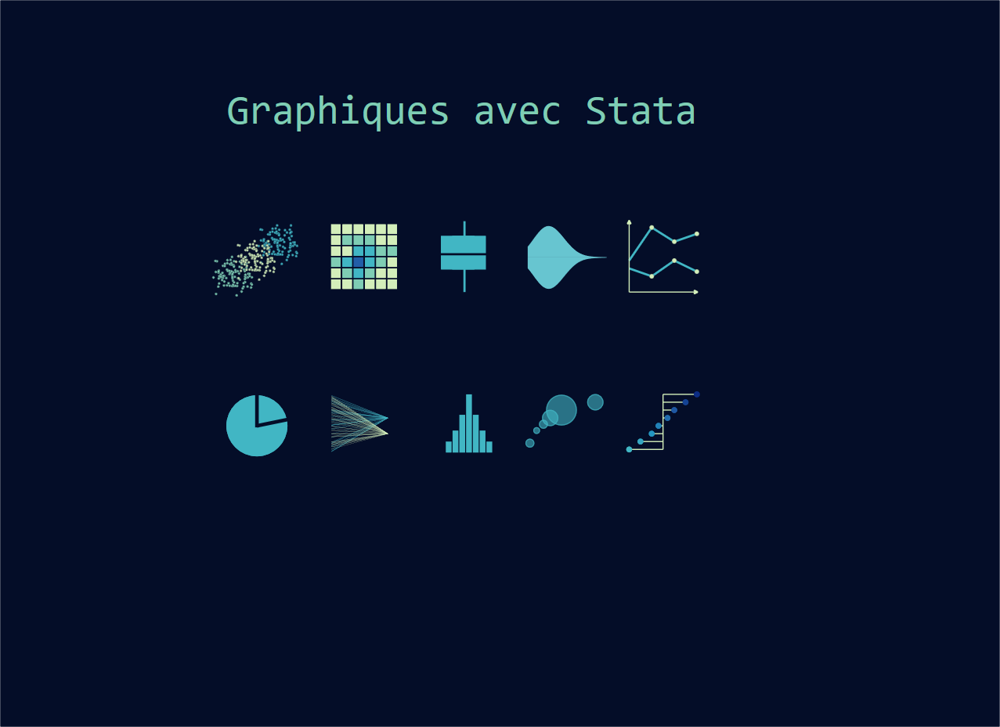
- Pour alléger le document des programmes ont été collapsés. Cliquer sur Programme pour les faire apparaitre
PROGRAMME
PROGRAMME STATA- Les programmes des tp de la formation du 15 septembre 2020:
- La taille des graphiques a été réduite: clic droit + “view image” pour les visualiser en taille réelle
1 Introduction à la sémiologie graphique
Présentation réalisée par Bénédicte Garnier (Ined-Sms):
https://github.com/mthevenin/stata_fr/blob/master/semio_bene/2020.09.14.BGIntro_ppt.pdf
Cette présentation sera intégrée correctement au site ultérieurement (mais rapidement)
2 Générer et modifier des graphiques
2.1 Les graphiques Stata
- Graphiques de type statiques et non intéractifs
- Graphiques de type one way (y)) ou two way (x,y)
- Une syntaxe de base plutôt simple
- Des graphiques critiqués pour leur aspect rustre par défaut, loin des standards actuels
- Mauvaise communication officielle : https://www.stata.com/stata-news/news33-4/spotlight/

- Alors que…:

- Mauvaise communication officielle : https://www.stata.com/stata-news/news33-4/spotlight/
Source: https://graphworkflow.files.wordpress.com
Améliorations récentes:
- Depuis Stata 15, l’opacité/transparence des couleurs peut être modifiée.
- Des commandes externes qui permettent de démultiplier les possibilités en termes de couleurs et de styles, en particulier les deux commandes de Ben Jann: colorpalette et grstyle
- Depuis la version 16 on peut utiliser intéractivement Python sous Stata, ce qui ouvre de nombreuses possibilités au niveau de la visualisation des données avec les graphiques intéractifs et dynamiques
2.2 Générer et éditer un graphique
2.2.1 Par les boites de dialogue
Générer un graphique:
- Ouverture d’une boite directement dans la fenêtre command avec la commande db:
db command - Préférer submit à OK pour laisser la fenêtre ouverte
db tw
db histogramEditer un graphique:
- On peut éditer manuellement le graphique après sa création dans la boîte d’édition du graphique, ou en le chargeant après sauvegarde
- On peut enregistrer les modifications avec record - play pour une édition ultérieure. Un fichier au format .grec est enregistrée. Il peut être édité
- Quelques améliorations de l’interface d’édition avec stata 16
exemple:
sysuse auto, clear
* sauvegarde en mémoire
tw scatter price mpg, name(g1, replace)
graph display g1 [, scheme() play()....]
* sauvegarde en dur
tw scatter price mpg, save(g1, replace)
graph display g1 [, scheme() play()....]2.2.2 Syntaxe
2.2.2.1 Un seul bloc d’objets graphiques
[tw/graph] type_graph Y1 Y2 Y3.... [X] [Z] [, option1(Y1 Y2 Y3... X Z)....options_generales] Important: si plusieurs éléments graphiques, le paramètrage des options suit l’ordre Y1,Y2,Y3…..
Remarque 1: Y - X peuvent-être des variables mais également des coordonnées (graphique type scatteri - pci - pcarrowi) Remarque 2: on peut genérer des graphiques sur des fonctions: tw function Y=f(X)
Exemple
Graphique obtenu dans l’aide de la commande tw line : espérance de vie aux Etats-Unis de 1900 à 2000
[graph gauche]**
sysuse uslifeexp.dta , clear
tw line le year, title("Espérance de vie") - Options:
- Option générale:
title()titre du graphique avec aspect par défaut
- Option générale:
Exemple [graph droite]
tw line le le_male le_female year, ///
lc(*.3) ///
title("Espérance de vie") ///
legend(order(1 "Ensemble" 2 "Hommes" 3 "Femmes") pos(4) col(1) ring(0)) ///- Options:
- Options des courbes: intensité de la couleur réduite pour la variable le
lc(*.2)et augmentée pour le_male et le_femalelc(1.3) - Options générales:
- Titre: positionné à 11 heures
pos(11) - Modification de la légende:
- Labels:
order(1 "Ensemble" 2 "Hommes" 3 "femmes") - A l’intérieur du graphique
ring(0) - Positionnée à 4 heures
pos(4) - Affichée en une seule colonne
col(1)`
- Labels:
- Titre: positionné à 11 heures
- Options des courbes: intensité de la couleur réduite pour la variable le
- Remarque: la courbe pour l’ensemble de la population a éte mise en arrière plan (première position des Y dans la commande)
Graphique 1

2.2.2.2 Plusieurs objets graphiques
- Chaque objet est séparé par () ou ||
- Il contient ses options
[tw/graph] (type_graph1 Y1 [X1] [Y2] [X2] [Z] [in if] [weight] [, options(1)]) ///
(type_graph2 Y2 [X1] [Y2] [X2] [Z] [in if] [weight] [, options(2)]) ///
[(type_graph3...)] ... ///
[(type_graph4...)] ... ///
[, options_generales] ou
[tw/graph] type_graph1 Y1 [X1] [Y2] [X2] [Z] [in if] [weight] [, options(1)]) ///
|| type_graph2 Y2 [X2] [Y2] [X2] [Z] [in if] [weight] [, options(1)]) ///
|| [type_graph3...] ... ///
|| [type_graph4...] ... ///
|| [, options_generales] Exemple
sysuse auto, clear
* sans option
tw scatter price mpg if foreign==0 ///
|| scatter price mpg if foreign==1 ///
||, legend(order(1 "Domestic" 2 "Foreign"))
* avec options
tw scatter price mpg if foreign==0 , msiz(vlarge) mc("84 2 163%60") mlc(black) mlw(vthin) ///
|| scatter price mpg if foreign==1 , msiz(vlarge) mc("244 136 73%60") mlc(black) mlw(vthin) ///
, legend(order(1 "Domestic" 2 "Foreign") region(lcolor(%0))) ///
graphr(color(white)) plotr(color(white)) name(g2,replace) Graphique 2
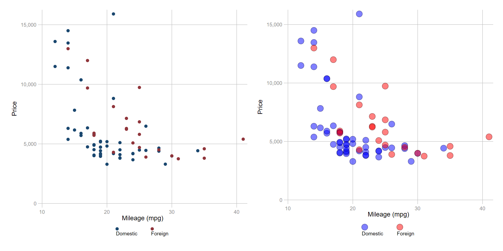
- Options sur les /bulles:
- Modification de la couleur de remplissage de la bulle avec l’option
mc()[mcolor: marker-color]. L’opacité à été réduite à 60% pour laisser apparaitre les bulles superposées en arrière plan:84 2 163%60et244 136 73%60 - Modification du contour des bulles avec
mlc(black)(marker-line-color) etmlw(vthin)(marker-line-width) - Augmentation de la taille des bulles avec
msiz(large)(marker-size)
- Modification de la couleur de remplissage de la bulle avec l’option
- Option générale:
- Ajout d’une légende et suppression du contour:
legend(order(1 "Domestic" 2 "Foreign") region(lcolor(%0)))
- Ajout d’une légende et suppression du contour:
Cas particuliers: pour les graphiques de type oneway [graph bar, graph box, pie…], les options des objets sont renseignées dans les options générales avec possibilité de paramétrer les options de chaque objet en suivant une syntaxe du type objet(#, option objet #)
graph bar y1 y2, ///
bar(1, options) ///
bar(2, options) title("title") Préférer un graphique avec un seul bloc d’objets ??
Plutôt que de multiplier le nombre d’objets et d’options, on peut créer une variable pour chaque modalité et générer un graphique à un seul bloc
sysuse auto,
separate price, by(foreign)
tw scatter price0 price1 mpg ///
, msiz(large large) mc(red%50 blue%50) mlc(black black) mlw(vthin vthin) ///
legend(order(1 "Domestic" 2 "Foreign") region(lcolor(%0))) 2.3 [Quelques] Options graphiques
Il s’agit d’un tour d’horizon forcément imcomplet des options graphiques. On va regarder principalement les options liées aux couleurs, tailles, positions; et quelques paramètres de bases pour les axes, légendes, titres, et les graphiques combinés
Un très bon pense bête: https://geocenter.github.io/StataTraining/pdf/StataCheatSheet_visualization15_Syntax_2016_June-REV.pdf
2.3.1 Options d’un objet graphique
COULEURS ET TAILLES/EPAISSEURS
2.3.1.1 Couleurs
- 3 Eléments dans les options couleurs
Un nom ou un code numérique: la couleur navy (première couleur de la palette Stata s2) à pour code RGB [Red-Green-Blue]
"26 71 11"Modification de l’intensité (saturation): par défaut la couleur d’une palette a une saturation de 1, on tire vers le blanc en la réduisant, vers le noir en l’augmentant
- Valeur minimale 0 (blanc ou quasi blanc), pas de valeur maximale.
- Après le nom ou le code couleur, l’intensité est modifiée par
*# - Exemples:
option_couleur(*.5)réduit l’intensité de 50% de la couleur utilisée par défautoption_couleur(*1.2)augmente l’intensité de 20% de la couleur utilisée par défaut
Jouer sur la transparence (depuis Stata 15): par défaut le niveau d’opacité est de 100% [transparence = 0%]
- Valeur minimale 0, valeur maximale 100
- Après le nom ou le code de la couleur, l’opacité est réduite par
%#avec # compris entre 0 et 100-] - Une transparence totale option(
%0) permet de cacher des éléments d’un graphique
On peut combiner les deux modifications:
- Baisser l’intensité et réduire l’opacité n’a aucun intérêt (voir graphique sur les barres plus bas)
- Augmenter l’intensité et baisser l’opacité modifiera le rendu de la couleur dans le graphique
optionc([couleur]*1.5%50): ici intensité multiplié par 1.5 avec 50% de transparence
Exemples de syntaxes
Objets graphiques
tw scatter Y X, mc(blue%30) mlc(black)
tw line Y X, lc(blue*1.2)
graph box Y1 Y2, box(1,fc(red%50)) box(2,fc(blue%50))Options
title("MON TITRE", c(red) box fc(blue) lc(black) ) ///
legend(region(fc(blue*.2) lc(black)))EXEMPLES
Nuage de points: contrôle des effets de superposition
Graphique 3
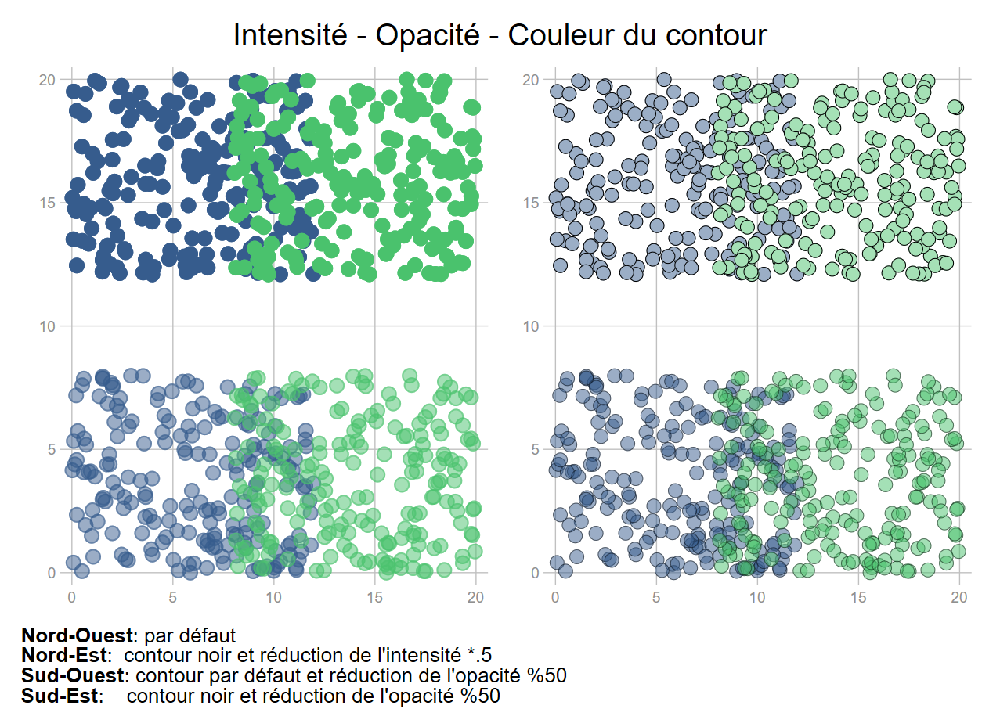
Barres
Graphique 4
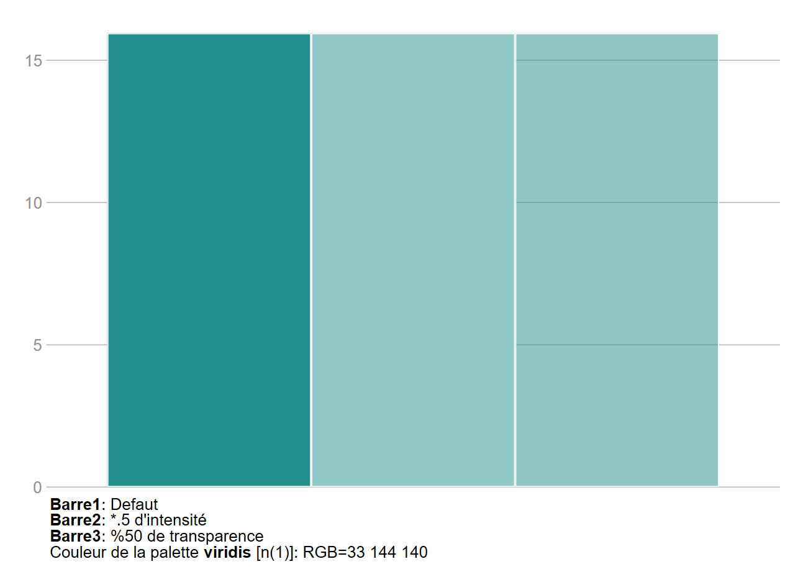
Graphique 5
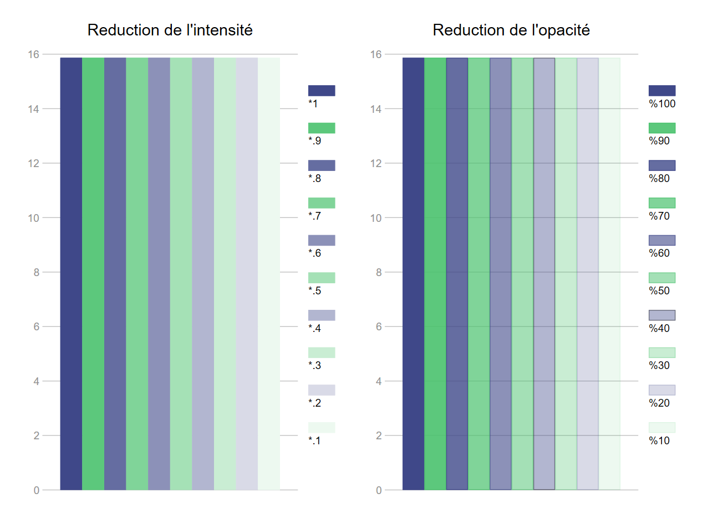
2.3.1.2 Taille - Epaisseurs
2.3.1.2.1 Tailles/épaisseurs prédéfinies
- Les tailles et épaisseurs prédéfinies ont un nom (small, large…)
- Selon l’élément (symbole, courbe, texte), les noms et la liste changent
Types marker
Graphique 6
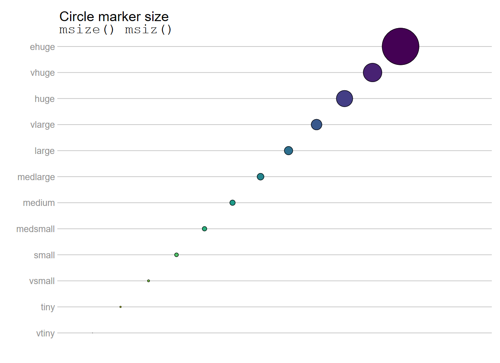
Graphique 7
Il est fortement conseillé de n’utiliser que les bulles
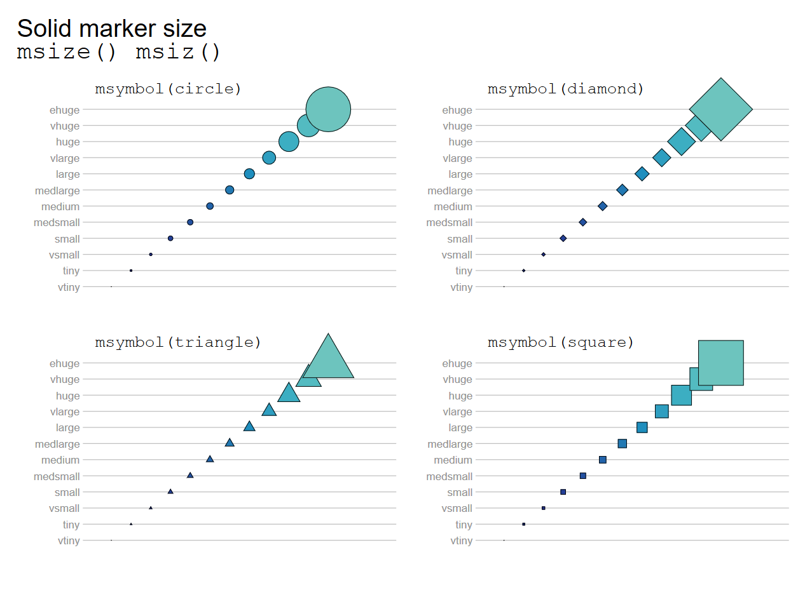
Graphique 8
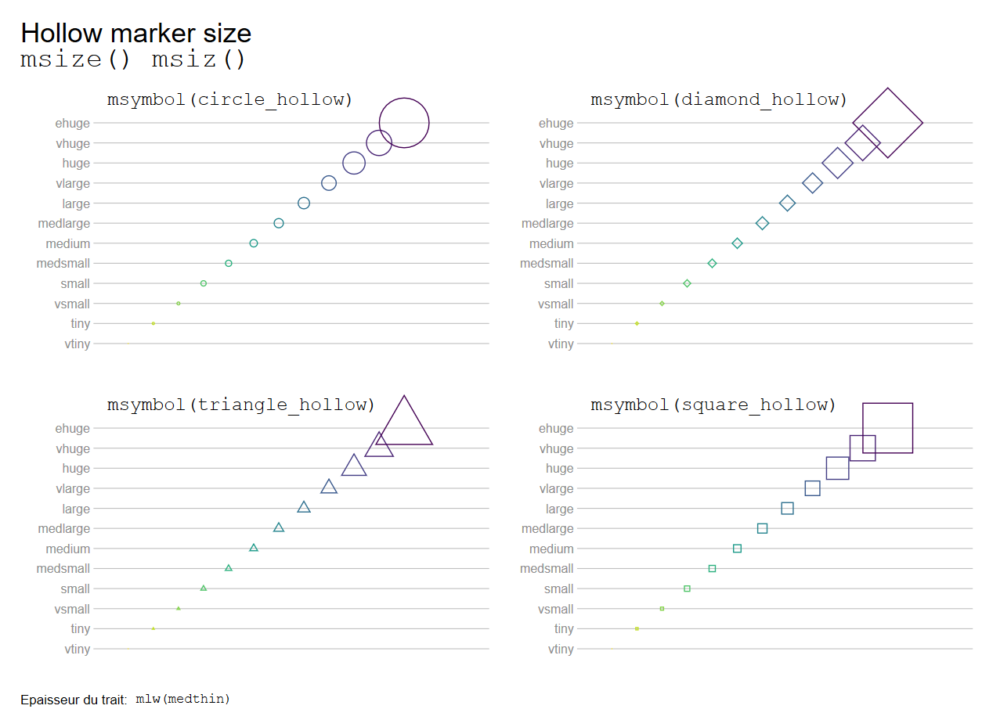
Graphique 9
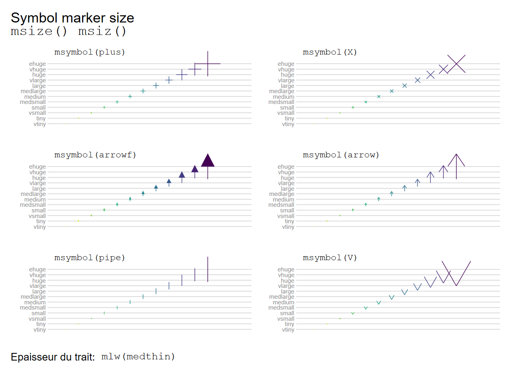
Types line
Graphique 10
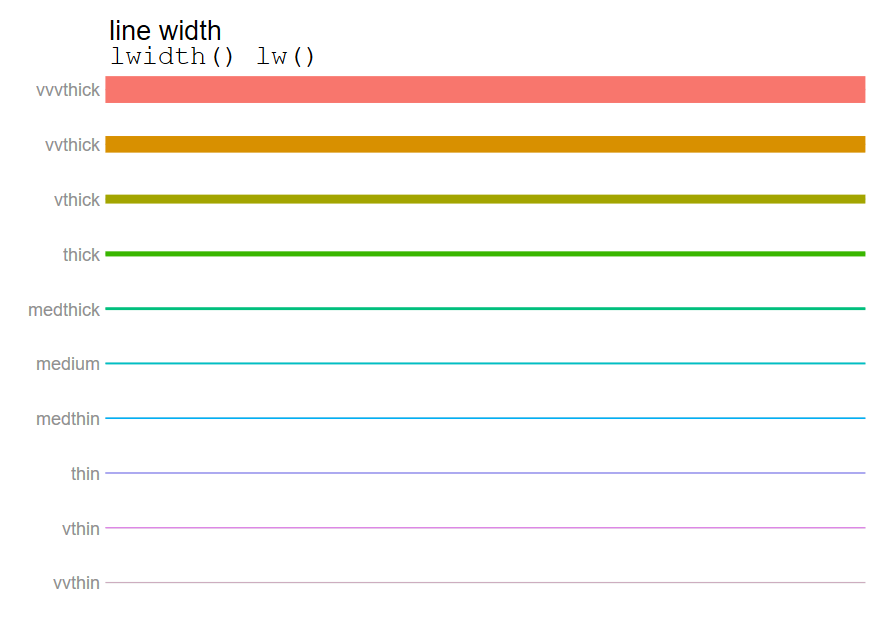
Graphique 11
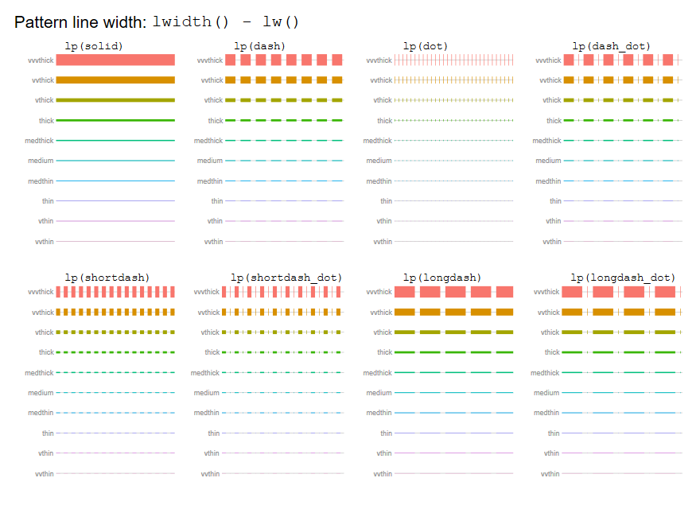
Graphique 12
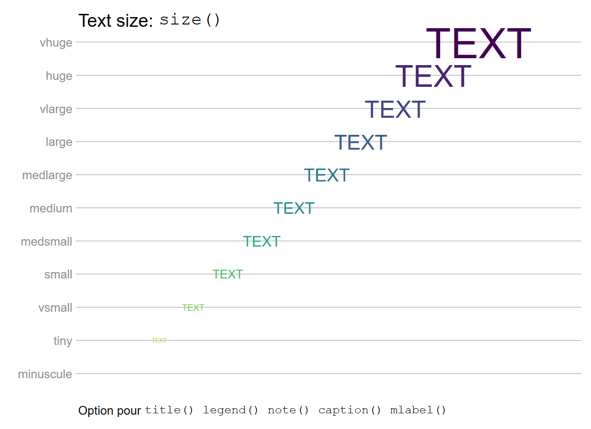
2.3.1.2.2 Tailles paramétrées
- Les tailles et épaisseurs peuvent être paramétrées manuellement:
- par unité de mesure: #pt (printer point) #in (pouce) #cm (centimètre )
- par un coefficient multiplicateur d’une taille de référence:
option(#rs)ouoption(*#). - visiblement
#rspeut-être réduit à# - La taille et l’épaisseur semblent semblent pour
*#
- par unité de mesure: #pt (printer point) #in (pouce) #cm (centimètre )
Graphique 13
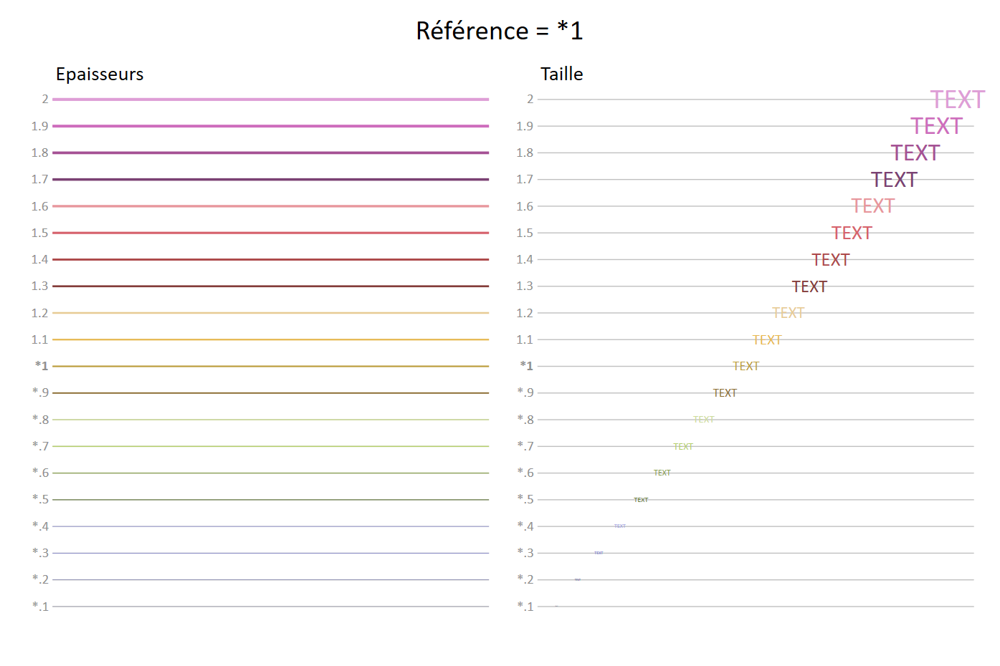
Exercices
Avec la base auto [sysuse auto.dta]
* Graphique(s) I
- Reproduire l’un et/ou l’autre de ces graphiques avec les variable mpg (continue) et foreign (discrete) • Les histogrammes sont générés avec la fonction
tw histogram(à préférer à la commande one-wayhistogram) - Les densités sont estimées avec la fonction
kdensity[help kdensity]
Graphique 14
PROGRAMME
sysuse auto, clear
qui separate mpg, by(foreign)
kdensity mpg0 , g(x1 d1) nograph k(gauss)
kdensity mpg1 , g(x0 d0) nograph k(gauss)
tw histogram mpg0 , bin(10) density fcolor("34 94 168%70") lc(black) lw(vvthin) ///
|| histogram mpg1 , bin(10) density fcolor("139 209 187%70") lc(black) lw(vvthin) ///
legend(order(1 "Domestic" 2 "Foreign") region(lcolor(%0))) xlabel(10(10)50)
tw area d1 d0 x0, fc("34 94 168%70" "139 209 187%70") lc(black black) lw(vthin vthin) ///
legend(order(1 "Domestic" 2 "Foreign") region(lcolor(%0))) xlabel(10(10)50) 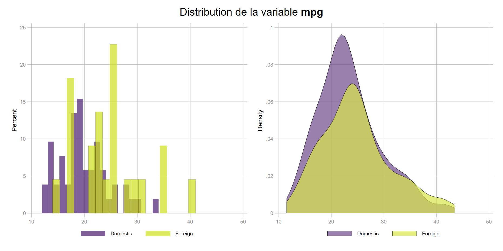
- Graphique(s) II
Reproduire le graphique suivant:
- nuage de points des variables price et mpg pour les deux modalités de la variable foreign, avec report des OLS
- La droite de l’OLS est générée avec un graphique de type
lfitci:- Couleur de la droite: option
clcolor() - Couleur de l’intervalle de confiance: option
fcolor() - Couleur du contour de l’intervalle de confiance: option
alcolor()
- Couleur de la droite: option
- Légende facultative (voir section suivante)
Graphique 15
PROGRAMME
tw lfitci price mpg if !foreign, clcolor("34 94 168*1.2") fcolor("34 94 168%25") alcolor(%0) ///
|| lfitci price mpg if foreign, clcolor("139 209 187*1.2") fcolor("139 209 187%25") alcolor(%0) ///
|| scatter price mpg if !foreign, msize(medlarge) mlc(black) mlw(vthin) mc("34 94 168*.5") jitter(2) ///
|| scatter price mpg if foreign, msize(medlarge) mlc(black) mlw(vthin) mc("139 209 187*.5") jitter(2) ///
|| , legend(order(5 "Domestic" 6 "Foreign") pos(1) region(lc(%0))) ///
ytitle("price") xtitle("mpg") 
2.3.2 Habillage : Axes - Légendes - Titres
2.3.2.1 Axes
4 sous ensembles d’options: titre, label, échelles et choix pour les axes multiples (non traité)
Titres
- xtitle() ytitle():
xtitle(["titres"] [, options]- Si seulement des option(s) en conservant le titre par défaut (label de la variable):
xtitle(, options) - Principales options: taille
size(), couleurcolor() - Titres sur plusieurs lignes:
xtitle("ligne1" ligne2"....[, options]
- Si seulement des option(s) en conservant le titre par défaut (label de la variable):
Labels
- xlabel() ylabel():
xlabel([coordonnées] [,options])- Si seulement des option(s) en conservant les coordonnées par défaut:
xlabel(, options)
- Si seulement des option(s) en conservant les coordonnées par défaut:
- Modification du label:
- Avec min(delta)max:
xlabel(#1([#2]#3)). Exemplexlabel(0(5)10) - Manuel: xlabel( #1 #2 “label2”…) ou xlabel( #1 “label1” #2 “label2”…). Exemple: xlabel(0 5 10) ou xlabel(0 “Zero” 5 “Cinq” 10 “Dix”)
- On peut mixer l’approche manuelle et l’approche avec le delta: xlabel( 0 .5 1(1)10)
- Avec min(delta)max:
- Principales options:
- taille
labsize()[labs] , couleurlabcolor()[labc] - Alterner les positions pour éviter les chevauchements:
alternate[alt] - Modifier l’angle:
angle(#)avec # valeur de l’angle [0 (horizontal), 45, 90 (vertical) …] - Modification du grid:
- couleur:
glctlc - épaisseur:
glwtlw
- couleur:
- taille
Echelles
- xscale() yscale()
- Passage à une échelle logarithmique:
log - Echelle en ordre décroissant:
reverse - Supprimer l’affichage des axes:
xscale(off)et/ouyscale(off) - Modifier la longueur de l’axe :
range(min max)[r()]. Surtout utilisé pour aller au-delà de la longeur définie par xlabel ou ylabel et ajouter des éléments dans cette zône (texte par exemple)
- Passage à une échelle logarithmique:
Graphique 16
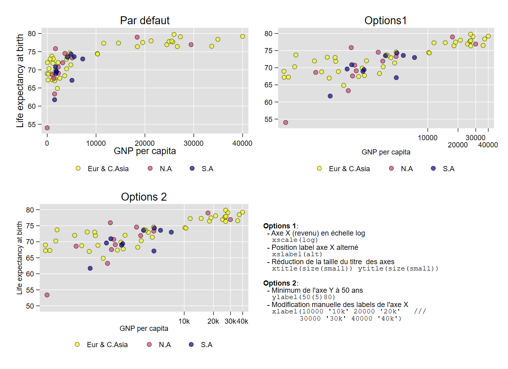
Attention pour la dernière option, le label doit-être indiqué par des doubles quotes " label " et non par ‘label’: xlabel(10000 "10k" 20000 "20k" 30000 "30k" 40000 "40k")
Graphique options 1
tw scatter lexp gnppc if region==1, ///
|| scatter lexp gnppc if region==2, ///
|| scatter lexp gnppc if region==3, ///
, title("Options 2") ///
legend(order(1 "Eur & C.Asia" 2 "N.A" 3 "S.A")) ///
xscale(log) xlabel(,alt) xtitle(, size(small)) ///
ylabel(50(5)80) ytitle(, size(small)) AIDES
- https://www.stata.com/manuals/g-3axis_options.pdf#g-3axis_options
help axis_optionshelp axis_title_optionshelp axis_label_optionshelp axis_scale_optionshelp axis_choice_options
2.3.2.2 Légendes
- legend():
legend() - Ne pas afficher une légende:
legend(off) - Position par défaut: 6 heures (Sud) - Extérieur. Modifiable avec
pos(#)etring(#)[voir Annexe plus bas] - Modifier le nombre de lignes et de colonne:
row(#)etcol(#) - Modifier les labels de la légende:
- order():
order( 1 "label1" 2 "label2" .....) - lab():
lab(1 "label1") lab(2 "label2") ...) - L’apparence (gras, itallique…) sont modifiables avec des balises smcl
- order():
- Modifier l’aspect de la région:
region(options)our(options) - Texte sous le symbol:
stack
Graphique 17
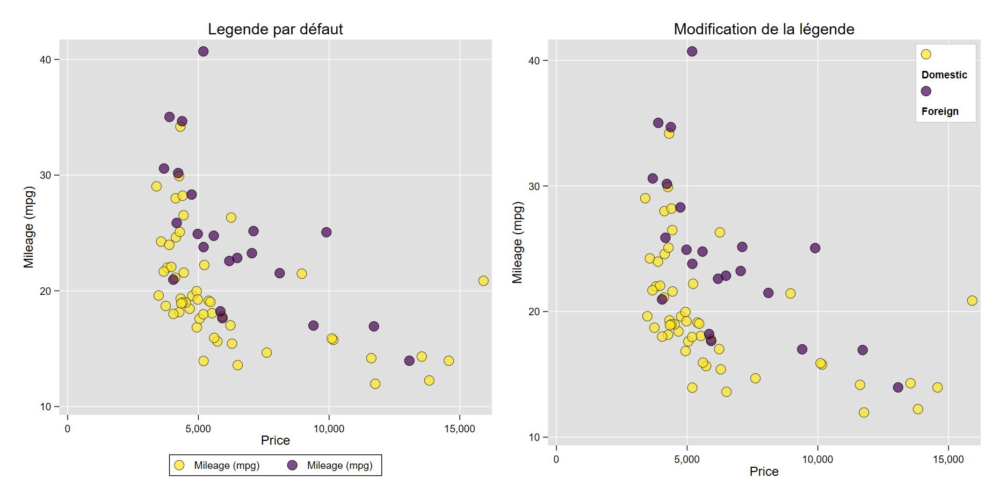
Par défaut
tw scatter mpg price if foreign==0 ///
|| scatter mpg price if foreign==1 ///
title("Legende par défaut")Avec modification
tw scatter mpg price if foreign==0 ///
|| scatter mpg price if foreign==1 ///
, title("Modification de la légende") ///
legend(order(1 "{bf:Domestic}" 2 "{bf:Foreign}") ///
pos1) ring(0) col(1) ///
region(lw(vvthin)) ///
stack ) - Changement des labels de la légende, affichés en gras (balise smcl):
order(1 "{bf:Domestic}" 2 "{bf:Foreign}") - Position à 1 heure dans le graphique et affichage sur une ligne :
pos(1) ring(0) col(1) - Modification de la boite avec un contour très fin:
region(lw(vvthin) - Texte sous le symbol: option
stack
AIDES
- https://www.stata.com/manuals/g-3legend_options.pdf
help legend_options- Pour les graphiques de type countour et contourline les options sont renseignées par clegend() et
plegend
2.3.2.3 Titres - Notes - Texte
- Modification de la position
- Titre par défaut: à 12 heures à l’extérieur
- Note par défaut: à 17 heures à l’extérieur
- Caption par défaut: Sous la note
- Titre(s) - Notes - Texte: position modifiable avec
pos(#)etring(#)[voir Annexe plus bas] - Texte libre: positionné sur les coordonnées des axes (x,y)
- L’apparence (gras, italique, polices…) sont modifiables avec des balises smcl + ajout de symboles mathématiques + lettres grecques
- Tailles et couleurs modifiables avec
sizeetcolor - Texte sur plusieurs lignes:
"ligne1" "ligne2"....[, options]Exemple:title("Titre" "de mon" "graphique)affiche le titre sur trois lignes
ANNEXE: POSITION
Texte positionné au Nord et au Sud
Graphique 18
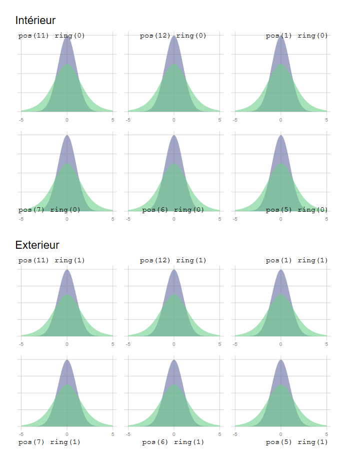
Texte positionné à l’Ouest et à l’Est
Graphique 19
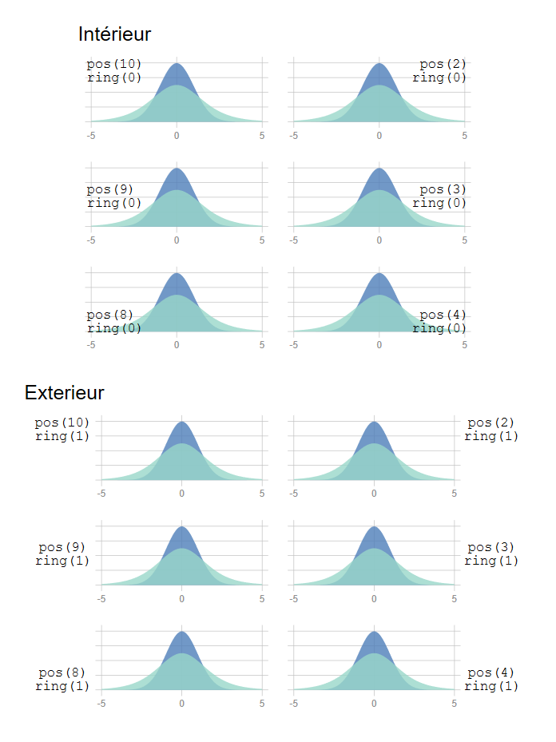
2.3.3 Autres
- Modification des couleurs de fond:
- Zone intérieure du graphique:
plotr(color()) - Zone extérieure du graphique:
graphr(color())
- Zone intérieure du graphique:
- name: sauvegarde temporaire sur la session
- utiliser l’option replace pour écraser le graph, sinon effectuer
graph drop noms_graphsougraph drop _all - Exemple:
tw line y x, name(g1,replace)
- utiliser l’option replace pour écraser le graph, sinon effectuer
- save: sauvegarde en dur sur le disque
- Utile de créer un répertoire par défaut avec une macro (type
global):global g "D:/stata_graph/"puistw line y x, save($g/g1, replace) - récupérer les infos d’un graph enregistré:
graph describe nom_grap.gph(le code est affiché)
- Utile de créer un répertoire par défaut avec une macro (type
- scale(#): permet de modifier la taille de tous les éléments générés par le graphique, en particulier le texte. Utile, par exemple, lorsque le texte d’une légende sort du contour. Valeur de référence=1
- nodraw: équivalent de
quietlypour les graphiques. Permet de réduire le temps d’exécution pour les graphiques combinés
2.4 Les graphiques combinés
Un graphique combiné consiste à mettre en page plusieurs graphiques dans un seul graphique
- 2 commandes:
- interne: graph combine
- externe: grc1leg pour avoir une seule légende, si elle est partagé pour tous les graphiques
tw graph1, name(g1, replace) nodraw
tw graph2, name(g2, replace) nodraw
graph combine g1 g2, iscale(.9) xsize(20) ysize(15) scheme(style1 style2) title("graphique combiné")- préférer
name()àsave()pour les graphiques composants le graphique combiné - utiliser
nodrawpour raccourcir le temps d’exécution - graph combine et gr1leg (externe: permet d’afficher une seule légende)
- row(#) - cols(#)
- iscale(#): baisse ou augmente la taille des éléments textes par un coefficient multiplicateur
- xsize(#) - ysize(#): modifie la taille du graphique combiné en pt (max # = 20), la combinaison modifiant le rendu des graphiques individuels avec un effet écrasement:
- Pour un graphique à plusieurs colonnes et une ligne: on peut augmenter le ratio xsize(#)/ysize(#)
- Pour un graphique à plusieurs lignes et une colonne: on peut baisser le ratio xsize(#)/ysize(#)
- fxsize(#) - fysize: on peut modifier la taille relative des graphiques qui seront combinés. # est un %
- xcommon - ycommon: ajuster les axes pour tous les graphiques
- legendfrom: une seule légende avec l’option legendfrom(name) de la commande
grc1leg - gestion des styles: si les graphiques utilisent des thèmes graphiques différents, le dernier sera appliqué à tous les graphiques. Pour conserver les thèmes de chaque graphique:
scheme(nom_style1 nom_style2....)
- Graphique vide
- Il peut être intéressant, en particulier lorsque le nombre de graphique est impair, d’utiliser un graphique vide pour ajouter des éléments de texte: un titre si le graphique vide est sur la première ligne ou des notes s’il est situé sur la dernière
- La syntaxe de ce graphique peut-être enregistrée sous la forme du’une macro en dur (global) pour le réutiliser facilement
Graphique vide
global gvide "scatteri 1 1, ylab(,nogrid) xlab(,nogrid) mc(%0) xtitle("") ytitle("") yscale(off noline) xscale(off noline) nodraw name(gv,replace)"
tw $gvide [options]Exemples 4 Graphique combinés avec le nombre de lignes et de colonnes par défaut: col(2) ou row(2)
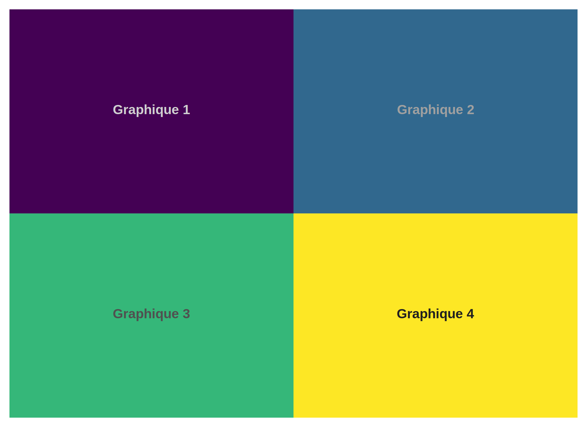
Dans le graphique suivant on modifie avec fxsize() et fysize()` la taille raltive des 4 graphiques individuellement.
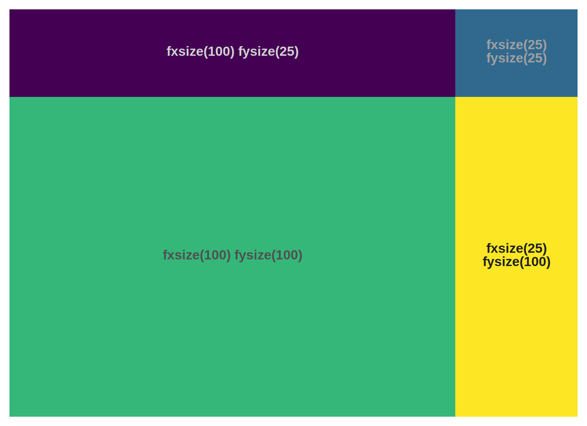
Dans les graphique suivant, le second est un graphique vide sert à afficher le titre. Les graphiques donnent les distributions marginales de deux variables, ainsi quele nuage de point représentant la distribution croisée
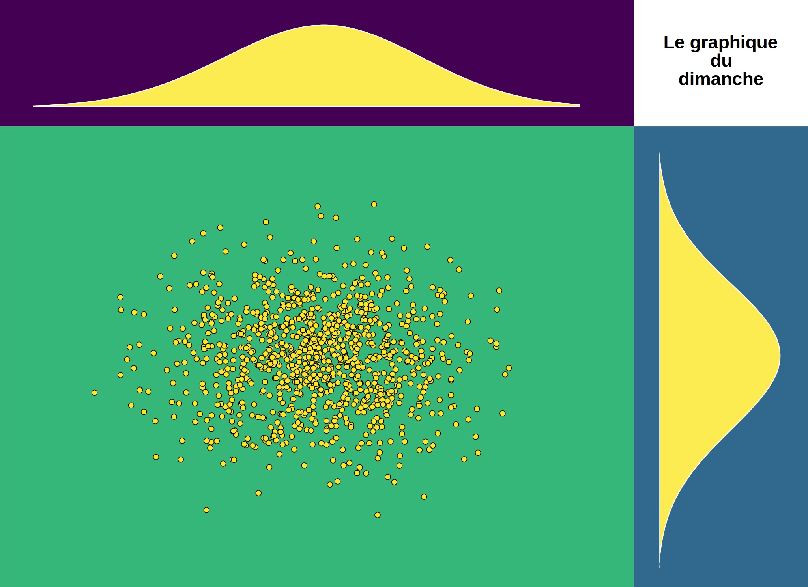
Pour en savoir plus
Graph combine—Combining graphs - Lars ̈Angquist https://journals.sagepub.com/doi/pdf/10.1177/1536867X1401400115
2.5 Python
- Implémentation de Python avec la version 16 de Stata:
- Stata n’intalle pas Python: [Installation de Python] https://mthevenin.github.io/stata_fr/python.html
- Commandes Stata dédiées pour gérer l’utilisation de Python [
python querypython describepython clear….] - Python est exécutable dans la fenêtre command ou dans l’éditeur de programme
- Mise à disposition d’Une librairie Python pour faciliter le passage d’une application à une autre (SFI)
- Les macros Stata sont reconnues par Python (très intéressant pour les graphiques)
Exemple 1
Exemple 1
python:
----------------------- python (type end to exit) --------------------
a=1
b=2
a+b
3
end
----------------------------------------------------------------------Exemple 2: importation d’une base Stata avec la librarie pandas Fonction panda: read_stata(‘path/nom_bas’)
python:
----------------------- python (type end to exit) --------------------
import pandas as pa
df = pa.read_stata('D:/stata_temp/auto.dta')
df.head(10)
price mpg turn displacement gear_ratio foreign
0 4099 22 40 121 3.58 Domestic
1 4749 17 40 258 2.53 Domestic
2 3799 22 35 121 3.08 Domestic
3 4816 20 40 196 2.93 Domestic
4 7827 15 43 350 2.41 Domestic
5 5788 18 43 231 2.73 Domestic
6 4453 26 34 304 2.87 Domestic
7 5189 20 42 196 2.93 Domestic
8 10372 16 43 231 2.93 Domestic
9 4082 19 42 231 3.08 Domestic
end
----------------------------------------------------------------------- Graphiques et data-visualisation
- Les trois principales librairies pour les graphiques
matplotlib: https://matplotlib.org/seaborn: https://seaborn.pydata.org/plotlyhttps://plotly.com/graphing-libraries/
- Autres:
ggplotetplotninepour des graphiques types ggplot2 (R)- ggplot: la librairie n’est plus mise à jour - très imcomplète
- plotnine: la librairie est mise à jour - incomplète
- Remarques :
- Certaines librairies comme altair ou bokeh ne sont utilisables que sous environnement conda (anaconda ou miniconda) avec les applications jupyter (notebook) ou spyder
- Cartographie : les librairies plotly (voir plus bas) et folium (en cours de test) sont utilisables sous Stata
2.5.1 Librairie seaborn
- Graphiques statiques
Exemple 1
* Partie Stata
sysuse auto, clear
xtile mpg2 = mpg, n(2)
label define mpg 1 "mpg<20" 2 "mpg>=20", modify
label value mpg2 mpg
keep price mpg weight displacement turn mpg2
save auto2, replace
* Partie Python
python:
import pandas as pa
import seaborn as sns
df = pa.read_stata('auto2.dta')
g = sns.pairplot(df, hue="mpg2",palette="hls")
g.savefig("graph1.png")
end
! graph1.pngGraphique 20

Remarques:
- Les labels de la variable mpg2 ont été lus par la fonction Python
pairplot - Le graphique a du être enregistré avec la fonction
savefig(nom_graph)et ouvert avec l’invite de commande windows:! nom_graphoushell nom_graph- Ce n’est pas une obligation, tout dépend de la fonction.
- Si le graphique peut-être affiché directement, on peut utiliser la fonction
show()
**Exemple 2
Histogrammes et heatplot
use nhanes2, clear
keep height weight
save pression, replace
python:
import pandas as pa
import seaborn as sns
df = pa.read_stata('pression.dta')
sns.set(style="ticks")
g = sns.jointplot(x="height", y="weight", kind="hex", color="mediumvioletred", data=df)
g.savefig("graph2.png")
end
! graph2.png Graphique 21
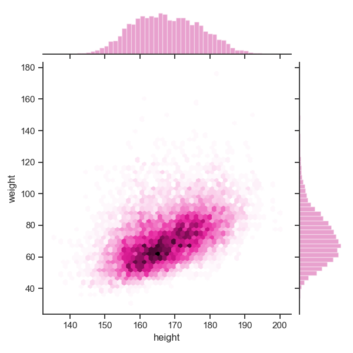
Densité: en remplaçant l’option kind="hex" par kind="kde"
Graphique 22
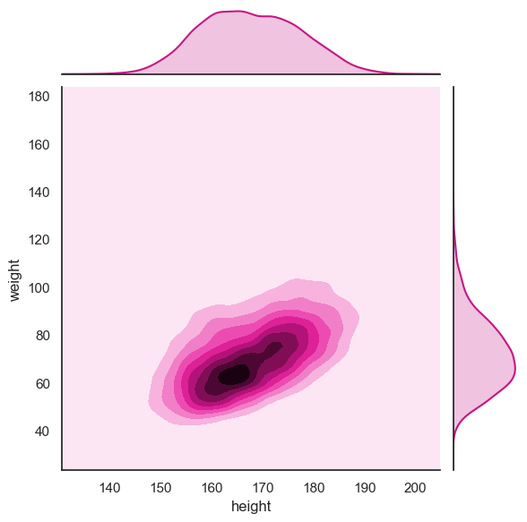
2.5.2 Plotly
Graphiques de type interactifs et/ou dynamiques - possibilité de programmer des dashboards [A tester]
- Graphiques interactif et dynamique:
- Des informations s’affichent en passant sur le(s) élément(s) du graphique
- On peut choisir de faire apparaître une partie des éléments composant le graphique. Pratique pour les courbes (clic et double clic dans la légende)
- Des options en haut et à gauche du graphiques permettent de zoomer/dezoomer…
- Graphique enregistré en format html. Pour une capture png, on peut l’enregistrer directement (voir menu en haut et à gauche)
Exemple 1: Graphique intéractif de type line
https://plotly.com/python/line-charts/
sysuse uslifeexp.dta , clear
keep year le le_male le_female
rename le le1
rename le_male le2
rename le_female le3
reshape long le, i(year) j(pop)
label define pop 1 "tot" 2 "Hommes" 3 "Femmes"
label value pop pop
save uslifeexp.dta , replace
python:
import pandas as pa
import plotly.express as px
df = pa.read_stata('uslifeexp.dta')
fig = px.line(df, x="year", y="le", color="pop")
fig.update_layout( title="Espérance de vie US de 1900 & 1999", yaxis_title="Espérance de vie")
fig.show()
endGraphique 23
Exemple 3 : Graphique interactif de type treemap
https://plotly.com/python/treemaps/
use "gm2.dta", clear
des
/*
--------------------------------------------------------------------------------
storage display value
variable name type format label variable label
--------------------------------------------------------------------------------
country str30 %30s
continent str14 %14s
lifeexp double %6.2f
year float %9.0g
pop long %12.0g
world str5 %9s
--------------------------------------------------------------------------------
*/
python:
import pandas as pa
import plotly.express as px
df = pa.read_stata('gm2.dta')
fig = px.treemap(df, path=['world', 'continent', 'country'], values='pop', color='lifeexp')
fig.show()
endGraphique 24
Lecture:
- Les périmètres des boîtes sont relatifs à la taille de la population: taille relative des continents - taille relative des pays dans chaque continent
- Les différentes couleurs sont relatives à l’espérance de vie
- Pour world et les continents les espérances sont calculées par une moyenne pondérée: avec stata pour l’Europe:
sum lifeexp [iw=pop] if continent=Europe" - Manque quelques pays dont le continent n’était pas renseigné dans la base d’origine et que je n’ai pas pris la peine et/ou le temps de modifier, ainsi que les pays avec moins de 1 million d’habitant.e.s
Exemple 3 : Graphique interactif et dynamique de type barres
https://plotly.com/python/bar-charts/
use gm3, clear
drop if year<1960
drop if continent==""
replace continent="Asia & Oceania" if inlist(continent, "Asia", "Oceania")
bysort country: gen N=_N
sort year pop
drop if N<61 // On conserve seulement les pays avec toutes les années renseignées
tostring year, replace
drop N
save gm4, replace
des
--------------------------------------------------------------------------------
storage display value
variable name type format label variable label
--------------------------------------------------------------------------------
country str30 %30s
continent str14 %14s
pop long %12.0g
year float %6.0f
--------------------------------------------------------------------------------
python:
import pandas as pa
import plotly.express as px
df = pa.read_stata('gm4.dta')
fig = px.bar(df, x="continent", y="pop", color="continent",
animation_frame="year", animation_group="country", range_y=[0, 5000000000])
fig.update_layout( title="Evolution de la population mondiale depuis 1960",
yaxis_title="Population", xaxis_title="Continents")
fig.show()
endGraphique 25
Exemple 4
- Carte intéractive, sans trop d’intérêt, avec Plotly
- Problème pour me sortir de l’échelle continue
- Nombre moyen d’hôtels & campings dans les communes par département (hors Paris: peut-être enlever toute l’Idf en raison des hôtels type “Samu Social”)
- Coordonnées récupérées sur le site de Grégoire David
python:
from urllib.request import urlopen
import json
import pandas as pd
import plotly.express as px
df = pd.read_csv("D:/Marc/SMS/FORMATIONS/2020/graph ur9/formation/hotcamp.csv", dtype={"dep": str})
fig = px.choropleth(
df,
geojson="https://raw.githubusercontent.com/gregoiredavid/france-geojson/master/departements-version-simplifiee.geojson",
featureidkey='properties.code',
locations='dep',
color='mhotcamp3',
title="Nombre moyen d'hotels et de campings par commune (hors Paris)",
projection="mercator",
color_continuous_scale=px.colors.sequential.YlGnBu,
)
fig.update_geos(fitbounds="locations", visible=False)
fig.show()
end3 Utilisation des macros
Une macro est un objet simple qui enregistre une valeur ou une expression, et qui sera utilisé une ou plusieurs fois dans un programme. Elles permettent de générer des expressions en boucle.
Leur utilisation est essentielle pour générer des graphiques Stata et faciliter leur réutilisation, entre autres :
- Alléger la syntaxe de l’habillage dans la commande graphique
- Reporter automatiquement des valeurs (moyenne, minimum, maximum…) dans un graphique
- Produire des graphiques complexes, en particulier en générant des macros empilées
3.1 Types et objets macro
- Rappel important: (toujours) tester le contenu de la macro avec
display(di) ou [très conseillé] avecmacro listsi la macro implique la conservation des double quotes:- *macro list
- Si macro temporaire (local):
macro list _nom_macro[mac list] - Si macro en dur (global):
macro list nom_macro
- boucles: pour générer des boucles se reporter à l’aide:
help foreach-help forvalue
3.1.1 local - global
- global: macro en dur (enregistrée)
Appelé avec $
Supression: `macro drop nom_macro1 nom_macro2…``
Pas de grande utilité à mon sens pour les graphiques, sauf pour utiliser un répertoire par défaut de sauvegarde des graphiques
mkdir "D:/stata_graph"
global g "D:/stata_graph"
tw scatter y x, save($g/nom_graph)- local: macro temporaire (à l’exécution)
- Appelé avec des quotes simples `
nom_macro'(première quote: [alt6])
- Appelé avec des quotes simples `
Exemple
sysuse auto, clear
global varlist price mpg
tw scatter $varlist
macro drop varlist
local varlist price mpg
tw scatter `varlist'- Macro et doubles quotes apparentes [TRES IMPORTANT]
- se fier à
macro listet non àdipour vérifier la lecture de la macro si on doit conserver les doubles quotes dans une expression (couleur, legende…). - Attention à l’intégrité des doubles quotes lorsqu’une macro est réutilisée dans une autre
- Important pour utiliser une palette de couleur utilisée dans un graphique, et pour générer des légendes [voir plus bas]
- se fier à
**Cas 1
local x "A" "B" "C"
mac list _x
* _x: A" "B" "C
local x `" "A" "B" "C" "'
mac list _x
* _x: "A" "B" "C"
local x `""ABC""'
mac list _x
* _x: "ABC"En revanche, si dans une macro une expression texte avec des double quotes est précédée d’une expression sans ce type de quotes, elles sont conservées.
local order 1 "Non" 2 "Oui"
mac list _order
* _order: 1 "Non" 2 "Oui" - La commande magique LEVELSOF
- Transforme les valeurs d’une variable en expression macro
- Syntaxe:
levelsof nom_var [if/in], local(nom_macro) - Remarque: pour les variable caractère l’ordre d’affichage suit l’ordre alphabétique [voir graphique 91 ]
Exemple
levelsof foreign, local(f)
di "`f'"
0 1
levelsof rep78, local(r)
di "`r'"
1 2 3 4 5- Fonctions associées au macro:
- On peut associer des fonctions aux macros, certaines sont utiles pour les graphiques (
help macro- https://www.stata.com/manuals/pmacro.pdf) - Exemple:
word count(),labn,lab
- On peut associer des fonctions aux macros, certaines sont utiles pour les graphiques (
word count()
On compte le nombre d’objets contenus dans une macro (séparé par un espace). Utile pour compter le nombre de boucles a effectuer avec forvalue
levelsof rep78, local(r)
local n: word count(`r')
di `n'
5value label nom_variable Récupère le nom d’un label
local varname foreign
local labn: value label `varname'
di "`labn'"
originlabel nom_label valeur Récupère le nom de la modalité associé à une valeur d’un nom de label
local lab0: label origin 0
local lab1: label origin 1
di "`lab0'"
Domestic
di "`lab1'"
ForeignExemple dans une boucle
sysuse auto, clear
gen rep= rep78<4
label define rep 0 "rep<4" 1 "rep>=4", modify
label value rep rep
local varname rep
local labn: value label `varname'
levelsof `varname', local(l)
foreach l2 of local l {
local lab`l2': label `labn' `l2'
}
tw scatter price mpg if `varname'==1, mc("237 248 177") mlc(black) mlw(vvthin) msiz(medlarge) jitter(2) ///
|| scatter price mpg if `varname'==0, mc("65 182 196") mlc(black) mlw(vvthin) msiz(medlarge) jitter(2) ///
, legend(order(1 "`lab0'" 2 "`lab1'") pos(7) color("163 218 186") region(color("8 29 88*2.2"))) ///
ytitle(, color("163 218 186")) xtitle(, color("163 218 186")) ///
ylabel(, labc("163 218 186") glw(vvthin)) xlabel(, labc("163 218 186") glw(vvthin)) ///
plotr(color("8 29 88*2.2")) graphr(color("8 29 88*2.2")) ///
title("local varname rep", pos(11) color("227 244 178")) En changeant local varname rep (g26) par local varname foreign (g27)
Graphiques 26 & 27
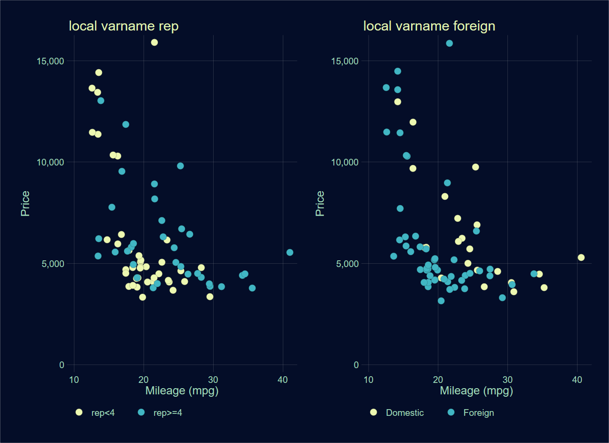
- Mofication du format d’une valeur numérique (changement du nombre de décimale)
- On peut utiliser les objets types
r()oue()dans un graphique (voir plus bas) - Certaines valeurs en mémoire comporte un nombre élévé de decimales
- On peut modifier le format d’affichage de ces valeurs avec une macro: **
di format valeur**
- On peut utiliser les objets types
local dec2: di %6.2f 10.64654654654
di `dec2'
10.65
local dec 10.64654654654
local dec: di %6.2f `dec'
di `dec'
10.65- Expression numérique calculée dans une macro:
local nom_macro = expression
local a= 1 + 1
di `a'
2
local b= `a'^2
di `b'
43.1.2 Objets type return et ereturn
Après l’exécution d’une commande, un certains nombre d’objets sont conservés en mémoire jusqu’à l’exécution de la commande suivante
- objet return [result] :
r()- Affichage liste:
return list
- Affichage liste:
- objet ereturn [estimation]:
e()- Affichage liste:
ereturn list
- Affichage liste:
- Autres
- Matrices:
matrix list
- Matrices:
Exemple
sum price, d
Price
-------------------------------------------------------------
Percentiles Smallest
1% 3291 3291
5% 3748 3299
10% 3895 3667 Obs 74
25% 4195 3748 Sum of Wgt. 74
50% 5006.5 Mean 6165.257
Largest Std. Dev. 2949.496
75% 6342 13466
90% 11385 13594 Variance 8699526
95% 13466 14500 Skewness 1.653434
99% 15906 15906 Kurtosis 4.819188
return list
scalars:
r(N) = 74
r(sum_w) = 74
r(mean) = 6165.256756756757
r(Var) = 8699525.97426879
r(sd) = 2949.495884768919
r(skewness) = 1.653433511704859
r(kurtosis) = 4.819187528464004
r(sum) = 456229
r(min) = 3291
r(max) = 15906
r(p1) = 3291
r(p5) = 3748
r(p10) = 3895
r(p25) = 4195
r(p50) = 5006.5
r(p75) = 6342
r(p90) = 11385
r(p95) = 13466
r(p99) = 15906- Ces résultats peuvent être utilisés, tels quels, lors de l’exécution de la commande suivante
- Ces résultats peuvent être conservé en mémoire dans une macro, et être utilisés tout du long du programme
Exemple
local varlist price mpg
foreach v of loc varlist {
qui sum `v'
local m`v' : di %6.2f `r(mean)'
di "Moyenne `v'= `m`v''"
}- Niveau graphique:
- Permet d’afficher des valeurs dans le graphique
- Permet de générer automatiquement des éléments de type
xlineyline - Permet de généré des graphiques de type scatteri ou pci [on entre directement les coordonnées des axes et non des variables]
Exemple
capt drop xtile qprice = price, n(4)
label define qp 1 "<Q25" 2 "Q25-Q50" 3 "Q50-Q75" 4 ">Q75", modify
label value qprice qp
local varname qprice
local labn: value label `varname'
levelsof `varname', local(l)
foreach l2 of local l {
local lab`l2': label `labn' `l2'
}
local varlist price mpg
foreach v of loc varlist {
qui sum `v'
local m`v' : di %6.2f `r(mean)'
}
tw scatter price mpg if qprice==1, mlc(black) mlw(vthin) mc("31 121 179") msiz(medlarge) jitter(2) ///
|| scatter price mpg if qprice==2, mlc(black) mlw(vthin) mc("60 174 194") msiz(medlarge) jitter(2) ///
|| scatter price mpg if qprice==3, mlc(black) mlw(vthin) mc("132 206 187") msiz(medlarge) jitter(2) ///
|| scatter price mpg if qprice==4, mlc(black) mlw(vthin) mc("211 238 180") msiz(medlarge) ///
|| , legend(order(4 "`lab4'" 3 "`lab3'" 2 "`lab2'" 1 "`lab1'") ///
col(1) pos(9) color("163 218 186") region(color("8 29 88*2.2")) size(vsmall) ) ///
yline(`mprice', lw(vthin) lc("247 252 201") noext) xline(`mmpg', lw(vthin) lc("247 252 201") noext) ///
ytitle(, color("163 218 186")) xtitle(, color("163 218 186")) ///
ylabel(, labc("163 218 186") glw(vvthin)) xlabel(, labc("163 218 186") glw(vvthin)) ///
plotr(color("8 29 88*2.2")) graphr(color("8 29 88*2.2")) ///
note("Moyenne Price = `mprice'" ///
"Moyenne Mpg = `mmpg'", color("163 218 186") pos(7)) Graphique 28
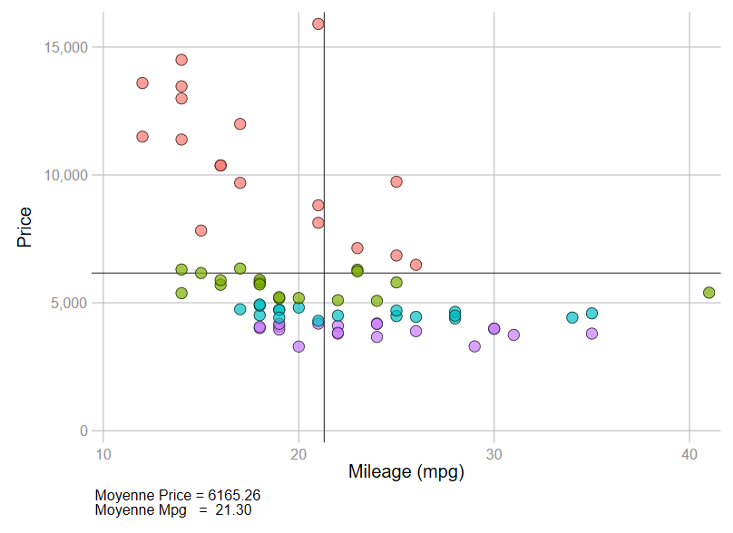
3.1.3 Autres
Token
- Plutôt utilisé dans la programmation de routines (.ado) mais peut s’avérer utile pour transformer les variables du graphique en macro.
- Token est une macro qui prend comme expression des numéros
- On transforme une expression en token avec la commande
tokenize
tokenize price mpg
sum `1' `2'
Variable | Obs Mean Std. Dev. Min Max
-------------+---------------------------------------------------------
price | 74 6165.257 2949.496 3291 15906
mpg | 74 21.2973 5.785503 12 41Ou avec une expression sous forme de macro
local varlist price mpg
tokenize `varlist'
sum `1' `2'
Variable | Obs Mean Std. Dev. Min Max
-------------+---------------------------------------------------------
price | 74 6165.257 2949.496 3291 15906
mpg | 74 21.2973 5.785503 12 41Application pour un graphique
local varlist price mpg foreign
tokenize `varlist'
tw scatter `1' `2' if `3'==0 ||
tw scatter `1' `2' if `3'==1 Compteur i++
- Utile dans les boucles
foreachpour générer un compteur type macro qui fonctionne comme dans une boucleforvalue - Dans une boucle de type
forvaluepermet de générer un compteur dont les valeurs de départ et d’arrivée diffèrent des valeurs de la boucle
- On peut initialiser sa valeur initiale par une macro:
local j=valeur, ou dans une boucleforvalueutiliser directement la macro définie par la bouble. Le comportement de l’incrément ne sera pas le même
local i = 1
forvalue v=10/15 {
di `i++'
}
1
2
3
4
5
6local i = 1
local varlist price mpg turn length
foreach v of local varlist {
di "var`i++' = `v'"
}
var1 = price
var2 = mpg
var3 = turn
var4 = lengthDifférents comportement de l’incrément
forv i=1/5 {
di "iteration `i': i++ =" `i++'
}
iteration 1: i++ =1
iteration 2: i++ =2
iteration 3: i++ =3
iteration 4: i++ =4
iteration 5: i++ =5
forv i=1/5 {
di "iteration `i': i++ =" `i++'
di "iteration `i': i++ =" `i++'
}
iteration 1: i++ =1
iteration 2: i++ =2
iteration 2: i++ =2
iteration 3: i++ =3
iteration 3: i++ =3
iteration 4: i++ =4
iteration 4: i++ =4
iteration 5: i++ =5
iteration 5: i++ =5
iteration 6: i++ =6
local k=1
forv i=1/5 {
di "iteration `i': " `k++'
di "iteration `i': " `k++'
}
iteration 1: 1
iteration 1: 2
iteration 2: 3
iteration 2: 4
iteration 3: 5
iteration 3: 6
iteration 4: 7
iteration 4: 8
iteration 5: 9
iteration 5: 10
local k=1
forv i=1/5 {
local j = `k++'
di "iteration `i': " `j'
di "iteration `i': " `j'
}
iteration 1: 1
iteration 1: 1
iteration 2: 2
iteration 2: 2
iteration 3: 3
iteration 3: 3
iteration 4: 4
iteration 4: 4
iteration 5: 5
iteration 5: 5Si l’incrément est appelé plusieurs fois dans une itération et que sa valeur doit y être fixe, utiliser absolument la dernière expression
**Exemple
Le graphique suivant représente les valeurs moyennes d’une des variables de la base auto par nombre de réparations (rep78)
- Il est fortement inspiré d’un graphique de Cédric Scherer (https://raw.githubusercontent.com/Z3tt/TidyTuesday/master/plots/2019_19/2019_19_StudentTeacher.png)
Les observations sont reportées par un nuage légèrement perturbé avec l’option
jitter(2)La moyenne sur l’ensemble des observations est reporté avec
xlineLes moyennes pour chaque niveau de réparation sont reportées à l’aide de lollipop (voir section visualisation des données avec Stata)
On a utilisé le compteur pour généré le nom des macros qui conservent la valeur des moyennes
On a utiliser les tokens pour le nom des variables:
{kind=link}
recode rep78 (1=2)
graph set window fontface Consolas
tokenize weight rep78 // graph gauche
* tokenize mpg // graph droite
qui sum `1'
local mt `r(mean)'
local i=1
levelsof `2' , local(l)
foreach l2 of local l {
qui sum `1' if rep78==`l2'
local m`i++' `r(mean)'
}
tw ///
|| scatter `2' `1' if `2' ==2, mc("35 81 161%90") msiz(small) mlc("8 29 88*2.3") mlw(vthin) jitter(5) ///
|| scatter `2' `1' if `2' ==3, mc("30 142 190%90") msiz(small) mlc("8 29 88*2.3") mlw(vthin) jitter(5) ///
|| scatter `2' `1' if `2' ==4, mc("83 187 193%90") msiz(small) mlc("8 29 88*2.3") mlw(vthin) jitter(5) ///
|| scatter `2' `1' if `2' ==5, mc("163 218 186%90") msiz(small) mlc("8 29 88*2.3") mlw(vthin) jitter(5) ///
|| pci 2.015 `mt' 2.015 `m1' , lc("211 238 186") lw(thick) ///
|| scatteri 2.015 `m1' , mc("35 81 161") msiz(large) mlc("211 238 186") mlw(thin) ///
|| pci 3 `mt' 3 `m2' , lc("211 238 186") lw(thick) ///
|| scatteri 3 `m2' , mc("30 142 190") msiz(large) mlc("211 238 186") mlw(thin) ///
|| pci 4 `mt' 4 `m3' , lc("211 238 186") lw(thick) ///
|| scatteri 4 `m3' , mc("83 187 193") msiz(large) mlc("211 238 186") mlw(thin) ///
|| pci 4.985 `mt' 4.985 `m4' , lc("211 238 186") lw(thick) ///
|| scatteri 4.985 `m4' , mc("163 218 186") msiz(large) mlc("211 238 186") mlw(thin) ///
|| , xline(`mt', lw(thick) lc("211 238 186") noext) ///
legend(off) ///
xlabel(, glw(vvthin)) ylabel(,glw(vvthin)) ///
xtitle("`var'", color("211 238 186")) ytitle("rep78", color("211 238 186")) ///
title("Averages of `1'", pos(11) color("127 205 180")) ///
plotr(color("8 29 88*2.2")) graphr(color("8 29 88*2.2")) /// Graphique 29
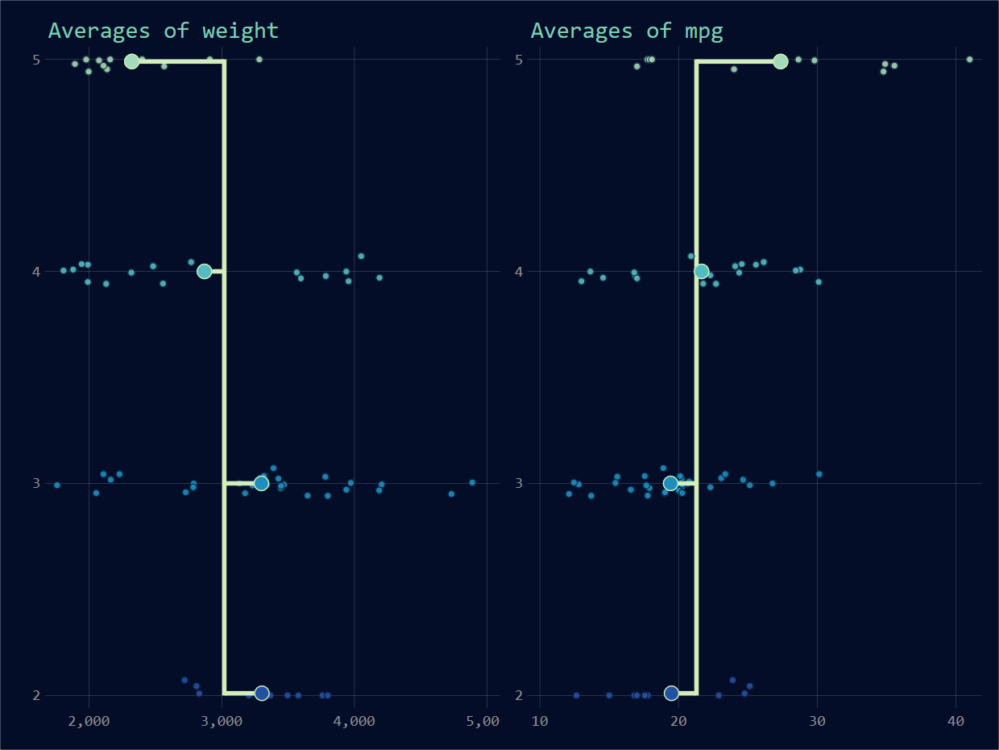
Pour info: autres compteurs
++i
local i=1
forvalue j=1/5 {
di `++i'
}
* Renvoi la liste: 2 3 4 5 6Remarque: pour retrouver les valeurs du compteur i++, il suffit s’initialiser i à 0
i--
local i=10
forvalue j=1/5 {
di `i--'
}
* renvoi la liste: 10 9 8 7 6--i
local i=10
forvalue j=1/5 {
di `--i'
}
* renvoi la liste: 9 8 7 6 5Objet temporaire: tempvar, tempfile, tempname….
- tempvar: très utile.
- Evite de créer des variables qui entre en conflit avec des variables existantes dans la base
- La variable temporaire est conservée en mémoire, mais n’apparait pas dans la base.
- Une nouvelle variable est créée lorsque le programme est exécuté à nouveau
- syntaxe:
tempvar nom_variable - Lecture: Stata va créer une variable dont le nom est **_0000#**
tempvar X
gen `X' = runiform()
sum `X'
-------------+---------------------------------------------------------
__000000 | 74 .4725448 .3017723 .0030522 .9944572sysuse auto, clear
tempvar qprice
local varlist price mpg `qprice'
tokenize `varlist'
xtile `qprice' = `1', n(4)
local i=1
foreach v of loc varlist {
qui sum `v'
local m`i++' : di %6.2f `r(mean)'
}
tw scatter `1' `2' if `3'==1, mlc(black) mlw(vthin) mc(%70) msiz(medlarge) ///
|| scatter `1' `2' if `3'==2, mlc(black) mlw(vthin) mc(%70) msiz(medlarge) ///
|| scatter `1' `2' if `3'==3, mlc(black) mlw(vthin) mc(%70) msiz(medlarge) ///
|| scatter `1' `2' if `3'==4, mlc(black) mlw(vthin) mc(%70) msiz(medlarge) ///
yline(`m1', lw(vthin) lc(black)) xline(`m2', lw(vthin) lc(black)) ///
note("Moyenne `1' = `m1'" ///
"Moyenne `2' = `m2'" ) legend(off)
describe
(_dta has notes)
-----------------------------------------------------------------------------------------------------
storage display value
variable name type format label variable label
-----------------------------------------------------------------------------------------------------
make str18 %-18s Make and Model
price int %8.0gc Price
mpg int %8.0g Mileage (mpg)
rep78 int %8.0g Repair Record 1978
headroom float %6.1f Headroom (in.)
trunk int %8.0g Trunk space (cu. ft.)
weight int %8.0gc Weight (lbs.)
length int %8.0g Length (in.)
turn int %8.0g Turn Circle (ft.)
displacement int %8.0g Displacement (cu. in.)
gear_ratio float %6.2f Gear Ratio
foreign byte %8.0g origin Car type
__000000 byte %8.0g 4 quantiles of price
-----------------------------------------------------------------------------------------------------
sum __000000
variable __000000 not found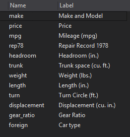
- tempfile: utile seulement si une base doit être générée, pas d’application trouvée pour le document
3.2 Alleger la syntaxe d’un graphique…
… et surtout faciliter les changements d’options
Exemple
Dans le graphique suivant beaucoup d’options sont répétées, au niveau des couleurs en particulier [une couleur est utilisée 7 fois]. Si on veut modifier une option, on devra donc les modifier plusieurs fois
graph set window fontface Magneto
recode rep78 (1=2)
tw scatter price mpg if rep78==2, mc("145 50 5") mlw(vvthin) mlc(black) msiz(medlarge) ///
|| scatter price mpg if rep78==3, mc("221 95 11") mlw(vvthin) mlc(black) msiz(medlarge) ///
|| scatter price mpg if rep78==4, mc("254 162 50") mlw(vvthin) mlc(black) msiz(medlarge) ///
|| scatter price mpg if rep78==5, mc("254 211 112") mlw(vvthin) mlc(black) msiz(medlarge) ///
|| , legend(off) ///
graphr(color("102 37 6*4")) plotr(color("102 37 6*4")) ///
ylabel(, labc("254 211 112") glc("254 211 112") glw(vvthin)) ///
xlabel(, labc("254 211 112") glc("254 211 112") glw(vvthin)) ///
ytitle(, color("254 211 112")) xtitle(, color("254 211 112")) ///
title("Price versus Mpg", color("254 211 112") pos(11)) Je me suis un peu lâcher sur la police (magneto) mais elle est adaptée au thème (cf Pininfarina)
Graphique 30
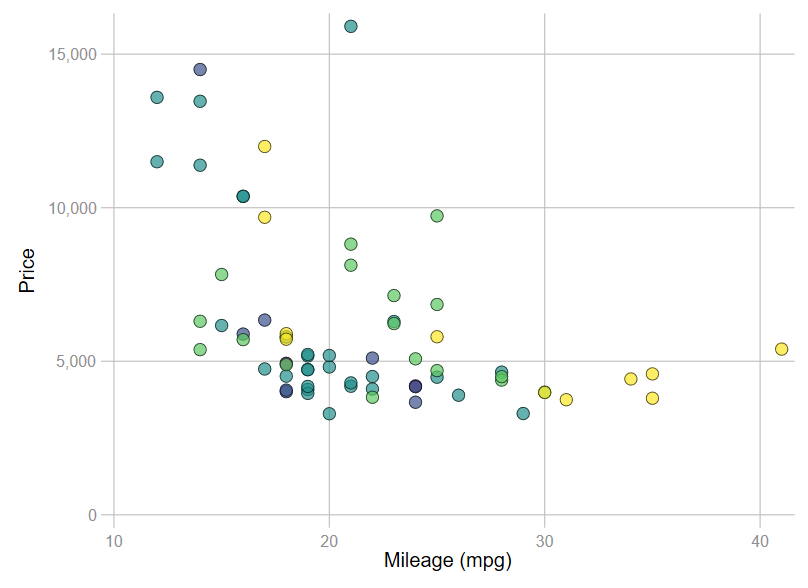
Si on passe toutes les options répétées sous forme de macros (mopt col1 col2):
local mopt mlw(vvthin) mlc(black) msiz(medlarge)
local col1 102 37 6*5
local col2 254 211 112
tw scatter price mpg if rep78==2, mc("145 50 5") `mopt' ///
|| scatter price mpg if rep78==3, mc("221 95 11") `mopt' ///
|| scatter price mpg if rep78==4, mc("254 162 50") `mopt' ///
|| scatter price mpg if rep78==5, mc("254 211 112") `mopt' ///
|| , legend(off) ///
graphr(color("`col1'")) plotr(color("`col1'")) ///
ylabel(, labc("`col2'") glc("`col2'") glw(vvthin)) ///
xlabel(, labc("`col2'") glc("`col2'") glw(vvthin)) ///
ytitle(, color("`col2'")) xtitle(, color("`col2'")) ///
title("Price versus Mpg", color("`col2'") pos(11))Si on veut modifier quelques paramètres des bulles (macro mopt) et la couleur du texte (macro col2) répétées 8 fois:
local mopt mlw(vthin) mlc(white) msiz(medlarge) jitter(2)
local col1 102 37 6*4
local col2 gs14
tw scatter price mpg if rep78==2, mc("145 50 5") `mopt' ///
|| scatter price mpg if rep78==3, mc("221 95 11") `mopt' ///
|| scatter price mpg if rep78==4, mc("254 162 50") `mopt' ///
|| scatter price mpg if rep78==5, mc("254 211 112") `mopt' ///
|| , legend(off) ///
graphr( color("`col1'")) plotr(color("`col1'")) ///
ylabel(, labc("`col2'") glc("`col2'") glw(vvthin)) ///
xlabel(, labc("`col2'") glc("`col2'") glw(vvthin)) ///
ytitle(, color("`col2'")) xtitle(, color("`col2'")) ///
title("Price versus Mpg", color("`col2'") pos(11))Graphique 31
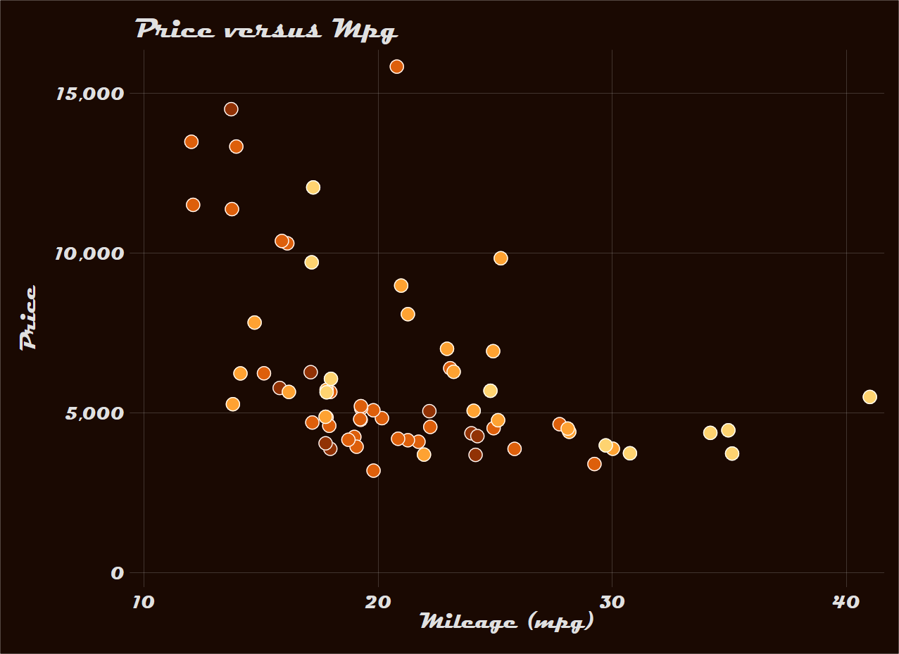
3.3 Macro empilée
3.3.1 Définition d’une macro empilée
- Macro simple
local l objetA objetB objetC
foreach i of local l {
local ms `i'
}
objetA
objetB
objetC
* expression de la macro après l'exécution de la boucle
mac list _ms
objetCMacro empilée
Conserve l’expression de la macro de la boucle précédente
Syntaxe:
local nom_macro `nom_macro` expression_macrolocal l objetA objetB objetC
foreach i of local l {
local ms `ms' `i'
mac list _ms
}
objetA
objetA objetB
objetA objetB objetC
_ms: objetA objetB objetC- Boucle 1: (macro boucle 1)
- Boucle 2: (macro boucle 1) + (macro boucle 2)
- Boucle 3: (macro boucle 1) + (macro boucle 2) + (macro boucle 3)
- etc….
3.3.2 Créer un graphique avec une macro empilée
levelsof rep78, local(l)
foreach i of local l {
local scat `scat' scatter price mpg if rep78==`i' ||
}Lecture dans l’output:
Boucle 1: rep78=(1)
scatter price mpg if rep78==1 ||Boucle 2: rep78=(1,2)
scatter price mpg if rep78==1 || scatter price mpg if rep78==2 ||Boucle 3: rep78=(1,2,3)
scatter price mpg if rep78==1 || scatter price mpg if rep78==2 || scatter price mpg if rep78==3 ||Boucle 4: rep78=(1,2,3,4)
scatter price mpg if rep78==1 || scatter price mpg if rep78==2 || scatter price mpg if rep78==3 ||
scatter price mpg if rep78==4 ||Boucle 5: rep78=(1,2,3,4,5)
scatter price mpg if rep78==1 || scatter price mpg if rep78==2 || scatter price mpg if rep78==3 ||
scatter price mpg if rep78==4 || scatter price mpg if rep78==5 ||On adonc de générer un graphique dans une boucle. Pour l’exécuter:
tw `scat', legend(off)3.3.3 Générer une légende avec une macro élargie
Utiliser la bonne expression pour les macros simple car les doubles quotes doivent être apparentes dans la définition de la légende
Application 1
- on n’utilise pas les fonctions pour générer les labels (cf Application 2)
- On génère également le graphique avec une macro élargie comme ci-dessus.
On génère la légende avec une macro empilée
sysuse auto
local l1 `""Domestic""'
local l2 `""Foreign""'
forvalue i=1(1)2 {
local ord `ord' `i' `l`i''
}
macro list _ord
_ord: 1 "Domestic" 2 "Foreign"On génère les éléments du graphique avec une macro empilée
levelsof foreign, local(l)
local ops mlc(black) mlw(vthin)
foreach i of local l {
local scat `scat' scatter price mpg if foreign==`i', `ops' ||
}
macro list _scat
_scat: scatter price mpg if foreign==0, mlc(black) mlw(vthin) || scatter price mpg if foreign==1, mlc(black) mlw(vthin) ||On génère le graphique avec la légende
tw `scat', legend(order(`ord'))Application 2
- Même graphique mais on va automatiser sa création avec:
- des tokens pour les variables
- les fonctions associées aux macros pour récurérer les labels automatiquement (voir plus haut)
- Fonction
value labelpour récupérer le nom du label - Fonction
labeldans une boucle pour récupérér les libellés
- Fonction
local varlist price weight foreign
tokenize `varlist'
* Légende
local labn: value label `3'
levelsof `3', local(l)
local i=1
foreach l2 of local l {
local lab`l2': label `labn' `l2'
local lab`l2' `""`lab`l2''""'
local ord `ord' `i++' `lab`l2''
}
* Graphique
local ops mlc(black) mlw(vthin)
foreach i of local l {
local scat `scat' scatter `1' `2' if `3'==`i', `ops' ||
}
macro list _scat
tw `scat', legend(order(`ord')) Ci-dessous une transformation très simple en routine, appelée sgraph [syntaxe: sgraph varlist ]
3.4 Routine - Commande
Aide Stata
Manuel Stata programming: https://www.stata.com/manuals/p.pdf#ppProgramming [entrée syntax]
principe des programmes qui exécutent des commande (.ado)
la routine peut être programmée dans le programme principe (.do) ou enregistré comme .ado** dans le répertoire où sont enregistré les commandes externes (répertoire ado). Il est conseillé de les enregistrer dans un sous répertoire appelé personal
Syntaxe:
- Si la routine est programmée dans le .do:
capture program drop nom_routine
program define nom_routine [options]
syntax [arguments]
....programme de la routine...
end- Si la routine est enregistrée, la première ligne n’est pas pas obligatoire
Exemple simple: une soustraction
capture program drop soustraction
program define soustraction
syntax anything
tokenize `anything'
di ""
di as result "Le résultat de ma soustraction est: " `1' - `2'
end
soustraction 1245 722
523Exemple “simple” pour un graphique
- On reprend le programme précédent (macro élargie et légendes), avec quelques options modifiées (une ligne pour la légende, perturvation des coordonnées (
jitter(#)), couleur de la bulle) - On fixe les arguments de la commande:
varlist(min=3 max=3)
capture program drop sgraph
program define sgraph
syntax varlist(min=3 max=3), [title(string)] [palette(string)] [gops(string)]
* installation de colorpalette et grstyle si nécessaire (rarement fait dans les ado externe => installation automatique des dépendances)
local packg colorpalette grstyle
foreach p of local packg {
capture which `p'
if _rc==111 ssc install `p'
}
tokenize `varlist'
* légendes
qui levelsof region2, local(l)
local n: word count(`l')
local i=1
local labn: value label `3'
foreach l2 of local l {
local lab`l2': label `labn' `l2'
local lab`l2' `""`lab`l2''""'
local ord `ord' `i++' `lab`l2''
}
grstyle init
grstyle set mesh, compact
* Option palette
if "`palette'"=="" {
colorpalette viridis, n(`n') opacity(70) nograph
}
if "`palette'"!="" {
colorpalette `palette', n(`n') opacity(70) nograph
}
forv i=1/`n' {
local ops mlc(black) mlw(vthin) jitter(3) mc(%80) msiz(medsmall) mlc(`mlc') mc("`r(p`i')'")
local scat `scat' scatter `1' `2' if `3'==`i', `ops' ||
}
* Graphique selon modification ou non des options générales
if "`gops'"==""{
tw `scat', legend(order(`ord') rows(1) pos(7)) title("`title'", pos(11))
}
if "`gops'"!=""{
tw `scat', legend(order(`ord') rows(1) pos(7)) title("`title'", pos(11)) `gops'
}
endOn exécute la commande sgraph
sysuse auto, clear
sgraph price mpg foreignExemple
sysuse citytemp4.dta, clear
replace tempjan = (tempjan - 32 )*5/9
replace tempjuly = (tempjuly - 32 )*5/9
gen region2 = region
recode region2 (1=4) (4=1)
label define r 1 "West" 2 "North-Central" 3 "South" 4 "North-East", modify
label value region2 r
sgraph tempjuly tempjan region2, mlc(black) title("Températures moyennes [sans l'option palette()]") ///
gops(ytitle("Juillet") xtitle("Janvier"))
sgraph tempjuly tempjan region2, mlc(black) title("Températures moyennes [avec l'option palette(magma)]") ///
gops(ytitle("Juillet") xtitle("Janvier"))Graphique 32
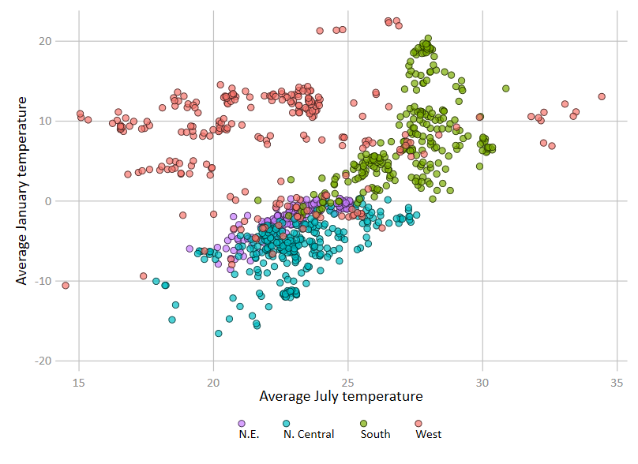
4 Palettes de couleurs & thèmes
- Les graphiques lorsqu’ils sont générés appliquent un thème/style par défaut:
- Ces thèmes sont appelés scheme
- Les options entrées dans la commande graphique visent à modifier les paramètres du thème
- Les paramètres du style thèmes appliquées aux couleurs, tailles/épaisseurs, positions des éléments de texte, définitions des axes….
- Stata dispose de 5 thèmes officiels
- Des thèmes externes peuvent être installés
- Les thèmes graphiques utilisent des palettes de couleurs
- Trois types de palettes:
- Palettes qualitatives (variables non ordonnées)
- Palettes séquentielles (variables ordonnées)
- Palettes divergentes (variables ordonnées dans plusieurs sens)
- Trois types de palettes:
- Des commandes externes permettent d’augmenter le nombre de palettes, de les modifier ou d’en créer
- Pour la cartographie, la commande
spmap(Pisatti) intégre une quarantaine de palettes, principalement séquentielles - La librairie
brewscheme(W.Buchanan) dispose de plusieurs commande pour générer des palettes de couleurs. - La commande
colorpalette(B.Jann) charge plusieurs dizaine de palettes de couleurs, de tout type, et permet de les modifier et permet de les utiliser très facilement dans la création de graphique. Adopté!
- Pour la cartographie, la commande
4.1 Les Palettes de couleurs Stata
4.1.1 Les palettes Stata
Stata dispose de 5 palettes de couleurs qui sont associées à des thèmes graphiques: la palette s2 est associée au thème s2color par exemple
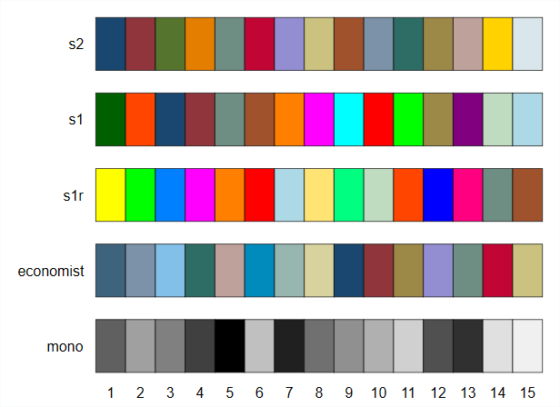
- Les palettes sont de type qualitative
- Remarque On peut les utiliser de manière séquentielle en sélectionnant une couleur et en baissant ou en augmentant l’intensité
(couleur*#) - la palette mono peut(être partiellement utilisée de manière séquentielle: ordre des couleurs 7 à 11 par exemple)
- Remarque On peut les utiliser de manière séquentielle en sélectionnant une couleur et en baissant ou en augmentant l’intensité
- Elles sont composées de 15 couleurs
- Toutes les couleurs ont un nom et un code RGB qui lui est associé
- Dans un graphique, les couleurs utilisées par défaut suivent leur ordre dans la palette
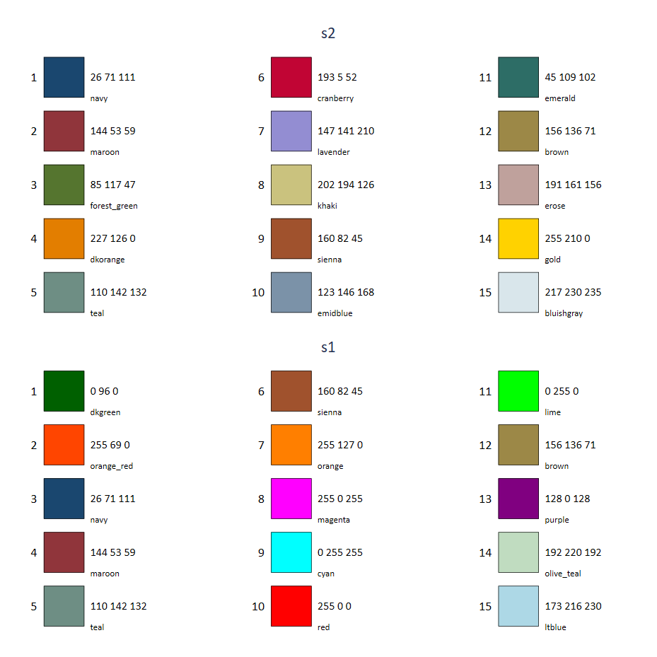
La palette mono (black + grey scale) est d’une grande utilité pour modifier les couleurs des objets types textes, fond, grid….
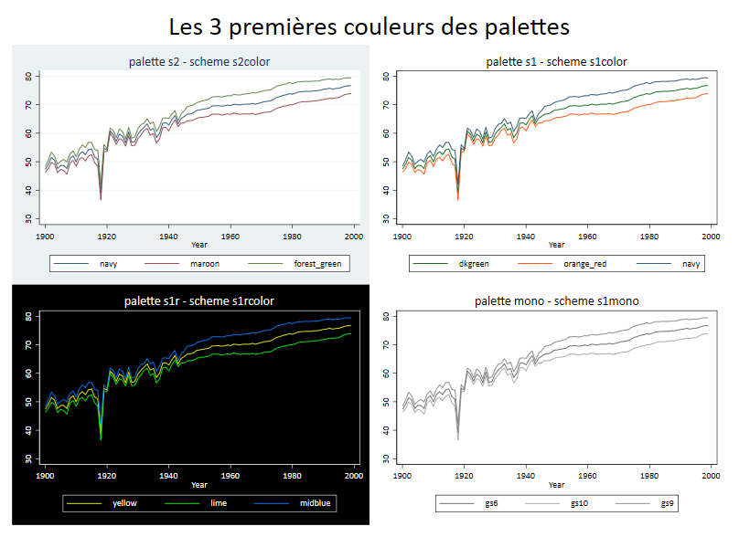
Graphiques 34
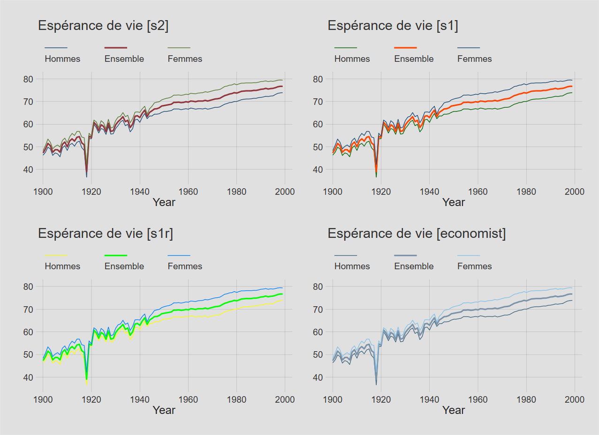
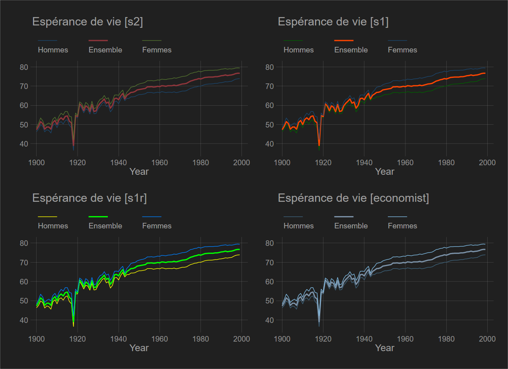
Pour tester les couleurs selon le fond:PROGRAMME
mac drop comb
colorpalette s2, n(15) gropts(graphr(color(black)) plotr(color(black)) ///
title("", color(white)) name(g1,replace) nodraw nonumbers)
forvalue i=2/15 {
local j= 17 - `i'
colorpalette s2, n(15) gropts(graphr(color(gs`i')) plotr(color(gs`i')) ///
title("", color(gs`j')) name(g`i',replace) nodraw nonumbers)
global comb $comb g`i'
}
graph combine g1 $comb , col(3) xsize(20) ysize(10) iscale(.2) title("S2", pos(11) color(gs3))On est clairement vite limité par l’utilisation des palettes maison de Stata
A mon sens, la commande colorpalette de Ben Jann permet de démultiplier les possibilités dans l’utilisation des couleurs avec Stata. C’est aucun doute la plus grande contribution des 10 dernières années niveau graphique avec le logiciel.
4.2 Colorpalette de Ben Jann
4.2.1 Syntaxe et options
Installation `colorpalette
ssc install palettes, replace
ssc install colrspace, replacesyntaxe: colorpalette nom_palette [, nom_sous_palette options]
Exemple
* Charge et affiche la palette hue
colorpalette hue
* Charge et affiche la palette viridis
colorpalette viridis
* Charge et affiche la palette summer de la collection matplotlib (palette Python)
colorpalette matplotlib, summer Visualiser des palettes disponibles dans l’aide: help colorpalette
Principales options
- Modifier la taille de la palette:
n(#)- Important car la réduction de la taille pour certaines palette ne consiste pas à prendre les # premiers éléments de la palette par défaut (cf palette hue ou viridis)
- Modifier l’intensité et l’opacité:
intensity(#)etopacity(#)- On peut créer une palette avec séquentielle à partir d’une couleur de départ avec
intensity - On peut créer une palette divergente avec des couleurs de départ, d’arrivée et de transition avec
ipolate(#)
- On peut créer une palette avec séquentielle à partir d’une couleur de départ avec
- Sélectionner des couleurs d’une palette:
select(numlist) - Inverser les couleurs de la palette:
reverse - Ne pas afficher la palette:
nograph. à utiliser systématiquement pour charger la palette avant son utilisation dans un graphique
Exemple 1:
colorpalette viridis, n(5) intensity(.4 1 .4 1 .4) reverse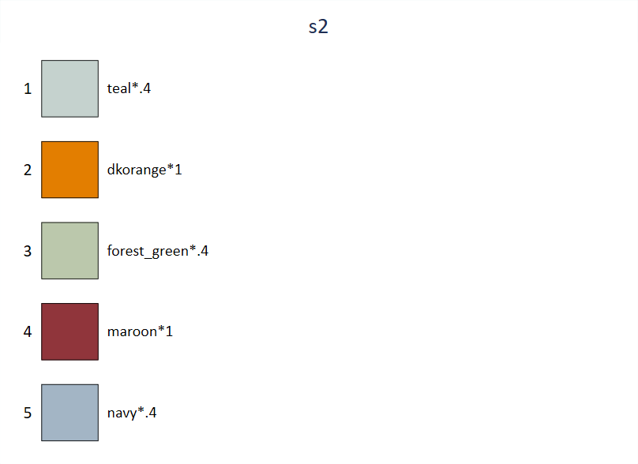
- On a sélectionné la palette viridis
- On a réduit la taille de la palette à 5 couleurs:
n(5) - On a alterné les intensités: une sur deux à .5:
intensity(.4 1 .4 1 .4) - On a inverse l’ordre des couleurs (navy en dernier)
reverse
Exemple 2
Création d’une palette séquentielle de 10 couleurs avec intensity à partir de la première couleur de la palette viridis (rgb=“68 1 84”)
colorpalette "68 1 84", intensity(0.1(.1)1)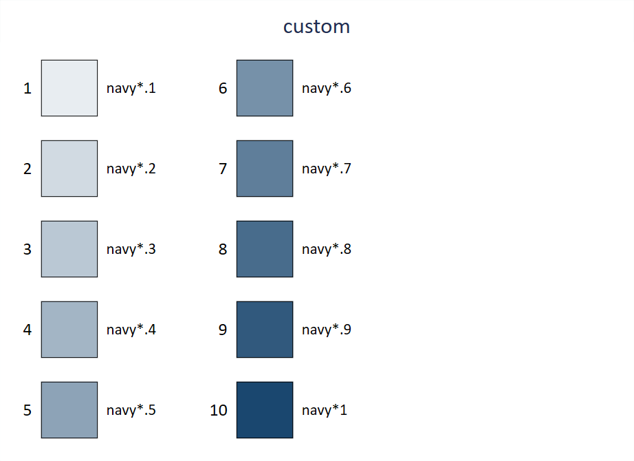
Exemple3
Création d’une palette divergente avec ipolate avec la troisième et la treizième couleurs de la palette viridis en couleurs de départ et d’arrivée
3b: sans couleur intermédiaire
colorpalette "70 50 127" "159 218 58, ipolate(10)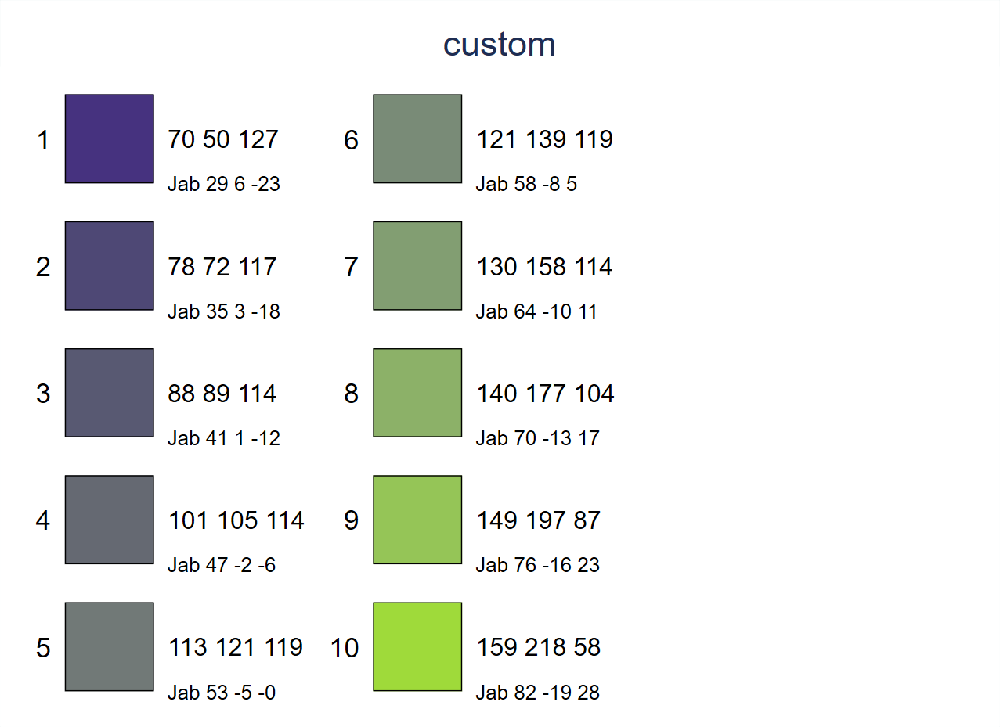
Mêmes couleurs de départ et d’arrivée, avec la huitième couleur de la palette viridis en transition
colorpalette "70 50 127" "33 144 140" "159 218 58" , ipolate(10)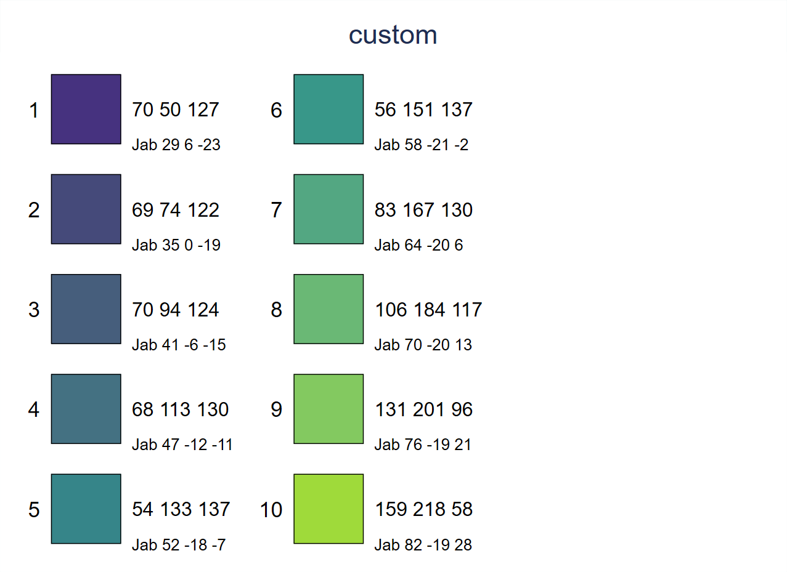
Idem, mais avec la couleur blanche en transition
colorpalette "70 50 127" white "159 218 58" , ipolate(10)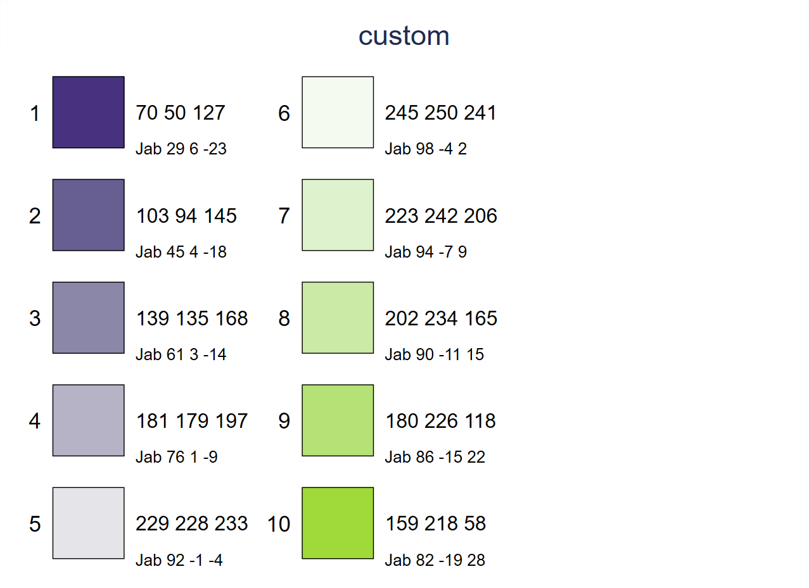
4.2.2 Utilisation pour un graphique
4.2.3 colorpalette et graphique
- Utilisation des macros générées par colorpalette
- la commande génère une liste de macro permettant de récupérer les codes et les noms des couleurs
- la macro r(p) permet d’utiliser les couleurs de la palette dans un graphique à un seul bloc d’élements
- les macros r(p#) permettent d’utiliser les couleurs dans un graphique composé de plusieurs élements
- la commande génère une liste de macro permettant de récupérer les codes et les noms des couleurs
colorpalette navy cranberry, ipolate(5)
return list
scalars:
r(n) = 5
macros:
r(ptype) : "color"
r(pname) : "custom"
r(pnote) : "interpolated"
r(p) : ""26 71 111" "76 73 96" "111 71 92" "151 58 78" "193 5 52""
r(p5info) : "Jab 46 36 12"
r(p5) : "193 5 52"
r(p4info) : "Jab 42 25 5"
r(p4) : "151 58 78"
r(p3info) : "Jab 38 14 -3"
r(p3) : "111 71 92"
r(p2info) : "Jab 34 2 -11"
r(p2) : "76 73 96"
r(p1info) : "Jab 30 -9 -19"
r(p1) : "26 71 111"Exemple
sysuse uslifeexp.dta, clear
local opw lw(medthick medthick medthick medthick medthick)
colorpalette "70 50 127", n(4) intensity(1(.25).25) nograph
local opc lc(`r(p)')
tw line le_w le_wmale le_b le_bmale year, `opw' `opc' ///
legend(order(1 "White" 2 "White man" 3 "Black" 4 "Black man") pos(11) ring(0) row(1) color(gs10)) ///
xlabel(, glw(vvthin)) ylabel(, glw(vvthin)) graphr(color(gs2)) plotr(color(gs2)) ///
xtitle(, color(gs10)) ///
title("{bf:Espérance de vie}", pos(11) color(`r(p3)')) ///
subtitle("{it: Couleurs générées avec colorpalette}", pos(11) color(`r(p2)')) Graphique 35
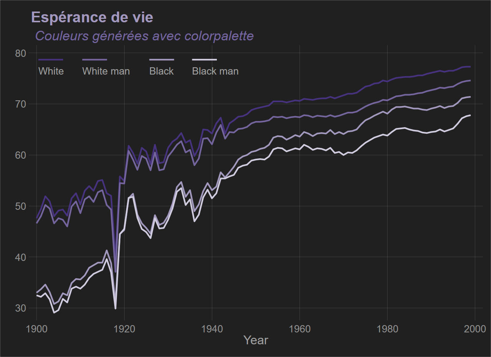
- La syntaxe de colorpalette est transposable à la commande grstyle. Cela faciletera l’intégration des couleurs dans le graphique.
4.2.4 Exemples de palettes
4.2.4.1 Qualitatives
Palette HUE
- Il s’agit de la palette par défaut de ggplot2 (R)
- De plus en plus remplacée par la palette Viridis (voir plus bas)
colorpalette hue [,options]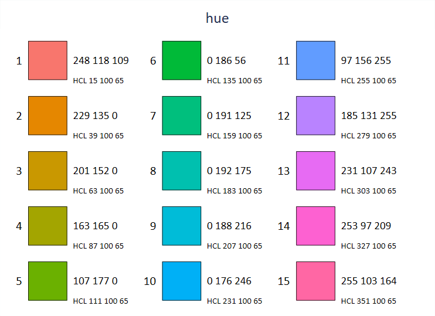
Elle a plusieurs cycles de couleurs: Un “rouge” => un “vert => un”bleu" => un rose
Si on utilise donc cette palette à 10 couleurs pour un graphique composée de deux éléments, par exemple deux courbes, le rendu ne sera pas satisfaisant car les deux premières couleurs seront sélectionnées (une couleur plutôt “rouge” et une couleur plutôt"orange. Il convient dont de réduire la taille de la palette (
n2)Couleurs selon la taille de la palette
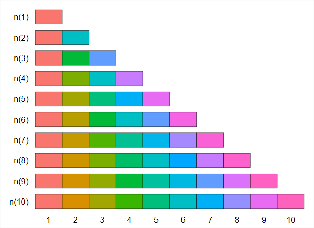
Exemple 1
Graphique 36

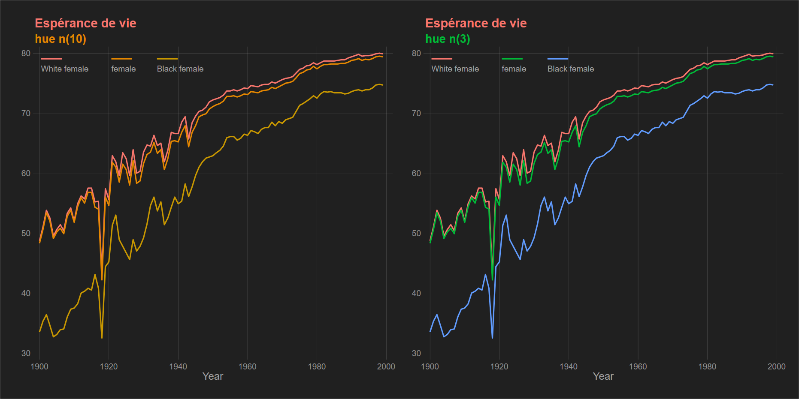
Remarque: voir également la palette du thème externe plottig
Les palettes qualitatives de Colorbrewers
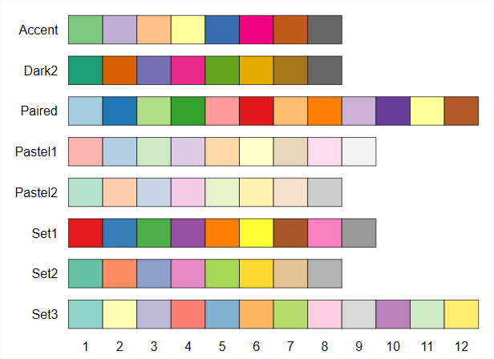
Exemple
Graphiques 37
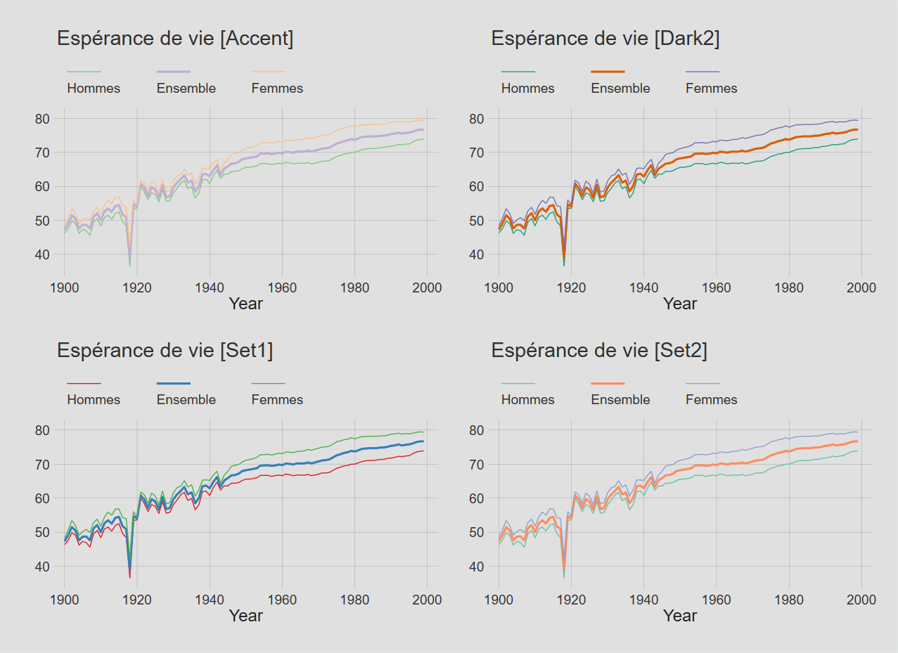
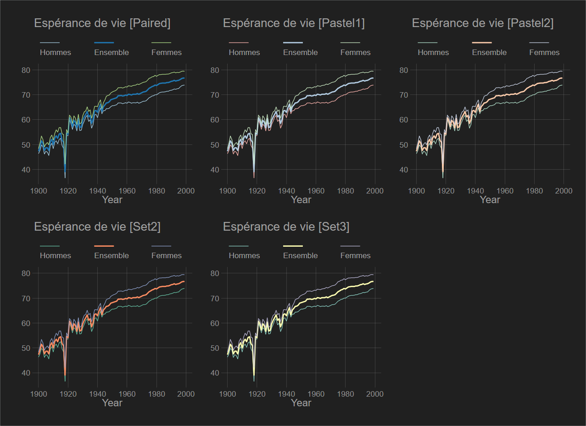
Palette séquentielle à taille réduite: viridis
En réduisant la taille de certaines palettes séquentielles ou divergentes, on peut obtenir une palette plutôt qualitative. C’est le cas de la palette star viridis
colorpalette viridis, n(3)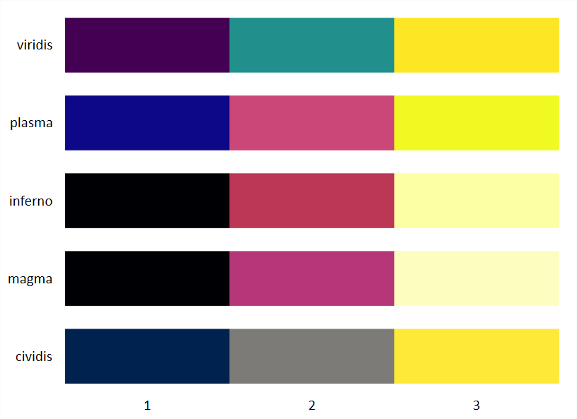
4.2.4.2 Séquentielles
- Utilisées massivement en cartographie et, plus généralement pour représenter des fréquences (graphique type barre) ou des valeurs ordonnées
- Couleurs allant du plus clair au plus foncé (ou inversement)
- Modification de l’intensité d’une couleur
- Un ou plusieurs cycles de couleurs: par exemples du jaune au rouge, du jaune au noire…..
- Pour les courbes, voire les barres, prévoir un fond noir ou gris foncé [exemples ci-dessous]
COLORBREWER
- Collection populaire en cartographie
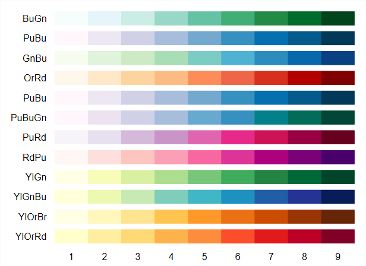
Exemple
Graphiques 40
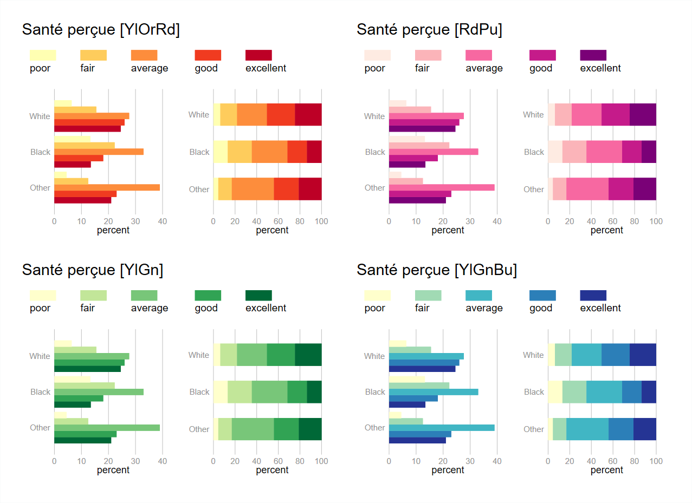
MATPLOTLIB
- Palettes du même nom que la librairie graphique de Python
- Implémenté dans de nombreux logiciels
- De plus en plus remplacée par la collection Viridis
Exemple: les 4 saisons
Graphiques 41
VIRIDIS
- La palette Viridis et les 4 palettes associées, est la palette star du moment
- Développée pour Python pour données une palette alternative à Matplotlib, elle est devenu la palette par défaut de la librairie graphique
- Avantages:
- Même rendu, ou très proche, des couleurs sur toutes les parties d’un écran (uniformité)
- Différences de couleurs maintenue à l’impression n&b
- Gère la plupart des formes de daltonisme
- Elle est franchement belle
- Limites: pour les courbes un fond blanc ou très clair ou un fond noir ou très foncé, les couleurs aux extrêmités ne passent pas très bien pour les courbes. Prévoir un fond gris moyen ou ne pas sélectionner les couleurs aux extremités de la palette (voir exemple ci-dessous)
- Les autres palettes: plasma est également très utilisée, en particulier pour le remplissage de surface

Exemple
Graphique 42
Les deux solutions précédentes ne sont pas satisfaisantes: en inversant le sens de la palette et en sélectionnant une taille à 4 objets pour éliminer le violet foncé avec colorpalette viridis, n(4) reverse nograph, les trois courbes sont bien identifiables
Comparaison Viridis et Matplotlib Jet
Source: https://rtask.thinkr.fr/fr/ggplot2-welcome-viridis/
Matplotlib Jet

Viridis

Il y a photo ou pas pas photo?
4.2.4.3 Palettes divergentes
- Un peu le même principe que les palettes séquentielles, en mettant en avant un point central (de transition) représenté par une couleur de transition, souvent très clair. Typiquement:
- Du bleu (negatif/faible/inférieur à la moyenne…) - vers le blanc (nul/moyen/proche moyenne) - vers le rouge (positif/élevé/supérieur à la moyenne…) avec une partie séquentielle du bleu vers le blanc, et une autre du blanc vers le rouge.
- Pour certains type de graphique, lorsque la couleur centrale est proche du blanc, la couleur de fond du graphique doit être prise en considération
[ Pour les exemples je partirais bien sur une carto (spmap): mais help pour les données]
Colorbrewer
4.3 Styles - scheme
4.4 Principes - thèmes internes et externe
- Tous les graphiques ont un thème, appelé scheme qui paramètre tous les éléments composant graphiques: palette de couleurs, épaisseurs/tailles, positions, contour, marges….
- Les options entrées dans le graphique visent à modifier ce paramétrage
- Stata dispose de 11 thèmes internes, celui utilisé par défaut est s2color (factory scheme)
- Sans modifier des options, un thème graphique peut ne pas être adapté à une représentation graphique
Changer de thème
- Par les boîtes de dialogue: Edit => Préférences => Graph preferences
- Ligne de commande
- On peut indique le thème en option du graphique le thème à appliquer:
scheme(nom_scheme) - On peut dans un fichier .do ou .ado charger un thème de façon temporaire (session) ou permanente un thème: `set scheme nom_scheme [,permanently]
- Le choix du thème peut-être également intégré au fichier profile (charge le thème au début de chaque programme)
- On peut indique le thème en option du graphique le thème à appliquer:
Thèmes internes
A partir d’un exemple donné dans l’aide Stata pour un graphique type spike (help spike)
PROGRAMME
sysuse sp500, clear
local scheme s2color s2mono s2gcolor s2manual s2gmanual s1rcolor s1color ///
s1mono s1manual economist sj
foreach s of local scheme {
twoway line close date, yaxis(1) ///
|| spike change date, yaxis(2) ///
||, ysca(axis(1) r(700 1400)) ylab(1000(100)1400, axis(1)) ///
ysca(axis(2) r(-50 300)) ylab(-50 0 50, axis(2)) ///
ytick(-50(25)50, axis(2) grid) ///
legend(off) ///
xtitle("Date") ///
title("S&P 500") ///
subtitle("Scheme = `s'") ///
yline(950, axis(1) lc(black)) scheme(`s') name(`s', replace) nodraw
* graph combine ......
}Graphique 43
Graphique 44
Thèmes externes
- Plusieurs thèmes et collection de thèmes externe sont instalables:
search schemessc instal nom scheme - Exemples: La collection de François Briatte (Burd) et la collection de Daniel Bischoff (plottig, plotplainblind…)…
Graphique 45
4.5 grstyle
- Auteur: Ben Jann
- Autre générateur de thèmes: brewscheme de W.Buchanan, mais à mon sens beaucoup plus complexe
- Ici utilisation minimale, par l’exemple de grstyle avec
grstyle setavec seulement 4-5 lignes de paramètres réutilisables et facilement modificable avec seulementgrstyle set. - Il est possible de générer un thème complet pour tous les types de graphiques
- Pour voir l’ensemble des possibilités :
help grstylehelp grstyle set
Installation grstyle
ssc install grstyle4.6 Initialisation et enregistrement
- Dans un programme on initialise le générateur avec
grstyle init - Enregistrement du thème:
grstyle init nom_thème, [path] [replace] - Si le thème a été enregistré, on peut le charger dans un graphique avec scheme(nom_scheme). Visiblement on ne peut pas le charger à l’extérieur du graphique avec
set scheme
set scheme t1, path(D:\stata_temp) replace
[grstyle set ....]
tw line y x, scheme(t1)4.7 Exemple 1
Graphique proposé dans l’aide de line, légèrement simplifié
Avec le thème Stata s2color
PROGRAMME
sysuse uslifeexp, clear
gen difference = le_wm - le_bm
*[graphique]
tw line le_wm year, yaxis(1 2) ///
|| line le_bm year ///
|| line diff year ///
|| lfit diff year, ///
ylabel(0(5)20, axis(2) gmin ) ///
ylabel(0 20(10)80, gmax ) ///
ytitle("", axis(2)) ///
ylabel(, axis(2) grid) ///
ytitle("Life expectancy at birth (years)") ///
title("White and black life expectancy") ///
subtitle("USA, 1900-1999") ///
note("Source: National Vital Statistics, Vol 50, No. 6" ///
"(1918 dip caused by 1918 Influenza Pandemic)") ///
legend(label(1 "White males") label(2 "Black males")) Graphique 46
- Background du graphique, grid…
- grstyle set plain [options]
- grstyle set [i]mesh [options]
grstyle init
* grstyle set plain, horizontal grid // option dotted pour des pointillés sur le grid
* grstyle set mesh, horizontal compact
* grstyle set imesh, horizontal compact minorGraphique 47

Pour la suite, on conservera comme paramètres la deuxième ligne: grstyle set mesh, horizontal compact
- Légende: position et box
grstyle init
grstyle set mesh, horizontal compact
grstyle set legend 2, noboxGraphique 48
Autres paramètres généraux: taille du graphique
grstyle set graphsizeet margesgrstyle set marginsParamètres sur les objets graphiques
- Couleurs:
grstyle set color [options] [: type objet]- Plusieurs paramétrages possibles en définissant les objets pour lesquels la palette s’applique
- Même syntaxe que colorpalette, la palette s’applique directement aux objets.
- Les codes couleurs peuvent être directement appliqué au graphique sans utiliser les macros `rp(p#))
grstyle set color viridis, n(5)=colorpalette viridis, n(5)
- Couleurs:
Graphique 49
Comparaisons s2color et mini thème généré par grstyle en 3 lignes
Graphique 50
- Intervalles de confiance: pour appliquer directement aux intervalles de confiance du graphique la couleur et le degré d’intensité : grstyle set ci [couleur], [opacity()].
- Autres styles paramétrables: l’intensité de la couleur (également paramétrable avec les couleurs en général), les tailles et épaisseurs pour les types de graphiques ou les éléments de texte….
4.8 Exemple 2
- Pour un graphique à première vue relativement simple (ici scatter + lfitci) le paramétrage avec grstyle devient assez gourmant et un peu compliqué
- Paramétrer ses options directement par les macros avec une utilisation minimale de grstyle reste donc un méthode pertinente
Graphique 51
Avec s2color
sysuse auto, clear
set scheme s2color
tw lfitci price length if !foreign, ///
|| lfitci price length if foreign, ///
|| scatter price length if !foreign, ///
|| scatter price length if foreign, ///
legend(order(5 "Domestic" 6 "Foreign")) ///
ytitle("price") xtitle("mpg") Avec grstyle seulement
grstyle init
grstyle set mesh, horizontal compact
grstyle set legend 7
grstyle set color plasma, select(4 14) opacity(50) plots(5 6): p#markfill
grstyle set color plasma, select(4 14) plots(1 3): p#lineplot
grstyle set color black, plots(5 6): p#markline
grstyle set linewidth .2pt, plots(5 6): p#mark
grstyle set symbolsize 5pt
grstyle set ci, opacity(20)
tw lfitci price length if foreign ///
|| lfitci price length if !foreign ///
|| scatter price length if foreign, jitter(2) ///
|| scatter price length if !foreign, jitter(2) ///
|| , legend(order(4 "Domestic" 5 "Foreign") region(lw(vvthin))) ytitle("Price") Grstyle + macro
grstyle init
grstyle set mesh, horizontal compact
grstyle set legend 7,
grstyle set ci, opacity(20)
colorpalette plasma, select(4 14) opacity(50) nograph
local osca1 mc("`r(p1)'") mlc(black) mlw(vthin) msiz(5pt)
local osca2 mc("`r(p2)'") mlc(black) mlw(vthin) msiz(5pt)
colorpalette plasma, select(4 14) nograph
tw (lfitci price length if foreign, clc("`r(p1)'")) ///
(lfitci price length if !foreign, clc("`r(p2)'")) ///
(sca price length if foreign, jitter(2) `osca1') ///
(sca price length if !foreign, jitter(2) `osca2'), ///
legend(order(5 "Domestic" 6 "Foreign") region(lw(vvthin)))4.9 Application: Inferno…
… Car oui c’était un peu l’enfer
Objectif: affecter une palette séquentielle à une aire (ici densité), les couleurs changeant pour chaque valeur de (x,y).
Données: Gapminder (à utiliser avec précaution). Les densités des espérances de vie calculées des pays, donc sur un nombre restreint d’observations.
Les estimations ne sont pas pondérées dans le programme principal (possible avec kdensity), ce qui affecte forcément le rendu: mise à jour du 04 septembre: j’ai ajouté une version pondérée du graphique
Une version animée (1950 à 2015) est disponible dans la partie graphiques interactifs et dynamique
Problèmes identifiés rapidement:
Comment appliquer une couleur différénte à chaque valeurs de x (espérance de vie)
- Impossible d’utiliser directement
rarea, une seule couleur peut-être est appliquée à l’aire - Solution : refaire l’aire à partir de droites (spike
tw spike) - Appliquée une palette séquentielle sur chaque ligne du graphique
- Faire concorder la palette à tous les points d’observations (années) qui ne débutent et ne finissent pas sur les mêmes valeurs de x
- Impossible d’utiliser directement
Problèmes rencontrés durant la programmation…et j’ai pas forcément compris pourquoi
- Si on affecte une seule couleur au densités avec
rarea, les graphiques pour les différentes années peuvent être générées directement en translatant les valeurs de Y (offset). Là, ça ne fonctionne visiblement pas avecrspike. Les différents graphiques ont du être combinés, ce qui augmente fortement le temps d’exécution. - La macro empilée pour générer les couleurs de transition ne comporte que des chaines de caractères (code rgb). Le premier code couleur n’a pas de double quotes…. et je ne comprends pas pourquoi.
- Si on affecte une seule couleur au densités avec
Bref, c’est vraiment un peu l’enfer…et j’ai donc tout naturellement appliqué une palette de couleur adaptée: inferno (collection viridis). Je ne conseille donc pas de se lancer sur ce genre graphique avec Stata, à moins de le simplifier en retirant la partie sur les couleurs de transition.
L’idée est de présenter une visualisation différente du “treemap” généré plus haut avec python
Treemap espérance de vie dans le monde en 2007 [cf partie Python]
Graphique
Graphique 52
Programme
- Partie 1: Estimation des densités et récupération des couleurs de transition
use life_exp, clear
keep if inlist(year,1957, 2007)
keep if continent!=""
local l 1957 2007
foreach i of local l {
kdensity lifeexp if year==`i', gen(_x`i' _d`i') nograph bwidth(0) n(300) kernel(gauss)
gen x`i' = round(_x`i' - 28)
}La première partie vise à générer les variables pour le graphique * les coordonnées (x,y) (espérance de vie, densité). On a pris 200 valeurs, pour cacher au maximun l’effet d’escalier * Les variables x1957 et x2007: * Elles vont permettre de générer une palette de couleurs de transition * On a besoin de valeurs entières pour utiliser les macros r(p(#)) de colorpalette * On translate les valeurs pour démarrer la palette avec la macro r(p1)
Variable | Obs Mean Std. Dev. Min Max
-------------+---------------------------------------------------------
x1957 | 200 25.2 13.98923 1 49
x2007 | 200 35.5 13.22059 13 58- La palette de transition à donc une longueur de 58
- En 1957, la première couleur sera donc celle qui correspont à
r(p1), la dernière àr(p49) - En 2007, la première couleur sera donc celle qui correspond à
r(p13), la dernière àr(p58)
- En 1957, la première couleur sera donc celle qui correspont à
Pourquoi autant de couleurs de transition?
Si on prend seulement la couleur de départ (r(p1): rgb=“0 0 4”) et la couleur d’arrivée(r(p58): rgb=“252 255” “165”), la palette finale sur 200 couleurs ne serait plus calée sur la palette inferno [voir plus bas].
- Partie 2: la palette de transition
** 1957 **
levelsof x1957, local(l)
colorpalette plasma, n(58) nograph
foreach l2 of local l {
local c`l2' "`r(p`l2')'"
local coul X `coul' "`c`l2''"
}
local z: subinstr local coul "X" " ", all- Pour récupérer les couleurs de transition, on programme une macro élargie dans une boucle
- Et c’est là qu’un mystère apparait, et c’est également ici qu’on comprend la nécessité de toujours visualiser le contenu de ce genre de macro avec
mac list _nom macro- Pour mettre à la suite les codes couleurs de la matrice de transition, normalement la macro devrait s’écrire:
`local coul coul "`c`l2''"- Sauf que les doubles quotes du premier code couleur ont disparu (13 8 135):
. mac list _coul
_coul: 13 8 135 "26 6 140" "36 6 145" "45 5 148" "53 4 152" "60 4 155" "68 3 158" "75 3 161" "83 2
163" "90 1 165" "97 0 166" "104 0 168" "111 0 168" "117 1 168" "124 2 168" "131 5 167" "137 9
166" "144 13 164" "150 18 161" "156 23 158" "162 28 155" "167 33 151" "173 38 147" "178 43
143" "183 48 139" "188 53 135" "192 58 131" "197 63 126" "201 68 122" "205 73 118" "209 78
114" "213 84 110" "217 89 106" "221 94 102" "224 99 98" "227 104 95" "231 110 91" "234 115
87" "237 121 83" "239 126 79" "242 132 75" "244 138 72" "246 144 68" "248 150 64" "250 156
60" "251 162 56" "252 169 52" "253 176 49" "254 182 45"- Solution:
- Visiblement pour retrouver les premières doubles quotes il faut ajouter une expression au début de la macro, ici la lettre X [solution du désespoir: éessayons ça pour voir ce que ça donne]:
**`local coul X `coul' "`c`l2''"`**mac list _coul
_coul: X X X X X X X X X X X [58 en tout] X X X X X X X X X X X "13 8 135" "26 6 140" "36 6 145" "45 5 148" "53 4 152"
"60 4 155" "68 3 158" "75 3 161" "83 2 163" "90 1 165" "97 0 166" "104 0 168" "111 0 168" "117 1 168"
"124 2 168" "131 5 167" "137 9 166" "144 13 164" "150 18 161" "156 23 158" "162 28 155" "167 33 151"
"173 38 147" "178 43 143" "183 48 139" "188 53 135" "192 58 131" "197 63 126" "201 68 122" "205 73 118"
"209 78 114" "213 84 110" "217 89 106" "221 94 102" "224 99 98" "227 104 95" "231 110 91" "234 115 87"
"237 121 83" "239 126 79" "242 132 75" "244 138 72" "246 144 68" "248 150 64" "250 156 60" "251 162 56"
"252 169 52" "253 176 49" "254 182 45"- Les double quotes sont bien affiché pour le premier code couleur “13 8 135”
- Il ne reste plus qu’à se débarasser des X qui ont été générés avec la fonction
subinstr.
local z: subinstr local coul "X" " ", all
mac list _z
_z: "13 8 135" "26 6 140" "36 6 145" "45 5 148" "53 4 152" "60 4 155" "68 3 158" "75 3 161" "83
2 163" "90 1 165" "97 0 166" "104 0 168" "111 0 168" "117 1 168" "124 2 168" "131 5 167" "137
9 166" "144 13 164" "150 18 161" "156 23 158" "162 28 155" "167 33 151" "173 38 147" "178 43
143" "183 48 139" "188 53 135" "192 58 131" "197 63 126" "201 68 122" "205 73 118" "209 78
114" "213 84 110" "217 89 106" "221 94 102" "224 99 98" "227 104 95" "231 110 91" "234 115
87" "237 121 83" "239 126 79" "242 132 75" "244 138 72" "246 144 68" "248 150 64" "250 156
60" "251 162 56" "252 169 52" "253 176 49" "254 182 45"Partie 3: le graphique
grstyle init w57, replace
grstyle set legend, nobox stack
grstyle set mesh, horizontal
grstyle set color `z', n(200)
forvalue i=1/200 {
local sp `sp' spike _d1957 _x1957 in `i' if _x1957>30 & _x1957<83, lw(vthick) lc("`r(p`i')'") ||
}
tw `sp' , legend(order(1 "30 ans" 41 "40 ans" 81 "50 ans" 121 "60 ans" 161 "70 ans" 200 "80 ans") pos(2) col(1) ///
xlabel(30 40 50 60 70 80 85) ylabel(0(.02).05, nogrid labc(%0)) ///
xtitle("Espérance de vie") ytitle("") title("1957", pos(11)) scheme(w57) save(w1, replace) ///
** 2007 **
[Idem 2007]: on change la variable de la ligne levelsof... 2007 au lieu de 1957, et l'année dans le titre [peut-être automatisé dans une boucle]
** Graphique combiné
graph combine w2 w1, col(1) xcommon ycommon xsize(20) ysize(10) ///
legendfrom(w1) pos(3) ///
title("Monde", pos(11)) graphr(color(white)) scheme(w07 w57)- Pas de difficulté particulière pour le graphique:
- On utilise la palette de transition pour récupérer 300 couleurs (nombre de coordonnées estimées avec
kdensity)grstyle set color couleurs_de_transition, n(300)
- On génère 300 droites avec
spike, en appliquant la couleur de l’option lc() avec l’expression de la macro r(p#) - Je ne vois pas l’intérêt d’afficher une légende, les couleurs étant directement gradées sur l’axe x.
- Je conseille de sauvegarder le graph en dur. J’ai eu des problèmes de mémoire en répétant l’exécution avec
name()
- On utilise la palette de transition pour récupérer 300 couleurs (nombre de coordonnées estimées avec
- Graphique combiné
- Temps d’exécution forcément très long. J’espère quand même trouver un jour une solution avec
rspikeappliquant un seuil différent à chaque graphique - Au bout de certains
- La combinaison par un logiciel type irfan est également une solution rationnelle
- Temps d’exécution forcément très long. J’espère quand même trouver un jour une solution avec
Version pondérée [taille de la population]
- ajout de l’option
[iw=pop]
Niveau continents
- Faire un
clear sersetrégulièrement, Stata fatigue rapidement - Enregistrer en dur les graphiques individuels avec
saving(), le rendu peut partir un peu en sucette avecname()
Graphique 53
Graphiques sans couleurs de transition
Graphique 54
Plus simple à programmer, car on a besoin seulement d’une couleur de départ et d’une couleur d’arrivée, la seconde partie du programme n’est pas nécessaire
5 Visualisation des données avec Stata
Principe de la section:
- Reprendre les principales représentations graphiques: https://www.data-to-viz.com
- Commande(s) Stata internes ou externes
- Rappel sur des points de vigilance et limites, et lorsque c’est possibles les solutions ou les moyens de les contourner
- Plusieurs exemples programmés avec Stata s’appuient sur les visualisations du site https://www.data-to-viz.com [liens vers code
ggplot2]
Liens sites Stata Stata sheets: https://www.stata.com/links/resources-for-learning-stata/cheat-sheets/StataCheatSheet_visualization_2016_June-REV.pdf
Galerie Sdas [programmes courts]: https://www.surveydesign.com.au/tipsgraphs.html
Galerie Maarten Buis: http://www.maartenbuis.nl/workshops/graphs_in_stata/workshop.html
Site de Demetris Christodoulou [Référence]
https://graphworkflow.com/
- Partie dédiée à la sémiologie graphique
- Galerie de graphiques Stata
- Explication des objectifs
- Justification des choix
- Mise à disposition du programme
5.1 Histogrammes et densités
- Analyse des distributions: une ou plusieurs variables numériques, croisement avec une ou plusieurs variables catégorielles
- Vue de face
- Limite: Nombre d’objets empilés sur un même graphique
- Combinaison possible avec les visualisation vue de dessus (nuages - contourplot - heatplot) pour faire apparaitre les distributions marginales dans le graphique
- Warning pour les histogrammes: la définition des bornes des peut différées d’un logiciel à l’autre, c’est le cas avec R (voir exemple ci-dessous)
Exemple
Données:
- Prix des nuitées des logements proposés par “Airbnb” sur la côte d’Azur
- N=10000
- Exemple avec codes R: https://www.data-to-viz.com/story/OneNum.html
5.1.1 Histogramme
- Commande
histogramsi une variable outw histogramsi plusieurs variables ou croisément dans un même graphique avec une variable catégorielle help histogram. La version tw est plus souple et permet d’orienter l’histogramme horizontalement.
Syntaxe avec 2 variables [graph non reporté]
tw histogram var1, fc(couleur) lc(couleur) || histogram var2 [, fc(couleur) lc(couleur) horizontal...] PROGRAMME
clear
import delimited "https://raw.githubusercontent.com/holtzy/data_to_viz/master/Example_dataset/1_OneNum.csv"
* intervalle=10 => ici intervalles par défaut
sort price
tw histogram price if price<300, freq fc("65 182 196%80") lc("29 145 192") lw(vvthin) ///
title("{bf:Night price distribution of Airbnb appartements}", pos(11)) ///
start(0) width(10) ///
xlabel(0(50)300, glw(vvthin) glc(gs4)) ylabel(0(250)800, glw(vvthin) glc(gs4))Avec ggplot (R)
Graphique 56
La définition des bornes des intervalles n’est donc pas la même: Stata \([lb;ub[\) et R \(]lb;ub]\).
Pour obtenir le même histogramme: gen price2 = price - 1
Graphique 57
5.1.2 Densité
- Commande
kdensity[interne]kdens[externe - Ben Jann] pour tracer une courbe seulement - Pour reporter une aire on génère les coordonnées sous forme de variables avec l’option
gen(x d)et on utilise les graphiques typeareaourarea - options principales
kernel()pour le type de smoothing.bw(#)pour le fenêtrage. Préférerkernel(gauss)pour un bon rendu.n(#)pour le nombre de coordonnées générées.nographpour une densité sous forme d’aire, et gagner du temps d’exécution
PROGRAMME
local o fc("65 182 196%80") lc("29 145 192") lw(vthin)
capt drop d x
kdensity price if price<300, gen(x d) nogr
tw area d x, `o' ytitle("") ///
title("Par défaut", pos(11) size(medium)) name(g1,replace) nodraw
capt drop d x
kdensity price if price<300, gen(x d) nogr kernel(gauss)
tw area d x, `o' ytitle("") ///
title("kernel(gauss)", pos(11) size(medium)) name(g2,replace) nodraw
capt drop d x
kdensity price if price<300, gen(x d) nogr kernel(gauss) n(200)
tw area d x, `o' ytitle("") ///
title("kernel(gauss) + n(200)", pos(11) size(medium)) name(g3,replace) nodraw
capt drop d x
kdensity price if price<300, gen(x d) nogr kernel(gauss) bw(10) n(200)
tw area d x, `o' ytitle("") ///
title("kernel(gauss) + n(200) + bw(10)", pos(11) size(medium)) name(g4,replace) nodraw
graph combine g1 g2 g3 g4Graphique 58
5.2 Boxplot et violin plot
5.2.1 Boxplot
Commande
graph box. La syntaxe peut s’avérer pénible avec, au final, de grosses limitations (voir application plus bas)- Pour changer les options des box [sans l’option
over]:box(1, options) box(2, options)... - Pour changer les options des markers (outliers) [sans l’option
over]:m(1, options) m(2, options)... - Sans l’option
over()impossible de passer le libellé des box sur un axe (obligatoirement une légende) - Avec l’option
over()les optionsbox(#,..)* et *marker(#,...). Aller savoir pourquoi. On peut de nouveau appliquer des couleurs différentes recréant des vartiables avec **separate`**….lourd - Graphique de type oneway, on ne peut pas superposer d’autres information via un autre objet graphique
- Pour changer les options des box [sans l’option
Analyse des distributions: une ou plusieurs variables numériques ou une variable numérique par niveau d’une variable catégorielle
Résume la distribution de la variable numérique: Quartiles (la boite - box) - limites jusqu’à outliers (moustaches - whiskers) - outliers reportés par un nuage (option)
Limites:
- Ne permet pas de visualiser la forme de la distribution (unimodale, multimodale…)
- Ne permet pas de visualiser si les différences d’effectifs
Si deux variables, combinaison possible avec une visualisation vue de haut (nuages - contourplot - heatplot)
Amélioration de la box: retrait au niveau de la valeur médiane pour mieux la faire apparaître (notches): Non implémenté dans Stata
Ajout d’un nuage de point, d’un histogramme ou de spike pour vizualiser les distributions et les tailles des effectifs : Non implémenté dans Stata, mais on peut passer par des graphiques combiné Voir l’exemple ci-dessous
Exemple
- Voir https://www.data-to-viz.com/caveat/boxplot.html
- Données: 4 variables générées aléatoirement
- On utilisera la palette de couleur Spectral (collection colorbrewer)
clear
set obs 1000
gen A = rnormal(10,5)
gen B = rnormal(13,1) in 1/500
replace B = rnormal(18,1) in 501/1000
gen C = rnormal(25,5) in 1/20
gen D = rnormal(12,2) in 1/100
grstyle init
grstyle set mesh, compact
grstyle set legend 6, noboxGraphique 59
PROGRAMME
local varlist A B C D
colorpalette Spectral, n(4) nograph
forvalue i=1/4 {
local box `box' box(`i', fc("`r(p`i')'") lc(black) lw(vthin)) m(`i', mc("`r(p`i')'") mlw(vthin) mlc(black) msiz(vsmall))
}
graph box `varlist' , `box' legend(col(4)) name(g1,replace) - Avantage: résume bien l’information niveau quantiles et présence potentielle d’outliers
- Limite: pas d’information sur la forme des distributions et la taille des effectifs
Box plot + Histogramme
Graphique 60
PROGRAMME
local k=1
* local varlist A B C D
foreach v of local varlist {
colorpalette Spectral, n(4) nograph
local j=`k++'
tw histogram `v', xlabel(0(.05).25,nogrid) ylabel(-10(10)40) xtitle("") ytitle("") ///
horizontal fc("`r(p`j')'") lc("`r(p`j')'") name(`v', replace) nodraw
}
graph combine `varlist', col(4) name(g2,replace) ysize(10) xsize(20)
graph combine g1 g2, col(1) ysize(20) xsize(20)- Avantage: la variable B apparaît bien comme bimodale, la largeur des barres permet de visualiser la taille des effectifs, par exemple faible pour la variable B
- Limite: la commande
histogramne permet pas de mettre l’histogramme à l’horizontal….balot
Box plot + scatter
Graphique 61
PROGRAMME
capt drop y
gen y = runiform(400,600)
local k=1
*local varlist A B C D
foreach v of local varlist {
colorpalette Spectral, n(4) nograph
local j=`k++'
tw scatter `v' y, xlabel(200(200)800) ylabel(-10(10)40) xlabel(,nogrid labc(%0)) ///
xtitle("") ytitle("") jitter(1) ///
mc("`r(p`j')'") mlw(vvthin) msiz(tiny) name(`v'2, replace) nodraw
}
graph combine A2 B2 C2 D2 , col(4) name(g3,replace)
graph combine g1 g3, col(1) ysize(20) xsize(20)- Avantages:
- Idem qu’avac les histogrammes, on peut visualiser la bimodalité de B et les différences d’effectifs
- lecture dans le même sens que les box
- Limites/à prévoir:
- Couleurs vraiment nécessaires???
- Prévoir un nuage sur un sous-échantillon (problème d’overplotting). C’est limite pour les variables A et B
Box plot + spike [variante du nuage]
Graphique 62
PROGRAMME
local k=1
* local varlist A B C D
foreach v of local varlist {
colorpalette Spectral, n(4) nograph intensity(1)
local j=`k++'
spikeplot `v' , horizontal lc("`r(p`j')'") lw(vvthin) ///
xlabel(0 1, labc(%0)) ylabel(-10(10)40) ytitle("") name(`v'3, replace) nodraw
}
graph combine A3 B3 C3 D3 , col(4) name(g4,replace)
graph combine g1 g4, col(1) ysize(20) xsize(20)Avantages et limites identiques que pour le nuage de points
5.2.2 Violin plot
Le graphique de type violon ajoute aux box plot un graphique de type aire représentant la densité d’une variable
- Seulement une commande externe
vioplotde Nick Winter [ssc install vioplot]- On garde la main sur l’estimation de la densité avec les option
bw()kernel()etn() - Les échelles de la densité sont standardisée: affecte le rendu, et donc différence avec des fonctions issues d’autres logiciels. Ce n’est pas forcément une critique, mais il faut le savoir
- On garde la main sur l’estimation de la densité avec les option
- Principe du violon: Densité reportée en mirroir + boxplot
- Si seulement les densités: bean plot
- Combinaison possible avec les visualisation de haut (nuages - contourplot - heatplot) pour faire apparaitre les distributions marginales dans le graphique
- Pas dans la commande
vioplot- Ajout de jitters ou d’un histogramme sur des intervalles très fins pour faire apparaître les sample size. On peut représenter un demi violon d’un côté et un histogramme de l’autre
- Voir le dernier exemple de la section macro pour visualiser une variante, croisant 2 valeurs d’une variable catégorielle (pas possible avec vioplot) sur 2 demi violon
Graphique 63
PROGRAMME
grstyle init v, replace
grstyle set mesh, compact
grstyle set legend 6, nobox
grstyle set color Spectral, n(4)
local k=1
local varlist A B C D
foreach v of local varlist {
**colorpalette Spectral, n(4) nograph
local j=`k++'
tw scatter `v' y, xlabel(200(200)800) ylabel(-10(10)40) xlabel(,nogrid labc(%0)) ///
xtitle("") ytitle("") jitter(1) mc(black) mlw(vvthin) msiz(tiny) ///
name(`v'4, replace) nodraw
}
graph combine A4 B4 C4 D4 , col(4) name(g5,replace)
vioplot A B C D, kernel(gauss) ygap(120) ///
median(m(pipe) msa(90) mc(white) mlw(vvthin)) ///
density(lc(black) lw(vthin)) ///
scheme(v) name(g6,replace)
graph combine g6 g5, col(1)Ici on a ajouté le nuage en couleur noir, bien plus lisible pour les deux variables avec petit nombre d’observations
Application Densités - Box Plot - Violin (bean) plot avec plusieurs variables (17)
Comment représenter un nombre important de densités (ou histogramme) sur un même graphique [densité - box plot - violin plot - ridge line]
Données: Question posée sur un forum de Reddit (N=49): quelle probabilité vous affectez à des expressions telles que “almostnochance” “unlikely” “abouteven” “probably” “almostcertainly”….En tout 17 expressions. La base comporte 17 variables (les expressions) et 46 observations.
Application données par le site data to viz. Code R disponible: https://www.data-to-viz.com/caveat/multi_distribution.html
Préparation des données
PROGRAMME
clear
import delimited "https://raw.githubusercontent.com/zonination/perceptions/master/probly.csv"
set obs `=_N+200'
order almostnochance highlyunlikely chancesareslight improbable ///
littlechance unlikely wedoubt probablynot abouteven betterthaneven ///
likely probable webelieve probably verygoodchance highlylikely almostcertainly
qui ds
local varlist `r(varlist)'
*local varlist almostnochance unlikely abouteven probable almostcertainly
sum `varlist'
/*
Variable | Obs Mean Std. Dev. Min Max
-------------+---------------------------------------------------------
almostnoch~e | 46 5.631522 13.81477 .05 95
highlyunli~y | 46 10.13043 13.523 2 90
chancesare~t | 46 14.08696 8.948808 5 40
improbable | 46 18.02176 14.38436 0 50
littlechance | 46 15.97826 14.32091 2 100
-------------+---------------------------------------------------------
unlikely | 46 19.93478 10.04745 2 36
wedoubt | 46 27.86957 20.17546 1 100
probablynot | 46 29.47609 14.85888 10 100
abouteven | 46 49.56522 1.857743 40 52
betterthan~n | 46 58.39348 11.78821 5 98
-------------+---------------------------------------------------------
likely | 46 72 9.874771 40 90
probable | 46 71.45652 10.24306 50 90
webelieve | 46 68.52174 16.73418 5 100
probably | 46 71.52174 10.97419 45 90
verygoodch~e | 46 79.76087 6.467645 65 91
-------------+---------------------------------------------------------
highlylikely | 46 86.21739 12.87877 15 99
almostcert~y | 46 92.64565 7.103542 60 99
*/Graphique 64
PROGRAMME
qui ds
local varlist `r(varlist)'
local w: word count(`varlist')
grstyle init
grstyle set plain, horizontal grid
grstyle set mesh
grstyle set legend, nobox
grstyle set color viridis, n(`w') opacity(60)
capt drop _x* _d*
local i = 1
foreach v of local varlist {
colorpalette viridis, n(`w') nograph opacity(50)
local j = `i++'
local lab`j': variable label `v'
local leg `leg' `j' "`lab`j''"
local coul`j' ""`r(p`j')'""
qui kdensity `v', generate(_x`j' _d`j') nogr kernel(gauss) n(200)
qui replace _x`j'=100 if _x`j'>100
qui replace _x`j'=0 if _x`j'<0
local area `area' area _d`j' _x`j', xscale(r(0 100)) xlabel(0(10)100) fc(`coul`j'') lc(`coul`j'') ||
}
tw `area', legend(order(`leg') pos(2) col(1)) xtitle("Probabilité assignée") scale(.6)Densité [pas d’échelle commune pour l’axe y]
Graphique 65
PROGRAMME
capt drop _x* _d*
qui ds
local varlist `r(varlist)'
local i = 1
foreach v of local varlist {
colorpalette viridis, n(17) nograph opacity(80)
local j = `i++'
local coul`j' ""`r(p`j')'""
qui kdensity `v', generate(_x`j' _d`j') nogr kernel(gauss) n(200)
qui replace _x`j'=100 if _x`j'>100
qui replace _x`j'=0 if _x`j'<0
tw area _d`j' _x`j', xscale(r(0 100)) xlabel(0(25)100) ytitle("") fc(`coul`j'') lc(`coul`j'') name(g`j', replace) nodraw
local comb `comb' g`j'
}
graph combine `comb' , col(5) title("Probabilité assignée", pos(11)) // xcommon ycommonGraphique 66
Histogramme [échelle commune pour l’axe y]
PROGRAMME
capt drop _x* _d*
qui ds
local varlist `r(varlist)'
local i = 1
foreach v of local varlist {
colorpalette viridis, n(17) nograph opacity(80)
local j = `i++'
local coul`j' ""`r(p`j')'""
tw histogram `v', xscale(r(0 100)) xlabel(0(25)100) ytitle("") fc(`coul`j'') lc(`coul`j'') name(g`j', replace) nodraw
local comb `comb' g`j'
mac drop `comb'
}
graph combine `comb' , col(5) title("Probabilité assignée", pos(11)) ycommonGraphique 67
PROGRAMME
grstyle init
grstyle set legend, nobox
grstyle set mesh, compact
grstyle set color viridis, n(17) opacity(100)
forvalue i=1/17 {
colorpalette viridis, n(17) nograph
local coul`i' ""`r(p`i')'""
local barc `barc' bar(`i', fc(`coul`i'') lc(black) lw(vthin))
local marc `marc' m(`i', mc(`coul`i'') msiz(small) mlc(black) mlw(vthin))
}
graph hbox almostnochance-almostcertainly, legend(pos(2) col(1) size(vsmall)) ///
`barc' `marc' - Maudits graphiques oneway, obligé de passer par une légende
Graphique 68
PROGRAMME
capt drop _x* _d*
capt drop _md*
grstyle init
grstyle set plain
grstyle set legend, nobox
grstyle set mesh
qui ds
local varlist `r(varlist)'
local i = 1
foreach v of local varlist {
colorpalette viridis, n(17) nograph
local j = `i++'
local k = (`j'-1)*.7
local coul`j' ""`r(p`j')'""
local lab`j': variable label `v'
local ylab `ylab' `k' "`lab`j''"
qui kdensity `v', generate(_x`j' _d`j') nogr kernel(gauss) bw(2) n(200)
qui replace _x`j'=100 if _x`j'>100
qui replace _x`j'=0 if _x`j'<0
qui sum _d`j', d
local min`j' `r(min)'
local max`j' `r(max)'
*qui replace _d`j' = _d`j'*(.3/(`max`j''- `min`j''))
qui gen _md`j' = `k' - _d`j'
qui gen _d0`j'= `k'
qui replace _d`j' = _d`j' + `k'
local ops xscale(r(0 100)) fc(`coul`j'') lc(`coul`j'') lw(vvthin)
local rarea `rarea' rarea _d`j' _d0`j' _x`j', `ops' || rarea _md`j' _d0`j' _x`j', `ops' ||
}
tw `rarea', legend(off) xtitle("Probabilités assignées") ///
yscale(r(0 `k')) xtitle("Probabilités assignées") ylabel(`ylab', nogrid angle(0)) title("Violin Plots") Solution 4: Ridge line
- Appelé également Joy plot, en référence à la pochette de album de Joy Division Unkown Pleasure.
- Beaucoup plus difficile, et plus long, à programmer si on veut appliquer proprement la théorie car on ne part pas d’une estimation des densités une à une. Sinon, on peut se contenter les densités du graphique précédent en excluant les densités en mirroir et en reparamétrant l’offset (différence entre les minimums des axes y pour chaque densité)
- Solution dans R [
ggridges] et Python. A programmer avec Stata
5.3 Nuages (scatter) et Densités 2d
- Représentation des distributions vues du dessus. La commande Stata est scatter [scatteri si on applique directement des coordonnées]
- On peut ajouter dans un graphique combiné les représentations précédentes pour visualiser simultanément les distributions marginales
- Le principal point de vigilance sur ce type de graphique est l’overplotting qui peut rendre le graphique difficile à lire: Solutions: ajouter des contours, réduire la taille des bulles, sélectionner un sous-échantillon, estimer et représenter les densités croisées
- Densités croisées: plus il y a de bulles dans une zône, plus la densité est élevée.
- Représentation empruntée à la topologie: des courbes de niveau. Plus la densité s’élève, plus l’écart entre deux courbes se ressère
- Commande contourline et contourline après avoir estimé les densités avec la commande externe kdens2 [Christopher J Baum]
- Histrogrammes vue de haut. On applique une palette de couleur séquentielle à la surface supérieure de l’histogramme
- Commandes externe heatplot et hexplot [Ben Jann] => solution la plus simple et rendu efficace avec hexplot
- Représentation empruntée à la topologie: des courbes de niveau. Plus la densité s’élève, plus l’écart entre deux courbes se ressère
5.3.1 Scatter
Au moins deux variables continues Croisement avec variables catégorielles
- Distribution croisée vue du haut de deux variables. Avec une variable catégorielles, les différentes valeurs sont identifiées par des couleurs différentes
- Limite: overplotting
- Combinaison possible avec les histogrammes, densités, boxplot et violin plot pour visualiser les distributions marginales des deux variables
- Extension: bubble plot avec un poids pour chaque coordonnées
Exemple
- Données sur les prix de vente des appartements à New-York selon la surface d’habitation ()
- N = 1460
- Variables grlivarea (surface d’habitation) et saleprice (prix)
- Source: https://www.data-to-viz.com/story/TwoNum.html
clear
import delimited "https://raw.githubusercontent.com/holtzy/data_to_viz/master/Example_dataset/2_TwoNum.csv"- Overplotting manifeste, graphique peu lisible
Graphique 69
PROGRAMME
local ylab 200000 "20K" 400000 "40k" 600000 "60k" 800000 "80k", angle(0)
tw scatter saleprice grlivarea, mc("65 182 196") ylabel(`ylab') - Réduction/suppression de l’overplotting
- Contour
- Taille des bulles
- Sous-échantilllon
Graphique 70
PROGRAMME
tw scatter saleprice grlivarea, mc("`c'") ylabel(`ylab')
local ylab 200000 "20K" 400000 "40k" 600000 "60k" 800000 "80k", angle(0)
local c "65 182 196"
*contour
tw scatter saleprice grlivarea, mc("`c'") mlc(black) mlw(vvthin) ylabel(`ylab') ///
title("contour noir vvthin", pos(1)) name(g1,replace)
tw scatter saleprice grlivarea, mc("`c'") mlc(white) mlw(vvthin) ylabel(`ylab') ///
title("contour blanc vvthin", pos(1)) name(g2,replace)
*taille
tw scatter saleprice grlivarea, mc("`c'") msiz(tiny) mlc("`c'") mlw(vvthin) ///
ylabel(`ylab') title("size tiny + contour couleur ", pos(1)) name(g3,replace)
tw scatter saleprice grlivarea, mc("`c'") msiz(vtiny) ///
ylabel(`ylab') title("size vtiny", pos(1)) name(g4,replace)
*sample
capt gen u=runiform()
tw scatter saleprice grlivarea if u<.2, mc("`c'") mlc(black) mlw(vvthin) ///
ylabel(`ylab') xlabel(0(2000)6000) title("Sample 1: 20%", pos(1)) name(g5,replace)
tw scatter saleprice grlivarea if u<.1, mc("`c'") mlc(black) mlw(vvthin) ///
ylabel(`ylab') xlabel(0(2000)6000) title("Sample 2: 10%", pos(1)) name(g6,replace)5.3.2 Densités 2d
- On reporte la densité croisée des deux variables
- Résoud le problème de l’overplotting
- Coutour plot:
- Si seulement les lignes sont reportées: principe des courbes de niveau, plus les courbes se resserrent et plus la densité augmente
- On peut afecter une palette de couleur aux surfaces entre les lignes
- Heatplot: principe d’un histogramme vu du dessus, avec une palette de couleurs séquentielle associée à la valeur de la densité. La surface est souvent représenté sous forme d’héxagone
Contourline et contour
- On estime les densités avec la commande externe
kdens2[scc install kdens2] - Un représentation graphique est directement possible avec la commande (idem
kdensity), cependant je vais générer les variables dans une nouvelle base - contour et contourline
contourline: seulement les courbes de niveau sont reportéescontour: une palette de couleurs, plutôt séquentielle, est affectée entre les courbes de niveau
- Le nombre de courbes de niveau est généré avec l’option n(#). Ne pas en abuser avec
contourpour eviter les effets de flou - Options pour générer une palette de couleur:
scolor()[start color] etecolor[exit color],cc()[les n couleurs]. la palette générée par grstyle ou colorpalette est utilisable avec les macror(p(1))(start color),r(p(#))(exit color) our(p)pour la totalité de la palette avec l’optioncc() - Option pour les légendes:
clengend()pourcontoulineetplegend()pourcontour
Exemple
On reprend les données sur le prix de vente des appartements à New-York selon la surface d’habitation
ContourlineGraphique 71
PROGRAMME
* estimation de la densité
kdens2 grlivarea saleprice, saving(k2d, replace) n(100) nodraw
use k2d, clear
* couleur par défaut
tw contourline d _saleprice _grlivarea, lw(vthin) plegend(off) levels(15) ///
xlabel(,glw(vvthin) glc(gs4)) ylabel(,glw(vvthin) glc(gs4)) ///
name(g1,replace)
* couleur 65 182 196
grstyle init
grstyle set color "65 182 196" , n(15)
tw contourline d _saleprice _grlivarea, lw(vthin) plegend(off) levels(15) cc(`r(p)') ///
xlabel(,glw(vvthin) glc(gs4)) ylabel(,glw(vvthin) glc(gs4)) ///
name(g2,replace)
graph combine g1 g2, xsize(20) ysize(10)- Il semble préférable ici de ne sélectionner qu’une partie des observation (<3000 et <400000)
- On peut affecter une couleur par courbe (ici palette viridis avec n=15)
PROGRAMME
grstyle init
grstyle set mesh, horizontal compact
grstyle set color "105 179 162", n(15)
tw contourline d _saleprice _grlivarea, plegend(off) levels(15) cc(`r(p)') ///
title("Une seule couleur")
* Avec une couleur par courbe de niveau
grstyle init
grstyle set mesh, horizontal compact
grstyle set color YlGnBu, n(15) reverse
tw contourline d _saleprice _grlivarea, plegend(off) levels(15) cc(`r(p)') ///
title("Une couleur par courbe")Contour
- Appliquer une palette séquentielle simple avec une couleur d’arrivée peu intense donne un effet de flou qui ne rend pas la lecture du graphique agréable
- Les palettes séquentielles plus complexes donnent un résultat bien plus satisfaisant (ici viridis)
Graphiques 73 et 74
PROGRAMME
* Palettes simples
grstyle init
grstyle set mesh, horizontal
grstyle set color white "34 94 168" , n(15)
tw contour d _saleprice _grlivarea , levels(15) ///
clegend(off) cc(`r(p)')
grstyle init
grstyle set mesh, horizontal
grstyle set color white "34 94 168" , n(15) reverse
tw contour d _saleprice _grlivarea , levels(15) ///
clegend(off) cc(`r(p)')
* Palette YlGnBu
grstyle init
grstyle set mesh, horizontal
grstyle set color YlGnBu , n(15)
tw contour d _saleprice _grlivarea , levels(15) ///
clegend(off) cc(`r(p)')
grstyle init
grstyle set mesh, horizontal
grstyle set color YlGnBu , n(15) reverse
tw contour d _saleprice _grlivarea , levels(15) ///
clegend(off) cc(`r(p)') - L’effet image dissociée et en superposition des axes peut être corrigé avec xlab() et ylab()
PROGRAMME
grstyle init
grstyle set mesh, horizontal
grstyle set color YlGnBu, n(15) reverse
tw contour d _saleprice _grlivarea , ///
xlabel(200 1000 1500 2000 2500 3000, glwidth(0) labc("199 233 180") labs(vsmall)) ///
ylabel(50000(50000)400000, glwidth(0) labc("199 233 180") labs(vsmall)) levels(15) ///
xtitle("Surface", color("199 233 180")) ///
ytitle("Prix", color("199 233 180")) ///
clegend(off)xlabel(,) cc(`r(p)') graphr(color("8 29 88")) plotr(color("8 29 88") lc(%0))- Au prix d’un petit effort, on peut ajouter un grid avec la commande
pciqui trace des courbes en entrant directement les coordonnées, ici les valeurs reportées sur les deux axes. Cet ajout est facilement automatisable.
PROGRAMME
local x 200 1000 1500 2000 2500 3000
foreach x2 of local x {
local xl `xl' pci 50000 `x2' 400000 `x2', lw(vvthin) lc("199 233 180") ||
}
forv y=100000(50000)350000 {
local yl `yl' pci `y' 200 `y' 3000, lw(vvthin) lc("199 233 180") ||
}
grstyle init
grstyle set mesh, horizontal
grstyle set color YlGnBu, n(15) reverse
tw contour d _saleprice _grlivarea, levels(15) cc(`r(p)') clegend(off) ///
|| `xl' ///
|| `yl' ///
, xlabel(200 1000 1500 2000 2500 3000, glwidth(0) labc("199 233 180") labs(vsmall)) ///
ylabel(50000(50000)400000, glwidth(0) labc("199 233 180") labs(vsmall)) ///
xtitle("Surface", color("199 233 180")) ///
ytitle("Prix", color("199 233 180")) ///
legend(off) graphr(color("8 29 88")) plotr(color("8 29 88") lc(%0))Heatplot et hexplot (Ben Jann)
- Encore une commande magique de B.Jann (
ssc install heatplot): https://www.stata.com/meeting/germany19/slides/germany19_Jann.pdf - Principe: on représente un histogramme bivarié en appliquant une palette de couleur séquentielle sur la surface du dessus qui permet de visualiser la hauteur des barres.
- Par défaut, syntaxe très simple. On peut donc l préférer aux représentations précédentes avec Stata
Graphique 76 & 76b
PROGRAMME
grstyle init
grstyle set mesh, horizontal
grstyle set legend 2 , nobox
local opt ylab(, glc(gs3) glw(vvthin)) xlab(, glw(vvthin)) color(YlGnBu,reverse) p(lw(vvthin) lc(white))
heatplot saleprice grlivarea, title("heatplot", pos(11)) `opt' name(g1,replace)
hexplot saleprice grlivarea, title("hexplot", pos(11)) `opt' name(g2,replace)
graph combine g1 g2, xsize(20) ysize(10)5.3.3 Les graphiques bulles
- On ajoute un poids aux observations
- La surface de la bulle est relative à ce poids
- Utile avec des données démographiques pour tenir compte de la taille de la population
Exemple
- Espérance de vie et revenu par tête (échelle log)
- Données regroupées par continent (cf le graphique de l’enfer)
- Pondération sur la population des pays
- Graphique populaire en version animée: https://www.gapminder.org/tools/#$state$time$value=2019;;&chart-type=bubbles
- Une version interactive permet d’améliorer la visualisation (nom des pays et valeurs de l’espérance de vie, du revenu et taille de la population)
- Version du graphique sur data-viz:
- Pourquoi ne pas avoir utiiser une échelle log pour le revenu?
- Attention à l’ordre des variables et aux choix des couleurs
- Mettre l’Asie en arrière plan en raison de la taille des population des l’Inde et de la Chine
- Eviter les stéréotypes comme l’Asie en jaune
- Limite Stata: la taille des bulles dans une légende avec la valeur correspondante de la pondération (voir second graphique pour une solution manuelle)
Graphique 77
PROGRAMME
local i=1
local y 1952 2007
foreach y2 of local y {
grstyle init
grstyle set legend 2, nobox stack
grstyle set mesh, horizontal compact
grstyle set color viridis, n(5) opacity(60) select(2 3 1 4 5)
local leg "order(1 "Asia" 2 "Americas" 3 "Africa" 4 "Europe" 5 "Oceania")"
local mc mc(`r(p)')
local mlc mlc(`r(p)')
local mlw "mlw(vthin vthin vthin vthin)"
tw scatter as_lf am_lf af_lf eu_lf oc_lf gdppercap [w=pop] if year==`y2', ///
`mlc' `mlw' `mc' ///
ylabel(20(10)90) ytitle("Espérance de vie") ///
xlabel(300 1000 10000 25000 110000 ) xtitle("") ///
legend(pos(3) col(1)`leg') ysize(10) xsize(20) xscale(log) ///
title("`y2'", pos(11)) xtitle("Revenu par habitant") name(g`i++', replace)
}
grc1leg g1 g2, col(1) leg(g1) pos(3)Remarque: les deux graphiques étant générés dans une boucle, je n’ai pas enlevé le label de x pour 1952
Ajout d’une légende pour la taille des bulles
Il y a surement mieux à faire, et voir si on peut automatiser
Graphique 78
PROGRAMME
gen w=1000000 in 1
replace w=10000000 in 2
replace w=50000000 in 3
replace w=100000000 in 4
replace w=500000000 in 5
replace w=1000000000 in 6
gen x=.
gen y=.
forvalue i=1/6 {
replace y=0 in `i'
replace x=`i' in `i'
}
tw scatter y x [w=w], xlab(0(1)7,nogrid labc(%0)) ylab(,nogrid labc(%0)) ///
xtitle("") ytitle("") ///
mc(white) mlc(black) mlw(vthin) ///
text(.3 1 "1M", color(black)) ///
text(.4 2 "10M", color(black)) ///
text(.5 3 "50M", color(black)) ///
text(.6 4 "100M", color(black)) ///
text(.8 5 "500M", color(black)) ///
text( 1 6 "1000M", color(black)) ///
fxsize(100) fysize(20) name(g3,replace) ///
title("Population size", pos(9))
grc1leg g1 g2 g3, col(1) leg(g1) pos(3) ring(1) graphr(margin(vsmall))5.4 Courbes et associés
5.4.1 line - connected
- Commande
lineoutslineen mode série chronologique (help tsset) - Commande
connectedpour faire apparaitre les points d’intersection des coordonnées (si point d’observation peu nombreux) - On peut utiliser l’option recast pour transformer le graphique en un graphique d’un autre type, en particulier en ajoutant une aire:
recast(area) - On peut générer des graphiques type facet avec l’option
by(nom_variable). Mais on ne pourra pas affecter une couleur différente pour chaque courbe - Point de vigilance: si plus de 4-5 courbes, il est difficile de les suivre: effet spaghetti
- Solutions:
- Mettre la ou quelques courbes en highlight
- Un graphique par courbe (facet)
- Mixer les deux approches
- Solutions:
- Pensez également à jouer sur la taille du graphique en particulier sur le ratio des longueurs des axes x et y avec
xsize(#)etysize(#)(max#=20)
Exemple
- Exemple et codes R: https://www.data-to-viz.com/story/TwoNumOrdered.html
- Sur un graphique, Stata s’en sort mieux que R…Enjoy!…mais ça ne risque pas de se reproduire
- Evolution du cours du bitcoin entre avril 2013 et avril 2018
- Je n’ai pas utilisé la commande
tslinebien que l’on soit clairement avec une série chronologique (observation hebdomadaires)
- Je ne m’étendrai pas sur la manipulation des variables date et la modification de leur format, dont j’ai horreur
Courbe
Graphique 79PROGRAMME
clear
import delimited "https://raw.githubusercontent.com/holtzy/data_to_viz/master/Example_dataset/3_TwoNumOrdered.csv", ///
delimiter(space)
gen Date = date(date, "YMD")
format Date %td
tw line value Date, lc("29 145 192") lw(thin) ///
tlabel(, format(%tdCy)) xsize(12) ysize(7) ytitle("bitcoin price ($)") ///
title("Evolution of Bitcoin price", pos(11))On peut faire un léger smoothing avec un graphique type lowess en réduisant le fenêtrage (par defaut .8) ici à .007 (bw(.007))
Graphique 80
PROGRAMME
tw line value Date, lc("29 145 192") lw(vthin) fcolor("65 182 196%70") recast(area) ///
tlabel(, format(%tdCy)) xsize(15) ysize(7) ytitle("bitcoin price ($)") ///
title("Evolution of Bitcoin price", pos(11))Connected
- On prend seulement les 10 dernières observations
- Visiblement, on ne peut pas utiliser
connectedavec l’optionrecast(area)en gardant les markers, ajout d’un graphiquerarea.
PROGRAMME
local o tlabel(, format(%tddm)) ylab(8000(250)9000)
tw area value Date if Date[_n]>Date[_N-10], lc(%0) fcolor("65 182 196%70") ///
|| connected value Date if Date[_n]>Date[_N-10], mc("65 182 196") msize(2) mlc("9 145 192") lc("29 145 192") ///
|| , legend(off) xsize(15) ysize(8) ytitle("bitcoin price ($)") xtitle("2018") xlab(#10) ///
title("Evolution of Bitcoin price", pos(11)) `o'2 sous-aires à partir d’une valeur de référence
- Visiblement ça bloque un peu du côté de ggplot2, plutôt facile avec Stata (ça ne risque pas de se reproduire souvent)
PROGRAMME
gen x = value>7500
gen val0 = value if x==0
replace val0 = 7500 if x==1
gen val1 = value if x==1
replace val1 = 7500 if x==0
gen ref=7500
tw rarea ref val1 Date if Date>td(1jul2017), fc("29 145 192%70") lc(%0) lw(vthin) ///
|| rarea val0 ref Date if Date>td(1jul2017), fc("127 205 187%70") lc(%0) lw(vthin) ///
, legend(off) xsize(15) ysize(10) xlab(,format(%td_my)) ylab(,angle(0)) ///
ytitle("bitcoin price ($)") title("Evolution of Bitcoin price", pos(11))Ajout d’une différence avec les valeurs moyennes des 30 jours précédents
- [g83a] Solution la plus simple: ajout d’un graphique combiné, ici sous forme de
spike, qui donne la différence entre la valeur journalière du bitcoin et sa moyenne des 30 jours précédents - [g83b] Mettre le graphique des différences dans le même graphique en créant deux axes y (
yaxis(1)etyaxis(2)). Plus de paramètres à gérer. J’ai légèrement lisser la courbe pour les valeurs journalières (bw(.02)) avec un graphique sous forme de courbes et un graphique sous forme d’aire. Les différences sont également repérésentées sous forme d’aire.
Graphique 83a
PROGRAMME
qui keep if Date>td(1jul2017)
qui levelsof Date, local(d)
local N: word count(`d')
* Calcul des moyennes entre t-1 et t-30
gen x=_n
gen m=.
local j=1
forv i=31/`N' {
local k = `j++'
qui gen n=_n-30 - `k' if x<=`i'
qui sum value if n>=-30 & n<1
qui replace m = `r(mean)' in `i'
qui drop n
}
gen diff = value - m
tw line value Date if Date>td(1jan2017), lc("%0") recast(area) fc("65 182 196%70") ///
|| line value Date if Date>td(1jan2017), lc("29 145 192") ///
|| , tlabel(, format(%tdmy)) xtitle("") xlab(,labc(%0)) ylab(,angle(0)) ///
ytitle("") title("Valeur du bitcoin ($)", pos(11)) legend(off) fysize(100) fxsize(200) name(g1,replace)
tw spike diff Date if Date>td(1jan2017), lc("127 205 187") ///
xlab(,format(%tdmy)) ylab(,angle(0)) fysize(35) fxsize(200) ytitle("") xtitle("") ///
title("Valeur journalière - Moyenne des 30 jours précédents", pos(11)) name(g2,replace)
graph combine g1 g2, col(1) imargin(0 0 0 0) Graphique 83b
PROGRAMME
tw lowess value Date if Date>td(1jan2017), bw(.02) lc("29 145 192") yaxis(1) /*recast(area) lw(vvthin)*/ ///
|| area diff Date if Date>td(1jan2017), lc("127 205 187") fc("127 205 187") lw(vthin) yaxis(2) ///
|| , xtitle("") ytitle("", axis(1)) ytitle("", axis(2)) ///
ylab(0(5000)20000, labc("29 145 192") labs(vsmall) angle(0) glw(vvthin) axis(1)) yscale(r(-5000 20000) axis(1)) ///
ylab(-5000(2500)7500, labc("127 205 187") labs(vsmall) angle(0) axis(2)) yscale(r(-5000 20000) axis(2)) ///
legend(order(1 "Valeur journalière" 2 "Différence entre la valeur journalière et la valeur moyenne des 30 jours précédents") ///
pos(11) row(2) size(vsmall) symysize(1)) ///
title("Evolution de la valeur du bitcoin ($)", pos(11)) ///
tlabel(, format(%tdmy) labs(vsmall) glw(vvthin) glc(gs2))5.4.2 Effet spaghetti
- Exemple et code R: https://www.data-to-viz.com/caveat/spaghetti.html
- Données: popularité des prénoms données aux filles de 1880 à 2017
- Source: je suis passé par une base R (babynames)
- Les courbes ont été légèrement lissées (
tw lowess)
Préparation des données
PROGRAMME
* Merci les limitations de inlist() avec les variables caractère
use "babynames.dta", clear
keep if name=="Mary" ///
| name=="Emma" ///
| name=="Ida" ///
| name=="Ashley" ///
| name=="Amanda" ///
| name== "Jessica" ///
| name== "Patricia" ///
| name== "Linda" ///
| name== "Deborah" ///
| name=="Betty" ///
| name=="Helen" ///
| name=="Dorothy"
* Quelques garçons avec des prénoms féminin
keep if sex=="F"Graphique 84
PROGRAMME
levelsof name, l(name)
local i=1
foreach nom of local name {
local lin `lin' lowess n year if name=="`nom'", bw(.05) ||
local leg `leg' `i++' "`nom'"
}
grstyle init,
grstyle set mesh, horizontal compact
grstyle set legend 2, nobox
grstyle set color viridis, n(12)
tw `lin', xlabel(1880(40)2017) ytitle("") ///
leg(order(`leg')) xsize(20) ysize(10) ///
title("A spaghetti chart of baby names popularity", pos(11))Facets
- Avec by(nom de variables), les sous graphiques sont générés automatiquement mais pas modifiables un à un
- Mise en forme des axes interessante. Voir plus bas pour une programmation laborieuse
- Gain de temps considérable azvec by()
PROGRAMME
tw lowess n year, bw(.05) by(name, note("Popularity of american names", pos(11))) recast(area) ///
color("45 178 125") lw(vvthin) xlabel(1880(40)2017)Amanda
- A la différence l’exemple sur data-to-viz, j’ai mis en valeur l’année où le prénom a observé son maximum
PROGRAMME
local name Mary
qui sum n if name=="`name'", d
local nmax = `r(max)'
local nmax2 = `nmax' + 5000
qui sum year if name=="`name'" & n==`nmax', d
local ymax = `r(max)'
levelsof name, l(nom)
local other: subinstr local nom "`name'" ""
foreach o of local other {
local lin `lin' lowess n year if name=="`o'", bw(.05) lc("45 178 125*.40") lw(vthin) ||
}
tw `lin' lowess n year if name=="`name'", bw(.05) lc("45 178 125") lw(thick) legend(off) ///
text(`nmax2' `ymax' "`name' reached `nmax'" "babies in `ymax'", ///
color("45 178 125") bc("45 178 125")) xsize(20) ysize(10) ytitle("") ///
xlabel(1880(40)2017, glw(vvthin)) ylabel(, glw(vvthin)) ///
title("Popularity of `name'", pos(11) color("45 178 125"))Facets + highlight
- 4 mises en forme pour les graphiques selon leur position
- 9: labels des deux axes
- 1 et 5: labels de y seulement
- 10 à 12: labels de x seulement
- 2 à 4 et 6 à 8: aucun label sur les deux axes
Graphique 87
PROGRAMME
grstyle init,
grstyle set mesh, horizontal compact
grstyle set legend 2, nobox
levelsof name, l(name)
local i=1
foreach nom of local name {
local other: subinstr local name "`nom'" ""
local j=`i++'
foreach o of local other {
local olin `olin' lowess n year if name=="`o'", bw(.05) lc("45 178 125*.5") lw(vthin) ||
}
local lin lowess n year if name=="`nom'", bw(.05) lc("45 178 125") lw(thick) title("`nom'", color("45 178 125") pos(11) ) ||
if `j'==1 | `j'==5 {
tw `olin' `lin', ///
xtitle("") ytitle("") legend(off) xlabel(1880 1930 1980 2017,nogrid labc(%0)) ylabel(,nogrid) ///
name(_`j', replace) nodraw
mac drop _olin _lin
}
if `j'==9 {
tw `olin' `lin', ///
xtitle("") ytitle("") legend(off) xlabel(1880 1930 1980 2017,nogrid) ylabel(,nogrid) ///
name(_`j', replace) nodraw
mac drop _olin _lin
}
if `j'==2 | `j'==3 | `j'==4 | `j'==6 | `j'==7 | `j'==8 {
tw `olin' `lin', ///
xtitle("") ytitle("") legend(off) xlabel(1880 1930 1980 2017,nogrid labc(%0)) ylabel(,nogrid labc(%0)) ///
name(_`j', replace) nodraw
mac drop _olin _lin
}
if `j'==10 | `j'==11 | `j'==12 {
tw `olin' `lin', ///
xtitle("") ytitle("") legend(off) xlabel(1880 1930 1980 2017,nogrid ) ylabel(,nogrid labc(%0)) ///
name(_`j', replace) nodraw
mac drop _olin _lin
}
}
graph combine _1 _2 _3 _4 _5 _6 _7 _8 _9 _10 _11 _12, col(4) title("A spaghetti chart of baby names popularity", pos(11)) ///
xsize(20) ysize(15)5.5 Barres, lollipop et parallel lines
5.5.1 Barres et lollipop
Les graphiques de types barres sont utilisés pour les variables types continues ou catégorielles
graph bar (hbar), commande de type oneway, qui fait que je ne l’apprécie que très moyennement: beaucoup d’options et finalement peu souple
- Pour les variables discrètes, NJ.Cox a programmé la commande **
catplot*, plus de souple - Critique des graphiques barres:
- Signification de la largeur des barres? Rien si ce n’est qu’elle s’adapte au nombre d’objet entrant dans le graphique (voir les graphiques mosaïque - spineplot - pour les variables discretes)
- Comparaisons des valeurs si plus d’un croisement pas facile
- Pour les variables discrètes, NJ.Cox a programmé la commande **
De plus en plus délaissés pour les visualisations dites lollipop ou haltères selon l’épaisseur de la barre
Lollipop/haltère: Pas de commande avec Stata, mais principe des
dots chartde type connected- Facilement programmable:
collapsepour les générer les statistiques + combinaison de graphiques typesscatteretspike - Facilite les comparaisons si plus d’une variable discrete
- Facilement programmable:
Exemple
- Données issues de l’aide de la commande
graph bar - On compare le salaire horaires moyen de plusieurs professions
- On compare le salaire moyen de ces professions selon que les personnes sont syndiquées ou non
Salaire moyen des professions
Barres
Graphique 88PROGRAMME
sysuse nlsw88, clear
* drop occup trop peu d'observations
drop if inlist(occupation,9,10,12)
grstyle init
grstyle set mesh, compact
grstyle set legend 5, nobox
grstyle set color YlGnBu
graph hbar (mean) wage, over(occupation, sort(1) descending label(labc(`r(p9)'))) ytitle("") bar(1,color(`r(p7)')) ///
title("{bf:Hourly wage}", color(`r(p9)') pos(11)) ytitle("") Lollipop
- Le passage vers un graphique de type two-way, laisse plus de souplesse niveau couleurs. On a appliqué ici une palette séquentielle aux salaire horaire moyen de chaque profession.
- Le programme qui suit est facilement automatisable pour l’exécuter dasn une routineµ.
- Le graphique est facilement modifiable pour faire apparaitre des barres au lieu des spike, en jouant seulement sur leur épaisseur (graphique 90)
PROGRAMME
preserve
collapse wage, by(occ)
drop if occ==.
decode occ, gen(occ2)
capt drop i x0
gen x0=0
sort wage
drop if wage==.
gen i=_n
gsort -i
* ylabel [attention levelsof ordre alphabétique]
* on génère une palette séquentielle sur les dix dernières couleurs à partir
* d'une palette de 20 couleurs en ordre inverse
local n 20
qui des
local i = 1
forvalues j = 1/`r(N)' {
local o `o' "`=occ2[`j']'"
local j2 = `n' - `j' + 1
local col `col' `j2'
}
qui des
local j = `r(N)'
grstyle init
grstyle set mesh, compact
grstyle set legend 1, nobox
grstyle set color YlGnBu, n(20) select(`col')
local lw 2pt
* local lw 7.1pt
local mopts msiz(6.3pt) mlw(0pt) mlc("%0") mlw(vthin)
foreach o2 of local o {
local k `i++'
local ylab `ylab' `j--' "`o2'"
local spik `spik ' pcspike i x0 i wage in `k', lw(`lw') lc("`r(p`k')'") ||
local scat `scat' scatter i wage in `k', `mopts' mc("`r(p`k')'") ||
}
mac list _scat
tw `spik' `scat' ///
, ylabel(`ylab', angle(0)) ///
title("{bf:Hourly wage}" " ", color("`r(p1)'") pos(11)) ylabel(,nogrid) ytitle("") legend(off)
restore
En modifiant la taille des spikes , on peut obtenir un graphique barre
Graphique 90
Le passage vers un graphique de type two-way, laisse plus de souplesse niveau couleurs
Salaire moyen des professions par statut syndical
Barres
Graphique 91
Barres triées par le salaire moyen de non union.
PROGRAMME
sysuse nlsw88, clear
graph set window fontface "Avenir"
graph set window fontfaceserif "Minion Pro"
grstyle init
grstyle set mesh, compact
grstyle set legend 5, nobox
grstyle set color plasma, select(3 13)
local col "203 71 120"
separate wage, by(union)
graph hbar (mean) wage0 wage1, over(occ, sort(1) descending) ///
legend(order(1 "Non Union" 2 "Union") color(`col') ) ///
title("{bf:Hourly wage}" " ", color(`col') pos(11))Lollipop
Graphique 91
Les professions ont été triées par la moyenne des salaires horaires moyens d’union=0 et d’union=1
PROGRAMME
preserve
collapse wage, by(occ union)
drop if union==.
drop if occ==.
reshape wide wage, i(occ) j(union)
egen wage3= rowmean(wage0 wage1)
decode occ, gen(occ2)
capt drop i x0
gen x0=0
sort wage3
drop if wage3==.
gen i=_n
gsort -i
qui des
forvalues j = 1/`r(N)' {
local o `o' "`=occ2[`j']'"
}
local j = `r(N)'
foreach o2 of local o {
local ylab `ylab' `j--' "`o2'"
}
grstyle init
grstyle set mesh, compact
grstyle set legend 5, nobox
grstyle set color YlGnBu, n(15) select(15 11 6)
local col "203 71 120"
local m1 msiz(6.5pt) mlw(0pt) mc("`r(p1)'")
local m2 msiz(6.5pt) mlw(0pt) mc("`r(p3)'")
local l lw(1.5pt)
*local l lw(7pt)
tw pcspike i wage0 i wage1, `l' lc("`r(p2)'") ///
|| scatter i wage0, `m1' ///
|| scatter i wage1, `m2' ///
|| , legend(order( 2 "Non Union" 3 "Union") color("`r(p2)'") pos(11)) ///
ylabel(`ylab', labc("`tcol'") angle(0)) ///
title("{bf:Hourly wage}", color("`r(p2)'") pos(11)) ///
ytitle("") ylab(, nogrid labc("`r(p2)'"))
restore
Ce type de représentation apparait supérieure au graphique barre du dessus, les salaires moyens apparaissent clairement sur une même ligne, ainsi que les différences
5.5.2 Parallel ccordinates plot
Exemple: gender wage gape
Source: https://www.data-to-viz.com/story/OneNumSevCatSubgroupOneObsPerGroup.html
Lignes ordonnées sur les valeurs
Graphique 93
- Limites: sensible à l’effet spaghetti. J’ai du composer pour labelliser les pays de manière automatique (un pays sur deux pour 2000 et 2015), avec un rendu finalement pas optimal [préciser que j’ai très légèrement bidouiller les valeurs les us et le canada]
Lignes ordonnées sur les rangs
- Limite l’effet spaghetti
- Elimine les superpositions des labels des pays
- Les valeurs peuvent être reportées facilement
Graphique 94
PROGRAMME
clear
import delimited ///
"https://raw.githubusercontent.com/holtzy/data_to_viz/master/Example_dataset/9_OneNumSevCatSubgroupOneObs.csv"
grstyle init
grstyle set mesh, compact
bysort country: gen N=_N
keep if N==4
drop if country=="OECD - Average"
reshape wide value, i(country) j(time)
gsort value2000
gen r1 = _n
gsort value2005
gen r2 = _n
gsort value2010
gen r3 = _n
gsort value2015
gen r4 = _n
gsort -r1
gen x1=1
gen x2=2
gen x3=3
gen x4=4
capt drop x0 xn
gen x0= .05
gen xn=4.1
des
local N = `r(N)'
colorpalette viridis, n(15) nograph intensity(1.02)
forvalue i=1/`N' {
local spik1 `spik1' pcspike r1 x1 r2 x2 in `i' , lc("`r(p`i')'") lw(.6) ||
local spik2 `spik2' pcspike r2 x2 r3 x3 in `i' , lc("`r(p`i')'") lw(.6) ||
local spik3 `spik3' pcspike r3 x3 r4 x4 in `i' , lc("`r(p`i')'") lw(.6) ||
local scat1 `scat1' scatter r1 x1 in `i' , mc("`r(p`i')'") msiz(.2) ||
local scat2 `scat2' scatter r4 x4 in `i' , mc("`r(p`i')'") msiz(.2) ||
local scat0 `scat0' scatter r1 x0 in `i' , mc(%0) mlab(country) mlabc("`r(p`i')'") ||
local scat5 `scat5' scatter r4 xn in `i' , mc(%0) mlab(country) mlabc("`r(p`i')'") ||
}
tw `spik1' `spik2' `spik3' `scat1' `scat2' `scat0' `scat5' ///
, legend(off) ///
xlabel(1 "2000" 2 "2005" 3 "2010" 4 "2015", labc("159 42 99") ) xscale(r(0 5)) ///
ylabel(1(1)15, angl(0) nogrid labc("159 42 99")) title("Gender Wage Gap [rangs]", pos(11) color("159 42 99"))Parallel lines sur données individuelles
- Voir le graphique de Dimitri Christodoulou [https://graphworkflow.com/2019/07/30/nba-shots/]
- Limiter à 4-5 variables maximum
- Tester l’ordre des variables, cela peut affecter le rendu final et donc la lecture
- Si on compare le variables pattern pour plusieurs niveaux d’une variable discrète, il est préférables que les effectifs soit relativement proches pour ces niveaux (50%-50%. Eviter si un niveau ou un évènement est rare (dans le graphique de DC, le nombre de tirs réussis et ratés est presque identique).
- On doit utiliser une standardisation pour reporter les coordonnées sur Y. Le rendu est modifié selon la méthode de standardisation utilisée
Exemple
- J’ai repris les données de la base nls88
- Le programme est bien évidemment fortement inspiré de celui de Demetris Christodoulou
- Je suis sorti un peu des clous en prenant comme première variable le fait d’être syndiqué ou non
- Les observations ont été placé de manière aléatoire sur l’axe Y dans l’intervalle des proportions [0,0.75] pour les non syndiquées et [.75,1] pour les syndiqués
- Si on exécute le programme plusieurs fois, le rendu va donc être légèrement modifié pour les lignes amenant à la variable hours
- Le choix de la méthode de standardisation qui s’impose pour les trois variables (heures, expérience et salaire):
var_obs/var_max - J’ai reporté les valeurs moyennes des variable
- Le programmes est assez simple et facilement automatisable. Il faut néanmoins jouer sur l’altération des couleurs pour obtenir un rendu satisfaisant
- Quant à l’utilisation de ce genre de graphique …….
PROGRAMME
sysuse nlsw88, clear
graph set window fontface "Consolas"
* drop occup trop peu d'observation
drop if inlist(occupation,9,10,12)
gen x1=0
gen x2=.5
gen x3=1
gen x4=1.5
foreach var of varlist ttl_exp hours wage {
qui sum `var', d
gen _`var' = `var'/`r(max)'
qui sum _`var'
gen _m`var' = `r(mean)'
}
qui sum union
local m= 1 - `r(mean)'
gen _munion = `m'
gen _union = runiform(0,`m') if union==0
replace _union = runiform(`m',1) if union==1
local pal YlGnBu
local lw ".01"
colorpalette YlGnBu, select(2) opacity(40) nograph
local c1 `""`r(p1)'""'
colorpalette YlGnBu, select(5) opacity(50) nograph
local c2 `""`r(p1)'""'
colorpalette YlGnBu, select(4) nograph
local c3 `""`r(p1)'""'
colorpalette YlGnBu, select(2) nograph
local c4 `""`r(p1)'""'
colorpalette YlGnBu, select(5) nograph
local c5 `""`r(p1)'""'
colorpalette YlGnBu, select(9) nograph
local c6 `""`r(p1)'""'
tw pcspike _union x1 _hours x2 if union==0, lw(`lw') lc(`c1') ///
|| pcspike _hours x2 _ttl_exp x3 if union==0, lw(`lw') lc(`c1') ///
|| pcspike _ttl_exp x3 _wage x4 if union==0, lw(`lw') lc(`c1') ///
|| pcspike _union x1 _hours x2 if union==1, lw(`lw') lc(`c2') ///
|| pcspike _hours x2 _ttl_exp x3 if union==1, lw(`lw') lc(`c2') ///
|| pcspike _ttl_exp x3 _wage x4 if union==1, lw(`lw') lc(`c2') ///
|| pci 1 0 1 1.5, lw(vvthin) lc(gs12) ///
|| pci 0 0 0 1.5, lw(vvthin) lc(gs12) ///
|| , plotr(color(`c6')) graphr(color(`c6')) legend(off) ///
ylabel(,glw(0) labc(%0)) ///
xlabel(0 "Union" .5 "Hours" 1 "Experience" 1.5 "Wage", labc(`c3') glw(vvthin) glc(gs12)) ///
xscale(r(-.2 1.7)) yscale(r(0 1.1)) ///
text(0.4 -.12 "Non Union", color(`c4')) ///
text(0.85 -.12 "Union", color(`c5')) ///
text(1.1 -.12 "Means", color(`c3')) ///
text(1.02 .05 "0.25", color(`c5')) ///
text(1.1 .55 "37.2", color(`c3')) ///
text(1.1 1.05 "12.5", color(`c3')) ///
text(1.1 1.55 "7.8", color(`c3')) ///
text(1.06 .55 "37.2", color(`c4')) ///
text(1.02 .55 "38.7", color(`c5')) ///
text(1.06 1.05 "12.7", color(`c4')) ///
text(1.02 1.05 "12.6", color(`c5')) ///
text(1.06 1.55 "7.2", color(`c4')) ///
text(1.02 1.55 "8.7", color(`c5')) 5.6 Variables vatégorielles: catplot - spineplot - pie
Tribute à Nicolas J Cox, sauf pour les graphiques pie et sa tendance à trop paramétrer les options par défaut de ses commandes. Une autre commande de Cox tabplot n’est pas traitée.
Monsieur Cox Svp, please, onegai!!! Laissez un maximum de paramètres par défaut dans vos cammandes, sinon on doit ajouter des options pour retirer vos paramètres imposés. C’est franchement balourd!! Ici la mystérieuse option blw qui était en medium, et remettre stack dans la légende
5.6.1 Catplot
- Wrapper de graph bar programmé par NJ.Cox avec une syntaxe symplifiée
- Version stacked [empilée] avec l’option
stack - Par défaut, les barres sont affichées horizontalement. Pour un rendu vertical, ajouter l’option
recast(bar)
Exemple
Graphiques 95
PROGRAMME
use nhanes2f, clear
* legende et label en gras (faire en manuel gloups)
local lab 1 "{bf:White}" 2 "{bf:Black}" 3 "{bf:Other}"
local leg 1 "{bf:Poor}" 2 "{bf:Fair}" 3 "{bf:Average}" 4 "{bf:Good}" 5 "{bf:Excellent}"
* barres
local f "230 239 239"
local t "68 1 84"
colorpalette viridis, select(3 8 13) nograph
local c1 `""`r(p1)'""'
local c2 `""`r(p2)'""'
local c3 `""`r(p3)'"'
grstyle init
grstyle set mesh, compact horizontal
grstyle set legend 11, nobox
grstyle set color `c1' `c2' "159 218 58" , ipolate(5)
catplot health, over(race, relabel(`lab') label(labc(`t'))) ///
percent(race) asyvars legend(order(`leg') pos(11) cols(5) color(gs8)) ///
ytitle("{bf:pourcentage}", color(`t')) ///
l1title("") ///
title("{bf:Unstacked}", color("33 144 140") pos(11)) ///
graphr(color(`f')) plotr(color(`f')) name(g1, replace)
*stacked barres
local f "230 239 239"
local t "68 1 84"
colorpalette viridis, select(3 8 13) nograph
local c1 `""`r(p1)'""'
local c2 `""`r(p2)'""'
local c3 `""`r(p3)'""'
grstyle init
grstyle set mesh, compact horizontal
grstyle set legend 11, nobox
grstyle set color `c1' `c2' "159 218 58" , ipolate(5)
catplot health, stack over(race, relabel(`lab') label(labc(`t'))) ///
percent(race) asyvars legend(order(`leg') pos(11) cols(5) color(gs8)) ///
ytitle("{bf:pourcentage}", angle(0) color(`t')) ///
l1title("") ///
title("{bf:Stacked}", color("33 144 140") pos(11)) ///
graphr(color(`f')) plotr(color(`f')) name(g2, replace)
grc1leg g1 g2, pos(11) plotr(color(`f')) graphr(color(`f')) ///
title("{bf:Santé perçue}", pos(11) color(`t'))
*Horizontal*Vertical
On ajoute l’option recast(bar) et on modifie l’option titre pour l’axe discret (btitle ou lieu de ltitle)
5.6.2 spineplot
- Fonction programmée par NJ.Cox [se reporter à l’aide pour un historique de ce type de graphique]
- NJ Cox paramètre beaucoup d’options dans ses commandes. Ici une option mystérieuse,
blwpour bar-line-with, documentée nulle part dans les aides. J’ai du rentrer dans le ado de la commande pour la trouver et modifier l’éapisseur du contour.
- NJ Cox paramètre beaucoup d’options dans ses commandes. Ici une option mystérieuse,
- Proche du mosaic chart, également appelé merimekko chart, c’est une version améliorée du stacked bar qui tient compte du poids de chaque catégorie sur l’axe discret. La largeur des barres est donc proportionnelle à la taille relative de chaque catégorie
Graphique 96
PROGRAMME
graph set window fontface "Avenir"
graph set window fontfaceserif "Minion Pro"
local f "230 239 239"
local t "68 1 84"
colorpalette viridis, select(3 8 13) nograph
local c1 `""`r(p1)'""'
local c2 `""`r(p2)'""'
local c3 `""`r(p3)'""'
grstyle init
grstyle set mesh, compact horizontal
grstyle set legend 11, nobox
grstyle set color `c1' `c2' "159 218 58" , ipolate(5)
* option blw [bar-line-width]: j'ai du entrer dans le ado pour trouver cette mystérieuse option
spineplot health race, ///
ytitle("") xtitle("") ///
legend(pos(11) col(5) stack) ///
xtitle("", axis(2)) ///
ytitle("", axis(2)) ///
barall(fi(inten100) blw(vvthin)) ///
title("Santé perçue", pos(11) color(`t')) ///
graphr(color(`f')) plotr(color(`f')) 5.6.3 Pie
- Graphique de la contreverse
- Limite: perception des angles sur un axe rotatif difficile lorsque les % sont proches. Un graphique de type barre est alors supérieur.
- Solutions: faceting
- Plusieurs déclinaisons possibles comme les graphiques donuts [stacked bar circulaire]
https://www.darkhorseanalytics.com/blog/salvaging-the-pie
Graphique 97use nhanes2f, clear
grstyle init
grstyle set mesh, compact
grstyle set legend, nobox
grstyle set color viridis, n(5)
graph pie, over(health) legend(pos(2) row(5)) ///
title("{bf:Santé perçue}", pos(11) color(gs3))
- Peut-on réellement distinguer la différence entre les % des niveaux good et excellent ?
Solution: recopier l’intégralité du tableau dans le graphique….donc bof
PROGRAMME
grstyle init
grstyle set mesh, compact
grstyle set legend, nobox
grstyle set color viridis, n(5)
gr aph pie, over(health) legend(pos(2) row(5)) ///
title("{bf:Santé perçue}", pos(11) color(gs3))
graph pie, over(health) legend(pos(7) row(1)) ///
legend(color(gs8)) ///
plabel(1 percent, color(gs8) size(medium) format(%9.1g) gap(8)) ///
plabel(2 percent, color(gs2) size(medium) format(%9.1g) gap(6)) ///
plabel(3 percent, color(gs2) size(medium) format(%9.1g) gap(6)) ///
plabel(4 percent, color(gs2) size(medium) format(%9.1g) gap(6)) ///
plabel(5 percent, color(gs2) size(medium) format(%9.1g) gap(6)) ///
graphr(color(gs2)) plotr(color(gs2)) ///
name(g1, replace)
graph pie, over(health) legend(pos(7) row(1)) ///
legend(color(gs8)) ///
plabel(1 percent, color(gs8) size(medium) format(%9.1g) gap(21)) ///
plabel(2 percent, color(gs2) size(medium) format(%9.1g) gap(2)) ///
plabel(3 percent, color(gs2) size(medium) format(%9.1g) gap(2)) ///
plabel(4 percent, color(gs2) size(medium) format(%9.1g) gap(2)) ///
plabel(5 percent, color(gs2) size(medium) format(%9.1g) gap(2)) ///
pie(1, explode) ///
graphr(color(gs2)) plotr(color(gs2)) ///
name(g2, replace)
graph pie, over(health) legend(pos(7) row(1)) ///
legend(color(gs8)) ///
plabel(_all percent, color(gs8) size(medium) format(%9.1g) gap(22)) ///
graphr(color(gs2)) plotr(color(gs2)) ///
pie(_all, explode) name(g3, replace)
grc1leg g1 g2 g3, col(3) graphr(color(gs2)) pos(11) title("{bf:Santé perçue}", pos(11) color(gs13)) ///
xsize(20) ysize(10) - Passer par une représentation type “part-of-all”
Graphique 99
PROGRAMME
* variables et comptage des N
local varname health
levelsof `varname', local(var)
local labn: value label `varname'
foreach v of local var {
local lab`v': label `labn' `v'
local varl `varl' _`lab`v''
count if `varname'==`v'
local N`v' = `r(N)'
gen _`lab`v'' = `N`v'' in 1
}
* paramètres du graphique
grstyle init
grstyle set mesh, compact
local s small
local lc gs2
local pal YlGnBu
local select 9 4
colorpalette `pal', select(`select') nograph
local c1 "`r(p1)'"
local c2 "`r(p2)'"
local varlist `varl'
di `varlist'
local wc : word count(`varlist')
local wc = `wc'
forvalue i=1/`wc' {
local v `v' `i'
}
local k=1
foreach var of local varlist {
local j=`k++'
local p1c`j' pie(`j', color(`c1') explode)
local p1 `p1c`j''
local plab plabel(`j' percent, color(`c1') size(`s') format(%9.1g) gap(22))
local x`j': subinstr local v "`j'" ""
foreach i of local x`j' {
local p2c`i' pie(`i', color(`c2') explode)
local p2 `p2' `p2c`i''
}
local var2: subinstr local var "_" " ", all
* graphique
graph pie `varlist', `p1' `p2' `plab' ///
line(lc(`lc') lw(3pt)) ///
title("{bf:`var2'}", pos(11) ring(0) color(`c1') size(large)) legend(off) name(`var', replace) nodraw ///
plotr(color(gs15)) graphr(color(gs15))
mac drop _p2
}
graph combine `varlist', col(3) title("{bf: Santé perçue}", pos(11) col(`c1')) xsize(20) ysize(20) graphr(color(gs15)) plotr(color(gs15)) /*name(w, replace) imargin(medium)*/ iscale(.75) imargin(tiny)
drop _poor _fair _average _good _excellentAu final, graphique particulièrement pénible à programmer
Le graphique suivant, combine le précédent pour les differentes valeurs de la variable race en modifiant quelques paramètres, positions des titres, nombre de colonnes….
Vraiment plus clair que le graphique 95 ??????
5.7 Résultats de régression
5.7.1 Forest plot
- Type de graphique assez ancien (années 1920), très utilisé en meta analyse par exemple …
- Questions:
- variables discrètes, continues, intéractions sur un même graphique????? Problèmes d’échelle, différentes lecture des coefs si intéractions….
- un ou plusieurs graphiques selon le type de variable ????
- commande coefplot [Ben Jann]: pas mal mais quelques limites niveau présentation
- On présente un tableau sous forme de graph: pertinent?
- Un modèle simple, je ne suis forcément super convaincu
- plusieurs modèles: nombre limité de stratifications ou de spécifications: meilleur synthèse qu’un tableau qui peu s’avérer très (trop) dense niveau lecture
- Remarque: l’utilisation dans les tableaux de regression de symboles, pricipalement des
*, pour indiquer les seuils des p-value est une forme de dataviz: on visualise d’un coup d’oeil ce qui est significatif ou non selon des seuils prédéfinis - Fonctionne également pour les résultats présentés sous forme d’effet marginaux: les effets pivotes autour de la valeur prédite moyenne
https://pdfs.semanticscholar.org/ecd1/1ee099053e0e32b062725bf287fb54ec6c0e.pdf
Graphique à discuter ce sont des tests
- Graphique de type scatter + spike pour les IC / parallel lines. Plutôt simple à exécuter, les coordonnées de Y sont données par la place de la variable dans le modèle
- J’ai utilisé
coefplotpour récupérer les estimateurs - J’ai générer des variables pour récupérer le nom des covariables et non celle des modalités (un peu tricky)
- J’ai calculé les p-values
- Pour la visualisation des p-values, une bonne platrée de variables doivent êtré créées
- J’ai utilisé
- Données: base nhanes2
- Modèle: logit
- Y: pression sanguine élevée
- X: bmi (ordinal), groupes d’âge (ordinal), sexe, région (cat), black (Non/oui), rural (Non/oui)
logit highbp ib2.bmigr i.sex i.black i.agegrp i.region i.rural
Logistic regression Number of obs = 10,351
LR chi2(14) = 2298.21
Prob > chi2 = 0.0000
Log likelihood = -5901.6623 Pseudo R2 = 0.1630
------------------------------------------------------------------------------
highbp | Coef. Std. Err. z P>|z| [95% Conf. Interval]
-------------+----------------------------------------------------------------
bmigr |
Q1 | -0.2794 0.0671 -4.17 0.000 -0.4109 -0.1480
Q3-Q4 | 0.5039 0.0613 8.23 0.000 0.3839 0.6240
Q4 | 1.2660 0.0629 20.13 0.000 1.1427 1.3893
|
sex |
Female | -0.4416 0.0453 -9.74 0.000 -0.5304 -0.3527
|
black |
Yes | 0.4160 0.0760 5.47 0.000 0.2670 0.5650
|
agegrp |
30-39 | 0.5083 0.0818 6.22 0.000 0.3480 0.6686
40-49 | 0.9892 0.0838 11.81 0.000 0.8250 1.1534
50-59 | 1.5958 0.0826 19.32 0.000 1.4339 1.7577
60-69 | 1.7895 0.0703 25.44 0.000 1.6517 1.9274
70+ | 2.2126 0.0912 24.26 0.000 2.0339 2.3914
|
region |
MW | -0.1281 0.0662 -1.93 0.053 -0.2579 0.0017
S | -0.1194 0.0670 -1.78 0.075 -0.2508 0.0119
W | -0.0111 0.0666 -0.17 0.868 -0.1416 0.1194
|
rural |
Yes | -0.0511 0.0480 -1.07 0.286 -0.1451 0.0429
_cons | -1.6065 0.0853 -18.83 0.000 -1.7738 -1.4393
------------------------------------------------------------------------------Forest plot + report des p-value
[Mettre programme lorsque automatisation des valeurs des axes et des coordonnées du text OK ]
Graphique 101
Report des p-value avec affichage séquentiel des couleurs
Graphique 102
- On reproduit quasiment à l’identique un tableau de régression. Les étoiles des p-values on été remplacées par une échelle de couleurs
- A faire: réduire la zône de report des p-value qui prend plus de la moitié de la taille du graphique
5.7.2 Intéractions
- Si interaction entre deux variables continues, on peut tracer un graphique de type contour: (X1,X2, valeurs prédites)
- Exemple tiré du site Stata. J’ai juste ajouté le grid en premier plan (
pci), dont le programme est facilement automatisable
Graphique 103
PROGRAMME
use nhanes2, clear
logistic highbp age bmi c.age#c.bmi
quietly margins, at(age=(20(5)80) bmi=(10(5)65)) saving(p, replace)
use p, clear
rename _at1 age
rename _at2 bmi
rename _margin phighbp
grstyle init test, replace
grstyle set mesh, compact
colorpalette plasma, n(10) nograph
tw contour phighbp bmi age, level(10) cc(`r(p)') ///
|| pci 10 30 65 30 , lw(vthin) lc(gs8) ///
|| pci 10 40 65 40 , lw(vthin) lc(gs8) ///
|| pci 10 50 65 50 , lw(vthin) lc(gs8) ///
|| pci 10 60 65 60 , lw(vthin) lc(gs8) ///
|| pci 10 70 65 70 , lw(vthin) lc(gs8) ///
|| pci 20 20 20 80 , lw(vthin) lc(gs8) ///
|| pci 30 20 30 80 , lw(vthin) lc(gs8) ///
|| pci 40 20 40 80 , lw(vthin) lc(gs8) ///
|| pci 50 20 50 80 , lw(vthin) lc(gs8) ///
|| pci 60 20 60 80 , lw(vthin) lc(gs8) ///
ylab(10(10)65, nogrid) xlab(20(10)80, nogrid) zlab(, format(%9.2g) nogrid) ///
ztitle("") xtitle("Age", color(gs10)) ytitle("Bmi", color(gs10)) ///
plotr(color(gs3)) graphr(color(gs3)) ///
title("Predicted probability of hypertension by age and weight", color(gs10) pos(11)) legend(off)5.7.3 marginsplot
marginsplot
- Même données (utilisées dans l’aide
marginsplot) - Pas grand chose à dire si ce n’est que depuis la version 15, on peu utiliser la transparence pour afficher les intervalles de confiance sous forme d’aire
Graphique 104
PROGRAMME
use nhanes2, clear
regress bpsystol agegrp##sex##c.bmi i.region
colorpalette viridis, select(11) opacity(20) nograph
local ci2 fc("`r(p1)'") lw(vvthin)
colorpalette viridis, select(11) nograph
local pl2 mc("`r(p1)'") msize(small) lc("`r(p1)'") lw(medthin)
colorpalette viridis, select(15) opacity(20) nograph
local ci1 fc("`r(p1)'") lw(vvthin)
colorpalette viridis, select(15) nograph
local pl1 mc("`r(p1)'") msize(small) lc("`r(p1)'") lw(medthin)
qui margins agegrp, over(sex) at(bmi=(10(10)60))
marginsplot, xdimension(agegrp) bydimension(bmi) xlabel(, angle(45)) recastci(rarea) ///
plot1opts(`pl1') ci1opts(`ci1') ///
plot2opts(`pl2') ci2opts(`ci2') ///
graphr(color(gs2)) plotr(color(gs2)) ///
xlab(, glw(vvthin) labc(gs10)) ylab(, glw(vvthin)) ///
ytitle("") ///
xtitle(, color(gs10)) ytitle(, color(gs10)) ///
legend(color(gs10) region(color(gs2))) ///
byopts(graphr(color(gs2)) plotr(color(gs2)) ///
title("", color(gs10) lc(%0)) legend(pos(11)) ) ///
subtitle(, color(gs10) nobox) 5.7.4 Diagnostiques
- Une petite commande perso
ggofprogrammée il y a quelques année pour visualiser rapidement la qualité de l’ajustement après un modèle type logit ou probit - Syntaxe:
ggof variable_dep [, msiz()]
PROGRAMME
logit highbp ib2.bmigr i.sex##i.agegrp i.region i.rural i.black
[output omitted]
ggof highbp, msiz(.1)6 Graph interactifs et dynamiques
Graphiques intéractif & animés: avec Python (Stata 16)
Graphique animés avec Stata: création des images avec Stata et conversion video avec une application dédiée (ici ffmpeg)
Avec ffmpeg
- On génère toutes les images dans une boucle, en les enregistrant dans un format différent que le format natif de Stata (png par exemple)
- On utilise un logiciel de conversion, ici ffmpeg. Il doit être installé [https://fr.wikihow.com/installer-FFmpeg-sur-Windows]
- Je ne suis pas arrivé à exécuter ffmpeg directement dans stata avec une shell, je suis donc directement passé par l’invite de commande windows
Programme Stata
local i=1
qui levelsof year if year>1951 & year<2008, local(l)
foreach y of local l {
local j = `i++'
grstyle init
grstyle set legend 2, nobox stack
grstyle set mesh, horizontal compact
grstyle set color viridis, n(5) opacity(60) select(2 3 1 4 5)
local leg "order(1 "Asia" 2 "Americas" 3 "Africa" 4 "Europe" 5 "Oceania")"
local mc mc(`r(p)')
local mlc mlc(`r(p)')
local mlw "mlw(vthin vthin vthin vthin)"
tw scatter as_lf am_lf af_lf eu_lf oc_lf gdppercap [w=pop] if year==`y', ///
`mlc' `mlw' `mc' ///
ylabel(20(10)90) ytitle("Espérance de vie") ///
xlabel(300 1000 10000 25000 110000) xtitle("") ///
legend(pos(3) col(1)`leg') ysize(10) xsize(20) xscale(log) ///
title("`y'", pos(11)) ///
xtitle("Revenu par habitant") name(g`j', replace)
graph export "C:/Users/thevenin_m/Desktop/images/g`j'.png", replace name(g`j')
}Code ffmpeg
cd C:/Users/thevenin_m/Desktop/images/
ffmpeg -framerate 3 -i g%01d.png video_name.mp4Exemple 1: bubble plot
Exemple 2: Inferno [Chapitre couleurs et style
- Les observations (pays) ne sont pas pondérées [A faire si j’ai le courage et surtout du temps].
- La couleur du titre varie avec la valeur minimum de l’espérance de vie dont la densité est sépérieure à 0
- Idem, à partir d’une estimation pondérée, ajouter la valeur moyenne des espérances de vie
Avec plotly
- Voir la court section sur Python (Stata 16 requis)
7 Bibliographie & références
7.1 Ouvrages Stata
- A Visual Guide to Stata Graphics, Third Edition - Michael N. Mitchell
- Speaking Stata Graphics - Nicholas J. Cox
7.2 Articles Stata Journal
2019
- Some simple devices to ease the spaghetti problem - Nicholas J. Cox
- Stata tip 133: Box plots that show median and quartilesonly - Nicholas J. Cox
- Added-variable plots with confidence intervals - John Luke Gallup
- Stata tip 132: Tiny tricks and tips on ticks - Nicholas J. Cox & Vince Wiggins
2018
- Color Palettes for Stata Graphics - Ben Jann
- Customizing Stata graphs made easy (part 2) - Ben Jann
- Customizing Stata Graphs made Easy (Part 1) - Ben Jann
- https://journals-sagepub-com.ezproxy.campus-condorcet.fr/doi/pdf/10.1177/1536867X1801800301
2017
- New graphic schemes for Stata: plotplain andplottig - Daniel Bischof
2016
- Shading zones on time seriesand other plotsNicholas - J. Cox
- Multiple bar charts in tableform - Nicholas J. Cox
2015
- A note on adding objects to an existing twowaygraph - Ben Jann
- Stata tip 122: Variable bar widths in two-waygraphs - Ben Jann
2014
- Plotting regression coefficients and other estimates - Ben Jann
- Design plots for graphicalsummary of a response given factors - Nicholas J. Cox
- Box plots side by side - Nicholas J. Cox
- Graph combine—Combining graphs - Lars ̈Angquist
2013
- Expanding datasets for graphical endsNicholas - J. Cox
- marginscontplot: Plotting the marginal effectsof continuous predictors - Patrick Royston
2012
- Speaking Stata: Axis practice, or what goeswhere on a graph - Nicholas J. Cox
2011
- Expressing confidence with gradations - Ulrich Kohler & Stephanie Eckman
- Highlighting specific barsNicholas - J. Cox
2010
- Handling multiple y axes on twoway graphs - Vince Wiggins
2009
- Speaking Stata: Paired, parallel, or profile plotsfor changes, correlations, and other comparisons - Nicholas J. Cox
- Grounds for grids on graphs - Nicholas J. Cox
2000 à 2008
- Graphing categorical andcompositional data - Nicholas J. Cox
- Speaking Stata: Spineplots and their kin - J. Cox
- Graphing distributions - Nicholas J. Cox
- Graphing categorical and compositional data - Nicholas J. Cox
- https://journals.sagepub.com/doi/pdf/10.1177/1536867X0400400209
7.3 Liens Stata
7.4 Data visualization (général)
Fundamentals of Data Visualization - ebook [Claus O. Wilke]
- https://serialmentor.com/dataviz/
- https://github.com/clauswilke/dataviz [R codes source]
Data Visualization. A practical introduction [+ cours complet R ggplot] - ebook [Kieran Healy]
From data to viz [Yan Holtz]
- https://www.data-to-viz.com/
- https://www.youtube.com/watch?v=NLmPO7t0FjM [présentation colloque - données épidémiologique - En]
Datawrapper: plein de sujets traités, en particulier sur le choix des couleurs [ex : quelles alternatives au rose et au bleu pour les hommes et les femmes]
Site de Cedric Scherer
Dataviz Society
Wtf visualizations
Twitter #dataviz [pas mal de visualisation démographiques]
7.5 Data visualization (thématiques)
Gapminder
Fonte de la banquise de l’artique (Zachary Labe)
Animation de la Nasa sur le réchauffement climatique